NIST Special Publication · PDF 原文抽出
Verification and Test Methods for Access Control Policies/Models
アクセス制御ポリシー／モデルの検証および試験方法
NIST SP 800-192（Verification and Test Methods for Access Control Policies/Models）の英文と日本語訳を段落ごとに並べた閲覧用ページです。アクセス制御ポリシーやモデルが意図したセキュリティ要件を満たすことを確認するため、不整合や不完全性の検証、適合性試験の方法を示します。 翻訳は非公式です。要件の確認にはNIST の正式版 PDFを参照してください。
PDF から抽出した原文は原本との照合待ちです。
本文の数式はLaTeXの構造からKaTeXで表示しています。原本との照合、または説明文の訳の確認が済んでいない数式が 1 箇所あります。
NIST Special Publication 800-192
NIST 特別刊行物 800-192
未レビュー訳Verification and Test Methods for Access Control Policies/Models
アクセス制御ポリシー／モデルの検証およびテスト手法
Vincent C. Hu Rick Kuhn Dylan Yaga
Vincent C. Hu、Rick Kuhn、Dylan Yaga
未レビュー訳This publication is available free of charge from: https://doi.org/10.6028/NIST.SP.800-192
本出版物は以下より無料で入手できます：https://doi.org/10.6028/NIST.SP.800-192
未レビュー訳C O M P U T E R S E C U R I T Y
コンピュータセキュリティ

NISTのロゴ。米国国立標準技術研究所（米国商務省）を示す。
NIST Special Publication 800-192
NIST Special Publication 800-192
未レビュー訳Verification and Test Methods for Access Control Policies/Models
アクセス制御ポリシー／モデルの検証およびテスト手法
Vincent C. Hu Rick Kuhn Dylan Yaga
Vincent C. Hu、Rick Kuhn、Dylan Yaga
未レビュー訳Computer Security Division Information Technology Laboratory
コンピュータセキュリティ部門 情報技術研究所
未レビュー訳This publication is available free of charge from: https://doi.org/10.6028/NIST.SP.800-192
本出版物は以下より無料で入手可能です: https://doi.org/10.6028/NIST.SP.800-192
未レビュー訳June 2017
2017年6月
未レビュー訳U.S. Department of Commerce Wilbur L. Ross, Jr., Secretary
米国商務省 ウィルバー・L・ロス・ジュニア長官
未レビュー訳National Institute of Standards and Technology
国立標準技術研究所
未レビュー訳Kent Rochford, Acting NIST Director and Under Secretary of Commerce for Standards and Technology
ケント・ロックフォード、NIST所長代行兼商務次官（標準・技術担当）
未レビュー訳Authority
権限
未レビュー訳This publication has been developed by NIST in accordance with its statutory responsibilities under the Federal Information Security Modernization Act (FISMA) of 2014, 44 U.S.C. § 3551 et seq., Public Law (P.L.) 113-283. NIST is responsible for developing information security standards and guidelines, including minimum requirements for federal information systems, but such standards and guidelines shall not apply to national security systems without the express approval of appropriate federal officials exercising policy authority over such systems. This guideline is consistent with the requirements of the Office of Management and Budget (OMB) Circular A-130.
本出版物は、2014年連邦情報セキュリティ近代化法（FISMA）、合衆国法典第44編第3551条以下、公法（P.L.）113-283に基づく法定責任に従ってNISTにより作成された。NISTは、連邦情報システムの最低要件を含む情報セキュリティ基準およびガイドラインを策定する責任を負っているが、それらのシステムに対して政策権限を行使する適切な連邦政府職員による明示的な承認がない限り、そのような基準およびガイドラインが国家安全保障システムに適用されることはない（shall not apply）。本ガイドラインは、行政管理予算局（OMB）サーキュラーA-130の要件と整合している。
未レビュー訳Nothing in this publication should be taken to contradict the standards and guidelines made mandatory and binding on federal agencies by the Secretary of Commerce under statutory authority. Nor should these guidelines be interpreted as altering or superseding the existing authorities of the Secretary of Commerce, Director of the OMB, or any other federal official. This publication may be used by nongovernmental organizations on a voluntary basis and is not subject to copyright in the United States. Attribution would, however, be appreciated by NIST.
本出版物のいかなる内容も、法定権限に基づき商務長官によって連邦機関に対して義務的かつ拘束力を持つものとされた基準およびガイドラインと矛盾するものと解釈されるべきではない。また、これらのガイドラインは、商務長官、OMB長官、またはその他の連邦政府職員の既存の権限を変更または優先するものとして解釈されるべきでもない。本出版物は、非政府組織が自発的に使用してよく、米国内において著作権の対象とはならない。ただし、NISTへの帰属表示を行っていただければ幸いである。
National Institute of Standards and Technology Special Publication 800-192 Natl. Inst. Stand. Technol. Spec. Publ. 800-192, 68 pages (June 2017) CODEN: NSPUE2
米国国立標準技術研究所 特別刊行物 800-192 Natl. Inst. Stand. Technol. Spec. Publ. 800-192, 68 pages (June 2017) CODEN: NSPUE2
未レビュー訳This publication is available free of charge from: https://doi.org/10.6028/NIST.SP.800-192
本刊行物は、以下より無料で入手可能です: https://doi.org/10.6028/NIST.SP.800-192
未レビュー訳原本PDFの抜粋画像
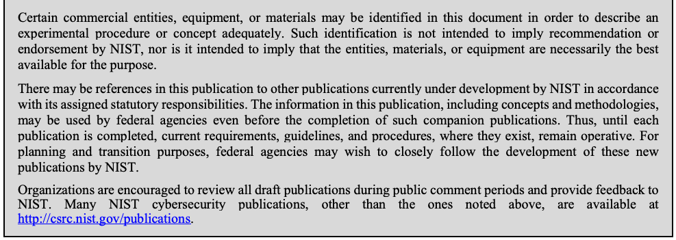
Comments on this publication may be submitted to: National Institute of Standards and Technology Attn: Computer Security Division, Information Technology Laboratory 100 Bureau Drive (Mail Stop 8930) Gaithersburg, MD 20899-8930 Email: sp800-192-comments@nist.gov
本刊行物に関するコメントは、以下に提出することができます: National Institute of Standards and Technology Attn: Computer Security Division, Information Technology Laboratory 100 Bureau Drive (Mail Stop 8930) Gaithersburg, MD 20899-8930 Email: sp800-192-comments@nist.gov
未レビュー訳All comments are subject to release under the Freedom of Information Act (FOIA).
すべてのコメントは、情報自由法（FOIA）に基づく公開の対象となる。
Reports on Computer Systems Technology
コンピュータシステム技術に関するレポート
The Information Technology Laboratory (ITL) at the National Institute of Standards and Technology (NIST) promotes the U.S. economy and public welfare by providing technical leadership for the Nation’s measurement and standards infrastructure. ITL develops tests, test methods, reference data, proof of concept implementations, and technical analyses to advance the development and productive use of information technology. ITL’s responsibilities include the development of management, administrative, technical, and physical standards and guidelines for the cost-effective security and privacy of other than national security-related information in federal information systems. The Special Publication 800-series reports on ITL’s research, guidelines, and outreach efforts in information system security, and its collaborative activities with industry, government, and academic organizations.
米国国立標準技術研究所（NIST）の情報技術研究所（ITL）は、米国の測定および標準インフラストラクチャに対する技術的リーダーシップを提供することにより、米国の経済と公共の福祉を促進している。ITLは、情報技術の開発と生産的な利用を前進させるために、テスト、テスト方法、参照データ、概念実証実装、および技術的分析を開発している。ITLの責任には、連邦情報システムにおける国家安全保障関連以外の情報の費用対効果の高いセキュリティおよびプライバシーのための管理基準、運営基準、技術基準、および物理的基準とガイドラインの開発が含まれる。特別刊行物800シリーズは、情報システムセキュリティにおけるITLの研究、ガイドライン、アウトリーチ活動、ならびに産業界、政府、学術組織との共同活動について報告している。
未レビュー訳Abstract
概要
Access control systems are among the most critical of computer security components. Faulty policies, misconfigurations, or flaws in software implementations can result in serious vulnerabilities. To formally and precisely capture the security properties that access control should adhere to, access control models are usually written, bridging the gap in abstraction between policies and mechanisms. Identifying discrepancies between policy specifications and their intended function is crucial because correct implementation and enforcement of policies by applications is based on the premise that the policy specifications are correct. As a result, policy specifications represented by models must undergo rigorous verification and validation through systematic verification and testing to ensure that the policy specifications truly encapsulate the desires of the policy authors. Verifying the conformance of access control policies and models is a non-trivial and critical task, and one important aspect of such verification is to formally check the inconsistency and incompleteness of the model and safety requirements of the policy, because an access control model and its implementation do not necessarily explicitly express the policy, which can also be implicitly embedded by mixing with direct access constraints or other access control models.
アクセス制御システムは、コンピュータセキュリティの構成要素の中で最も重要なものの一つである。欠陥のあるポリシー、誤設定、またはソフトウェア実装上の欠陥は、深刻な脆弱性を招く可能性がある。アクセス制御が遵守すべきセキュリティ特性を形式的かつ正確に捉えるために、通常はアクセス制御モデルが記述され、ポリシーとメカニズムの間の抽象度のギャップを埋める。アプリケーションによるポリシーの正しい実装および適用は、ポリシー仕様が正しいという前提に基づいているため、ポリシー仕様とその意図された機能との間の相違を特定することは極めて重要である。その結果、モデルによって表現されるポリシー仕様は、それらがポリシー作成者の意図を真に包含していることを保証するために、体系的な検証とテストを通じた厳密な検証および妥当性確認を経なければならない。アクセス制御ポリシーとモデルの適合性を検証することは容易ではなく、かつ極めて重要な作業であり、そのような検証の重要な側面の一つは、モデルの不整合性と不完全性、およびポリシーの安全要件を形式的に検査することである。なぜなら、アクセス制御モデルとその実装は必ずしもポリシーを明示的に表現しているとは限らず、ポリシーは、直接的なアクセス制約や他のアクセス制御モデルと混在することによって暗黙的に組み込まれていることもあるからである。
Keywords
キーワード
未レビュー訳access control; access control testing; access control verification; model testing; policy.
アクセス制御、アクセス制御テスト、アクセス制御検証、モデルテスト、ポリシー。
未レビュー訳Acknowledgments
謝辞
The authors Vincent C. Hu, Rick Kuhn and Dylan Yaga of the National Institute of Standards and Technology wish to thank their colleagues who reviewed drafts of this document. The authors also gratefully acknowledge and appreciate the comments and contributions made by government agencies, private organizations, and individuals in providing direction and assistance in the development of this document.
米国国立標準技術研究所（National Institute of Standards and Technology）の著者である Vincent C. Hu、Rick Kuhn、Dylan Yaga は、本文書の草案を査読した同僚に感謝する。また、著者らは、本文書の作成において方向性の提示や支援を行った政府機関、民間組織、および個人によるコメントと貢献に深く感謝する。
Executive Summary
エグゼクティブサマリー
未レビュー訳Access control (AC) systems control which users or processes have access to which resources in a system. They are among the most critical of security components. AC policies are specified to facilitate managing and maintaining AC systems. Faulty policies, misconfigurations, or flaws in software implementations can result in serious vulnerabilities. However, the correct implementation of AC policies by AC mechanisms is a very challenging problem. It is more common that a system’s privacy and security are compromised due to the misconfiguration of AC policies rather than the failure of cryptographic primitives or protocols. This problem becomes increasingly severe as software systems become more complex, and are deployed to manage a large amount of sensitive information and resources that are organized into sophisticated structures. Identifying discrepancies between policy specifications and their intended function is crucial because correct implementation and enforcement of policies by applications is based on the premise that the policy specifications are correct.
アクセス制御（AC）システムは、どのユーザーまたはプロセスがシステム内のどのリソースにアクセスできるかを制御する。これらは、セキュリティの構成要素の中で最も重要なものの一つである。ACシステムの管理および維持を容易にするために、ACポリシーが規定される。欠陥のあるポリシー、誤設定、またはソフトウェア実装上の欠陥は、深刻な脆弱性を招く可能性がある。しかし、ACメカニズムによってACポリシーを正しく実装することは、非常に困難な課題である。システムのプライバシーとセキュリティが侵害される原因としては、暗号プリミティブやプロトコルの失敗よりも、ACポリシーの誤設定によるものの方が一般的である。この問題は、ソフトウェアシステムがより複雑になり、高度な構造に編成された大量の機密情報やリソースを管理するために配備されるにつれて、ますます深刻になっている。アプリケーションによるポリシーの正しい実装および適用は、ポリシー仕様が正しいという前提に基づいているため、ポリシー仕様とその意図された機能との間の相違を特定することは極めて重要である。
Thus, AC models are usually written to bridge the gap in abstraction between policies and mechanisms to formally and precisely capture the safety requirements that AC systems should adhere to. As a result, policy specifications represented by models must undergo rigorous verification and validation through systematic verification and testing to ensure that the policy specifications truly encapsulate the desires of the policy authors. Verifying the conformance of AC policies and models is a non-trivial and critical task. One important aspect of such verification is to formally check the inconsistency and incompleteness of the model and policy safety requirements because an AC model and its implementation do not necessarily explicitly express the policy, which can also be implicitly embedded by mixing with direct access constraints or other AC models.
したがって、ACシステムが遵守すべき安全性要件を形式的かつ正確に捉えるために、ポリシーとメカニズムの間の抽象度のギャップを埋めるACモデルが通常記述される。その結果、モデルによって表現されるポリシー仕様は、それらがポリシー作成者の意図を真に包含していることを保証するために、体系的な検証とテストを通じた厳密な検証および妥当性確認を経なければならない。ACポリシーとモデルの適合性を検証することは容易ではなく、極めて重要な作業である。そのような検証の重要な側面の一つは、モデルおよびポリシーの安全性要件の不整合性と不完全性を形式的に検査することである。なぜなら、ACモデルとその実装は必ずしもポリシーを明示的に表現しているとは限らず、ポリシーは、直接的なアクセス制約や他のACモデルと混在することによって暗黙的に組み込まれていることもあるからである。
In this document, we review methods for the verification for AC models and the testing of model implementations by first defining standardized structures for AC models. We then demonstrate the expressions of AC models and safety requirements in a specification language of a model checker for the use of black box and white box model checkers that verify the integrity, coverage, and confinement of the specified safety requirements against models. In addition, an efficient way of generating test cases for the implementation from a model as well as a method for detecting AC rule faults in real time are discussed.
本文書では、まずACモデルの標準化された構造を定義することにより、ACモデルの検証手法およびモデル実装のテスト手法を概説する。次に、規定された安全性要件のモデルに対する完全性、カバレッジ、および閉じ込め（confinement）を検証するブラックボックスおよびホワイトボックスのモデルチェッカーを使用するために、モデルチェッカーの仕様言語におけるACモデルおよび安全性要件の表現を示す。さらに、モデルから実装向けのテストケースを効率的に生成する方法、およびACルールのフォールトをリアルタイムで検出する方法についても論じる。
Table of Contents
目次
EXECUTIVE SUMMARY..............................................................................................III
エグゼクティブサマリー..............................................................................................III
未レビュー訳1 INTRODUCTION — 1
1 はじめに — 1
未レビュー訳1.1 Authority — 1
1.1 権限 — 1
未レビュー訳1.2 Document Scope and Purpose — 1
1.2 文書の範囲と目的 — 1
1.3 Audience and Assumptions — 2
1.3 想定読者と前提条件 — 2
未レビュー訳1.4 Document Organization — 2
1.4 本書の構成 — 2
未レビュー訳2 ACCESS CONTROL POLICIES AND MODELS — 3
2 アクセス制御ポリシーおよびモデル — 3
未レビュー訳2.1 Access Control Policies — 3
2.1 アクセス制御ポリシー — 3
未レビュー訳2.2 AC Models — 5
2.2 ACモデル — 5
未レビュー訳3 ACCESS CONTROL SAFETY AND FAULTS — 8
3 アクセス制御の安全性およびフォールト — 8
未レビュー訳3.1 Safety — 8
3.1 安全性 — 8
未レビュー訳3.2 AC Faults — 8
3.2 ACフォールト — 8
未レビュー訳3.3 Multi-policies considerations — 9
3.3 複数ポリシーに関する考慮事項 — 9
未レビュー訳3.4 Vulnerability Hierarchies in Access Control Configurations — 10
3.4 アクセス制御構成における脆弱性階層 — 10
4 POLICY VERIFICATION PRINCIPLES — 15
4 ポリシー検証の原則 — 15
未レビュー訳4.1 Model Verification — 15
4.1 モデル検証 — 15
未レビュー訳4.2 Coverage and Confinements Verifications — 19
4.2 カバレッジおよび閉じ込め検証 — 19
4.3 Implementation Test — 21
4.3 実装テスト — 21
未レビュー訳5 VERIFICATION AND TESTING TECHNOLOGY — 23
5 検証およびテスト技術 — 23
未レビュー訳5.1 Model Checker — 23
5.1 モデルチェッカー — 23
5.2 Multi-Terminal Binary Decision Diagrams (MTBDD) — 26
5.2 多端子二分決定図（MTBDD） — 26
5.3 Formal Methods — 29
5.3 形式手法 — 29
未レビュー訳5.4 Mutation Testing — 29
5.4 ミューテーションテスト — 29
未レビュー訳5.5 Automated Combinatorial Testing — 34
5.5 自動組合せテスト — 34
5.6 Pseudo-exhaustive Testing — 37
5.6 疑似網羅的テスト — 37
未レビュー訳5.7 Real Time AC Rule Implementation Detection — 41
5.7 リアルタイムACルール実装検出 — 41
未レビュー訳5.8 Test scheme — 42
5.8 テストスキーム — 42
未レビュー訳6 EXAMPLE SYSTEM -- NIST ACPT — 44
6 システムの例 -- NIST ACPT — 44
未レビュー訳7 CONCLUSIONS — 54
7 結論 — 54
未レビュー訳APPENDIX A - GLOSSARY — 55
付録A - 用語集 — 55
未レビュー訳APPENDIX B – SOD CONSTRAINTS — 57
付録B – SOD制約 — 57
未レビュー訳REFERENCES — 58
参考文献 — 58
未レビュー訳List of Figures
図目次
未レビュー訳Figure 1 Privilege leaks through inter-system privilege inheritance — 10
図1 システム間の特権継承による特権リーク — 10
未レビュー訳Figure 2 Example Vulnerability Hierarchy — 13
図2 脆弱性階層の例 — 13
Figure 3 AC model and safety requirement — 16
図3 ACモデルと安全性要件 — 16
未レビュー訳Figure 4 Example of unreachable state in the model — 17
図4 モデルにおける到達不能状態の例 — 17
未レビュー訳Figure 5 Example of ambiguous value and the safety requirement in an AC model — 18
図5 ACモデルにおける曖昧な値と安全性要件の例 — 18
Figure 6 Example of uncovered value and the safety requirement in an AC model — 19
図6 ACモデルにおける未カバーの値および安全性要件の例 — 19
Figure 7 Relations of Policy, Model, and Safety requirements — 19
図7 ポリシー、モデル、および安全性要件の関係 — 19
Figure 8 Example of uncovered rules in a AC model — 20
図8 ACモデルにおける未カバーのルールの例 — 20
Figure 9 Unconfined rule in a property — 21
図9 プロパティにおける閉じ込められていないルール（Unconfined rule） — 21
Figure 10 AC model and property — 25
図10 ACモデルとプロパティ — 25
未レビュー訳Figure 11 An MTBDD for a simple policy — 27
図11 単純なポリシーのMTBDD — 27
未レビュー訳Figure 12 Sample MTBDDs for rules and rule combination — 28
図12 ルールおよびルール結合のMTBDDのサンプル — 28
未レビュー訳Figure 13 Rules in an example policy model — 30
図13 ポリシーモデル例におけるルール — 30
未レビュー訳Figure 14 The first mutant model — 30
図14 最初の変異体（ミュータント）モデル — 30
未レビュー訳Figure 15 The second mutant model — 31
図15 2番目の変異体（ミュータント）モデル — 31
未レビュー訳Figure 16 Counterexamples for the mutant model in Figure 13 — 31
図16 図13の変異体（ミュータント）モデルに対する反例 — 31
Figure 17 Mutant generation — 33
図17 変異体（ミュータント）生成 — 33
未レビュー訳Figure 18 Venn diagram illustrating the four safety requirement states — 34
図18 4つの安全要求状態を示すベン図 — 34
未レビュー訳Figure 19 Simple MLS model — 35
図19 単純なMLSモデル — 35
Figure 20 Covering array for a 2-way example — 35
図20 2-wayの例における被覆配列（カバリングアレイ） — 35
未レビュー訳Figure 21 Test cases for test oracle — 36
図21 テストオラクル用のテストケース — 36
未レビュー訳Figure 22 MLS policy model — 42
図22 MLSポリシーモデル — 42
Figure 23 AC testing framework — 43
図23 ACテストフレームワーク — 43
未レビュー訳Figure 24 ACPT screen shots — 44
図24 ACPTのスクリーンショット — 44
未レビュー訳Figure 25 ACPT architecture — 45
図25 ACPTアーキテクチャ — 45
Figure 26 ACPT function flow — 46
図26 ACPT機能フロー — 46
未レビュー訳Figure 27 ACPT Showing ABAC Boolean Policy Testing — 49
図27 ABACブールポリシーテストを示すACPT — 49
未レビュー訳Figure 28 Method for finding Grant Solutions – Each Section through an OR Gate — 49
図28 許可解（Grant Solutions）を見つけるための方法 – ORゲートを通る各セクション — 49
Figure 29 Example Output for Grant Results — 50
図29 許可結果（Grant Results）の出力例 — 50
未レビュー訳Figure 30 Method for finding Deny Solutions – Each Section through an AND Gate — 51
図30 拒否（Deny）解を見つけるための方法 – ANDゲートを介した各セクション — 51
未レビュー訳Figure 31 Example Output for Deny Solutions — 52
図31 拒否（Deny）解の出力例 — 52
未レビュー訳Figure 32 Solving for Relational Expressions — 53
図32 関係式の解法 — 53
未レビュー訳List of Tables
表の目次
未レビュー訳Table 1: 3-way covering array — 40
表1：3ウェイ被覆配列 — 40
未レビュー訳Table 2: 3-way covering array with constraint \({\sim}\mathrm{R}\) — 40
表2：制約\({\sim}\mathrm{R}\)を持つ3ウェイ被覆配列 — 40
Table 3: Result of GRANT Testing — 50
表3：GRANTテストの結果 — 50
未レビュー訳Table 4: Result of DENY Testing — 51
表4：DENYテストの結果 — 51
未レビュー訳1 INTRODUCTION
1 はじめに
未レビュー訳1.1 Authority
1.1 権限
The National Institute of Standards and Technology (NIST) developed this document in furtherance of its statutory responsibilities under the Federal Information Security Management Act (FISMA) of 2002, Public Law 107-347.
米国国立標準技術研究所（NIST）は、2002年連邦情報セキュリティマネジメント法（FISMA）、公法107-347に基づく法定責任を推進するために本文書を作成した。
NIST is responsible for developing standards and guidelines, including minimum requirements, for providing adequate information security for all agency operations and assets, but such standards and guidelines shall not apply to national security systems. This document is consistent with the requirements of the Office of Management and Budget (OMB) Circular A-130, Section 8b(3), “Securing Agency Information Systems,” as analyzed in A-130, Appendix IV: Analysis of Key Sections. Supplemental information is provided in A-130, Appendix III.
NISTは、すべての連邦機関の業務および資産に適切な情報セキュリティを提供するための最低限の要件を含む標準およびガイドラインを策定する責任を負っているが、そのような標準およびガイドラインは国家安全保障システムには適用されないものとする。本文書は、行政管理予算局（OMB）サーキュラーA-130第8b(3)項「連邦機関の情報システムのセキュリティ確保」（A-130付録IV「主要セクションの分析」で分析）の要件に合致している。補足情報はA-130付録IIIに記載されている。
未レビュー訳This guideline has been prepared for use by federal agencies. It may be used by nongovernmental organizations on a voluntary basis and is not subject to copyright, though attribution is desired.
本ガイドラインは、連邦機関による使用のために作成されたものである。非政府組織が自発的に使用することもでき、著作権の対象外であるが、出典の明記が望まれる。
Nothing in this document should be taken to contradict standards and guidelines made mandatory and binding on federal agencies by the Secretary of Commerce under statutory authority, nor should these guidelines be interpreted as altering or superseding the existing authorities of the Secretary of Commerce, Director of the OMB, or any other federal official.
本文書のいかなる内容も、商務長官が法定の権限に基づき連邦機関に対して義務的かつ拘束力を持つものとした標準およびガイドラインと矛盾するものと解釈されるべきではなく、またこれらのガイドラインは、商務長官、OMB長官、またはその他の連邦職員の既存の権限を変更または差し替えるものとして解釈されるべきではない。
未レビュー訳1.2 Document Scope and Purpose
1.2 文書の範囲と目的
The purpose of this document is to provide agencies with technical information to assist them in designing, verifying and testing access control (AC) models. The document discusses the principles, requirements, theories, and schemes for the verification and testing of AC models that are designed to assure the AC policy can be implemented by a mechanism.
本文書の目的は、アクセス制御（AC）モデルの設計、検証、およびテストを支援するための技術情報を各機関に提供することである。本文書では、ACポリシーがメカニズムによって実装可能であることを保証するように設計されたACモデルの検証およびテストのための原則、要件、理論、およびスキームについて議論する。
未レビュー訳AC policies are specified to control the access of system resources, AC mechanisms control which users or processes have access to which resources in a system. However, the correct implementations of AC policies by AC mechanisms are very challenging problems. Thus, AC models are usually written to bridge the gap in abstraction between policies and mechanisms to formally and precisely capture the safety requirements that AC systems should adhere to. In this document, we review methods for the verification for AC models and the testing of model implementations by first defining standardized structures for AC models. We then demonstrate the expressions of AC models and safety requirements in a specification language of a model checker for the use of black box and white box model checkers that verify the integrity, coverage, and confinement of the specified safety requirements against models. In addition, an efficient way of generating test cases for the implementation from a model, and a method for detecting AC rule faults in real time are discussed.
ACポリシーはシステムリソースへのアクセスを制御するために規定され、ACメカニズムはシステム内のどのユーザーまたはプロセスがどのリソースにアクセスできるかを制御する。しかしながら、ACメカニズムによってACポリシーを正しく実装することは非常に困難な課題である。したがって、通常はポリシーとメカニズムの間の抽象度のギャップを埋め、ACシステムが遵守すべき安全性要件を形式的かつ正確に捉えるためにACモデルが記述される。本文書では、まずACモデルの標準化された構造を定義することにより、ACモデルの検証およびモデル実装のテスト手法を概説する。次に、規定された安全性要件のモデルに対する完全性、カバレッジ、および閉じ込め（confinement）を検証するブラックボックスおよびホワイトボックスのモデルチェッカーを使用するために、モデルチェッカーの仕様言語におけるACモデルおよび安全性要件の表現を示す。さらに、モデルから実装用のテストケースを効率的に生成する方法、およびACルールのフォールトをリアルタイムで検出する方法について論じる。
1.3 Audience and Assumptions
1.3 想定読者および前提条件
This document is intended to provide practical and conceptual guidance for security managers, administrators, and system testers whose expertise is related to AC. The authors assume that the readers have basic operating system, computing theory, and software assurance expertise, as well as some security expertise, especially in the field of AC. Because of the constantly changing nature of the information technology industry, readers are strongly encouraged to take advantage of other resources (including those listed in this document) for more current and detailed information.
本文書は、ACに関連する専門知識を持つセキュリティ管理者、システム管理者、およびシステムテスターに実践的かつ概念的なガイダンスを提供することを目的としている。執筆者は、読者が基本的なオペレーティングシステム、計算機科学の理論、およびソフトウェアアシュアランスの専門知識に加え、特にAC分野におけるセキュリティの専門知識を有していることを前提としている。情報技術業界は絶えず変化する性質を持つため、読者がより最新かつ詳細な情報を得るために他のリソース（本文書に記載されているものを含む）を活用することを強く推奨する。
1.4 Document Organization
1.4 本文書の構成
This document is divided into seven sections, followed by two appendixes. Section 1 states the authority, scope, purpose, audience, and assumptions of this document. Section 2 introduces the general concept of AC policy and model. Section 3 explains the elements of AC safety and faults. The focus of this document is presented in Section 4, which introduces main concepts for AC model verification and testing. Section 5 provides some major methods used to achieve the concepts described in Section 4. Section 6 demonstrates the NIST’s implementation of AC verification and test tool: Access Control Policy Tool (ACPT). Section 7 presents the conclusion to the document. Appendixes A - Glossary, B – SOD Policies, and References provide information that supports the document.
本文書は7つのセクションに分かれており、その後に2つの付録が続く。セクション1では、本文書の権威、範囲、目的、想定読者、および前提条件を述べる。セクション2では、ACポリシーおよびモデルの一般的な概念を紹介する。セクション3では、ACの安全性および障害の要素について説明する。本文書の主眼はセクション4に提示されており、ACモデルの検証とテストに関する主要な概念を紹介する。セクション5では、セクション4で説明した概念を達成するために使用されるいくつかの主要な方法を提供する。セクション6では、NISTによるAC検証およびテストツールの実装であるAccess Control Policy Tool（ACPT）を実演する。セクション7では、本文書の結論を述べる。付録A（用語集）、付録B（SODポリシー）、および参考文献は、本文書を補足する情報を提供する。
未レビュー訳2 ACCESS CONTROL POLICIES AND MODELS
2 アクセス制御ポリシーとモデル
未レビュー訳The objective of an access control (AC) system is often described in terms of protecting system resources against inappropriate or undesired user access. From a business perspective, this objective could just as well be described in terms of the optimal sharing of information to users and applications. However, a greater degree of sharing may get in the way of resource protection, so a sufficiently fine-grained AC policy should enable selective sharing of information where in its absence, sharing may be considered too risky altogether.
アクセス制御（AC）システムの目的は、不適切または望ましくないユーザーアクセスからシステムリソースを保護するという観点で説明されることが多い。ビジネスの観点からは、この目的はユーザーやアプリケーションに対する情報の最適な共有という観点でも同様に説明できる。しかし、共有の度合いを高めるとリソース保護の妨げになる可能性があるため、十分にきめ細かなACポリシーによって情報の選択的共有を可能にすべきであり、それがなければ共有は全体としてリスクが高すぎるとみなされる可能性がある。
Correct implementation and enforcement of AC policies is based on the premise that the policy specifications are correct without hidden or conflicted rules that cause leaking or blocking access to objects. AC policy specifications must undergo rigorous verification and validation through systematic testing to ensure that the policy specifications truly encapsulate the desires of the policy authors. Verifying and testing of AC policies is a lot like general application software testing, but there are differences as well. To formally and precisely capture the safety requirements that the AC system should adhere to, models are usually written to bridge the rather wide gap in abstraction between policy and mechanism. Thus, an AC model provides unambiguous and precise expression as well as a reference for design and implementation of safety requirements.
ACポリシーの正しい実装と適用は、オブジェクトへのアクセスの漏洩や遮断を引き起こす隠れたルールや矛盾するルールのない、正しいポリシー仕様に基づいていることを前提とする。ポリシー仕様がポリシー作成者の意図を真に包含していることを保証するために、ACポリシー仕様は体系的なテストを通じて厳格な検証および妥当性確認を受けなければならない。ACポリシーの検証とテストは一般的なアプリケーションソフトウェアのテストと非常によく似ているが、相違点もある。ACシステムが準拠すべき安全性要件を形式的かつ正確に捉えるために、通常、ポリシーとメカニズムの間のかなり広い抽象度のギャップを埋めるモデルが記述される。したがって、ACモデルは、安全性要件の設計および実装のための基準となるだけでなく、曖昧さのない正確な表現を提供する。
2.1 Access Control Policies
2.1 アクセス制御ポリシー
AC policies are high-level requirements that specify how access is managed and who, under what circumstances, may access what information. While AC policies can be application-specific and thus taken into consideration by the application vendor, policies are just as likely to pertain to user actions within the context of an organizational unit or across organizational boundaries. For instance, policies may pertain to resource usage within or across organizational units or may be based on need-to-know, competence, authority, obligation, or conflict-of-interest factors. Such policies may span multiple computing platforms and applications. [NIST-IR-7316]
ACポリシーは、アクセスがどのように管理され、誰がどのような状況下でどの情報にアクセスしてよいかを規定する高レベルの要件である。ACポリシーはアプリケーション固有であり、したがってアプリケーションベンダーによって考慮される場合もあるが、組織単位内または組織境界を越えたコンテキストにおけるユーザーの行動に関連することも同様に多くある。例えば、ポリシーは組織単位内または組織単位間にわたるリソースの使用に関連する場合や、知る必要性（need-to-know）、適格性、権限、義務、または利益相反の要因に基づく場合がある。このようなポリシーは、複数のコンピューティングプラットフォームやアプリケーションにまたがることがある。[NIST-IR-7316]
未レビュー訳It is not practical to generate a list of generic AC policies, since business objectives, tolerance for risk, corporate culture, and the regulatory responsibilities that influence policy differ from enterprise to enterprise, and even from one organizational unit to another. The AC policies within a hospital may pertain to privacy and competency (e.g., only doctors and nurse practitioners may prescribe medication), and hospital policies will differ greatly from those of a military system or a financial institution. Even within a specific business domain, policy will differ from institution to institution. Furthermore, AC policies are dynamic in nature, in that they are likely to change over time in reflection of ever evolving business factors, government regulations, and environmental conditions. There are several well-known AC policies, which can be categorized as discretionary or non-discretionary. Typically, discretionary AC policies are associated with identity-based AC, and non-discretionary ACs are associated with rule-based controls (for example, mandatory security policy).
一般的なACポリシーのリストを作成することは現実的ではない。ポリシーに影響を与えるビジネス目標、リスク許容度、企業文化、規制上の責任は、企業ごとに異なり、さらには組織単位ごとにも異なるためである。病院内のACポリシーはプライバシーと適格性に関連する場合があり（例えば、医師とナースプラクティショナーのみが薬を処方できる）、病院のポリシーは軍事システムや金融機関のポリシーとは大きく異なる。特定のビジネス領域内であっても、ポリシーは機関ごとに異なる。さらに、ACポリシーは本質的に動的であり、絶えず進化するビジネス要因、政府規制、環境条件を反映して時間とともに変化する可能性が高い。よく知られているACポリシーがいくつかあり、それらは任意的または非任意的に分類できる。通常、任意的ACポリシーはIDベースのACに関連付けられ、非任意的ACはルールベースの制御（例えば、強制セキュリティポリシー）に関連付けられる。
Discretionary Access Control
任意アクセス制御
未レビュー訳Discretionary AC (DAC) leaves a certain amount of AC to the discretion of the object's owner, or anyone else who is authorized to control the object's access. For example, DAC is generally used to limit a user's access to a file; it is the owner of the file who controls other users' accesses to the file. Only those users specified by the owner may have some combination of read, write, execute, etc. permissions to the file. DAC policy tends to be very flexible and is widely used in commercial and government sectors. However, DAC is known to be inherently weak for two reasons. First, granting read access is transitive; for example, when Ann grants Bob read access to a file, nothing stops Bob from copying the contents of Ann’s file to an object that Bob controls. Bob may now grant any other user access to the copy of Ann’s file without Ann’s knowledge. Second, DAC policy is vulnerable to Trojan horse attacks. Because programs inherit the identity of the invoking user, Bob may, for example, write a program for Ann that, on the surface, performs some useful function, while at the same time destroy the contents of Ann’s files. When investigating the problem, the audit files would indicate that Ann destroyed her own files. Thus, formally, the drawbacks of DAC are as follows:
任意AC（DAC）は、一定量のACをオブジェクトの所有者、またはオブジェクトのアクセスを制御する権限を与えられた他の誰かの裁量に委ねる。例えば、DACは一般にファイルへのユーザーのアクセスを制限するために使用される。ファイルへの他のユーザーのアクセスを制御するのはファイルの所有者である。所有者によって指定されたユーザーのみが、そのファイルに対して読み取り、書き込み、実行などの権限の何らかの組み合わせを持つことができる。DACポリシーは非常に柔軟である傾向があり、商業部門および政府部門で広く使用されている。しかし、DACには本質的に2つの理由から脆弱であることが知られている。第1に、読み取りアクセスの付与は推移的である。例えば、AnnがBobにファイルへの読み取りアクセスを許可した場合、BobがAnnのファイルの内容をBobが制御するオブジェクトにコピーすることを防ぐものは何もない。BobはAnnに知られることなく、Annのファイルのコピーへのアクセスを他の任意のユーザーに許可することができる。第2に、DACポリシーはトロイの木馬攻撃に対して脆弱である。プログラムは呼び出し元ユーザーのIDを継承するため、例えばBobは、表面的には有用な機能を実行しながら、同時にAnnのファイルの内容を破壊するプログラムをAnnのために作成することができる。問題を調査する際、監査ファイルはAnnが自身のファイルを破壊したことを示すことになる。したがって、正式には、DACの欠点は次のとおりである。
未レビュー訳•Information can be copied from one object to another; therefore, there is no real assurance on the flow of information in a system.
•情報は1つのオブジェクトから別のオブジェクトへとコピーできるため、システム内の情報の流れに関する真の保証はない。
•No restrictions apply to the usage of information when the user has received it.
•ユーザーが情報を受け取った後の、その情報の使用には制限が適用されない。
•The privileges for accessing objects are decided by the owner of the object, rather than through a system-wide policy that reflects the organization’s safety requirements.
•オブジェクトへのアクセス権限は、組織の安全要件を反映したシステム全体のポリシーを通じてではなく、オブジェクトの所有者によって決定される。
ACLs and owner/group/other AC mechanisms (e.g. permission bits in UNIX) are by far the most common mechanisms for implementing DAC policies. Other mechanisms, even though not designed with DAC in mind, may have the capabilities to implement a DAC policy.
ACLおよび所有者/グループ/その他のACメカニズム（例：UNIXのパーミッションビット）は、DACポリシーを実装するための群を抜いて最も一般的なメカニズムである。他のメカニズムも、DACを念頭に置いて設計されていない場合であっても、DACポリシーを実装する能力を備えている場合がある。
Non-Discretionary Access Control
非任意アクセス制御
未レビュー訳In general, all AC policies other than DAC are grouped under the category of non-discretionary AC (NDAC). As the name implies, policies in this category have rules that are not established at the discretion of the user. Non-discretionary policies establish controls that cannot be changed by users, but only through administrative action. Static NDAC, for example, are MLS, ABAC, and RBAC, and dynamic NDAC such as Separation of duty (SOD) policy can be used to enforce constraints on the assignment of users to roles or tasks. An example of a constraint is the requirement that two roles be mutually exclusive; e.g., if one role requests expenditures and another approves them, the organization may prohibit the same user from being assigned to both roles. So, membership in one role may prevent the user from being a member of one or more other roles, depending on the SOD rules, such as Work Flow and RBAC. Another example of NDAC is a history-based SOD policy that regulates, for example, whether the same subject (role) can access the same object for a variable number of times.
一般に、DAC以外のすべてのACポリシーは、非任意アクセス制御（NDAC）のカテゴリに分類される。その名が示すように、このカテゴリのポリシーには、ユーザーの裁量では確立されないルールが存在する。非任意ポリシーは、ユーザーによって変更することはできず、管理者によるアクションを通じてのみ変更可能な制御を確立する。例えば、静的NDACにはMLS、ABAC、RBACがあり、職務分離（SOD）ポリシーなどの動的NDACは、役割（ロール）やタスクへのユーザー割り当てに対する制約を強制するために使用できる。制約の例としては、2つの役割が相互排他的でなければならないという要件がある。例えば、一方の役割が支出を申請し、もう一方がそれを承認する場合、組織は同じユーザーが両方の役割に割り当てられることを禁止することがある。したがって、ワークフローやRBACなどのSODルールに応じて、ある役割に属することで、ユーザーが1つ以上の他の役割に属することが妨げられる場合がある。NDACの別の例としては、例えば同じサブジェクト（役割）が可変回数だけ同じオブジェクトにアクセスできるかどうかを規制する、履歴ベースのSODポリシーがある。
Due to the fact that DAC policies have no well-defined variables in terms of model definition, they are in general hard to formalize and verify efficiently with first order models, which most of the black box and white box verification tools are based on. This document does not cover DAC policies.
DACポリシーにはモデル定義の観点から明確に定義された変数が存在しないという事実により、それらは一般に、大部分のブラックボックスおよびホワイトボックス検証ツールがベースとしている一階モデルを用いて効率的に形式化および検証することが困難である。本書ではDACポリシーは対象としていない。
2.2 AC Models
2.2 ACモデル
Rather than attempting to evaluate and analyze AC policies exclusively at the mechanism level, security models are usually written to describe the security properties of an AC policy. An AC model is a formal presentation of an AC policy enforced by the mechanism and is useful for proving theoretical limitations of a system so that AC mechanisms can be designed to adhere to the properties of the model. Users see an AC model as an unambiguous and precise expression of requirements. Vendors and system developers see AC models as specification of design and implementation requirements. On one extreme, an AC model may be rigid in its implementation of a single policy. On the other extreme, an AC model will allow for the expression of a wide variety of policies and policy classes. In general, non-discretionary AC polices can be modeled by static, dynamic and historical Finite State Machine (FSM) models from one of the three following classes: static, dynamic and historical.
ACポリシーをメカニズムのレベルだけで評価・分析しようとするのではなく、通常はACポリシーのセキュリティ特性を記述するためにセキュリティモデルが記述される。ACモデルは、メカニズムによって強制されるACポリシーを形式的に表現したものであり、ACメカニズムがモデルの特性に準拠するように設計できるように、システムの理論的な限界を証明するのに役立つ。ユーザーはACモデルを要件の曖昧さのない正確な表現と見なす。ベンダーやシステム開発者は、ACモデルを設計および実装要件の仕様と見なす。一方の極端な例として、ACモデルは単一のポリシーの実装において厳格である場合がある。もう一方の極端な例では、ACモデルは多種多様なポリシーおよびポリシークラスの表現を可能にする。一般に、非任意ACポリシーは、静的、動的、履歴という3つのクラスのいずれかから、静的、動的、および履歴有限状態機械（FSM）モデルによってモデル化できる。
未レビュー訳a) Static Policy Class
a) 静的ポリシークラス
未レビュー訳Policies in the Static Policies Class regulate the access permission by static system states or conditions such as rules, attributes, and system environments (times and locations for access). Popular AC policies with these types of properties include ABAC [NIST_SP-162], MLS, and RBAC [NIST-IR-7316]. These types of policies can be specified by asynchronous or direct specification expressions of an FSM model. The transition relation of authorization states is directly specified as a propositional formula in terms of the current and next values of the state variables. Any current state/next state pair is in the transition relation if and only if it satisfies the formula, as demonstrated in Example 1:
静的ポリシークラスのポリシーは、ルール、属性、システム環境（アクセスの時間や場所）などの静的なシステム状態または条件によってアクセス許可を規制する。これらの種類のプロパティを持つ一般的なACポリシーには、ABAC [NIST_SP-162]、MLS、およびRBAC [NIST-IR-7316]が含まれる。これらのタイプのポリシーは、FSMモデルの非同期仕様表現または直接仕様表現によって指定できる。認可状態の遷移関係は、状態変数の現在の値と次の値の観点から命題論理式として直接指定される。例1で示されているように、任意の現在の状態/次の状態のペアは、その論理式を満たす場合にのみ遷移関係に含まれる。
未レビュー訳{ VARIABLES access_state : boolean; /* 1 as grant, 0 as deny*/ ………. INITIAL access_state := 0; TRANS /* transit to next access state */ next (access_state) := ((constraint_1 & constraint_2 & …… constraint_n) | (constraint_a & constraint_b & …… constraint_m) ……..); }
{ VARIABLES access_state : boolean; /* 1はgrant（許可）、0はdeny（拒否） */ ………. INITIAL access_state := 0; TRANS /* 次のアクセス状態へ遷移 */ next (access_state) := ((constraint_1 & constraint_2 & …… constraint_n) | (constraint_a & constraint_b & …… constraint_m) ……..); }
未レビュー訳Example 1 – static AC model
例1 – 静的ACモデル
未レビュー訳The system state of access authorization is initialized as the deny state and moved to the grant state for any access request that complies with the constraints of the rule corresponding with each constraint predicate (i.e., \(\mathit{constraint\_1} \ldots. \mathbin{\&} \mathit{constraint\_n}\)) in a rule, and stay in the deny state otherwise.
アクセス認可のシステム状態はdeny（拒否）状態として初期化され、ルール内の各制約述語（すなわち、\(\mathit{constraint\_1} \ldots. \mathbin{\&} \mathit{constraint\_n}\)）に対応するルールの制約に準拠するすべてのアクセス要求に対してgrant（許可）状態に遷移し、そうでない場合はdeny状態にとどまる。
b) Dynamic Policy Class
b) 動的ポリシークラス
未レビュー訳Policies in the Dynamic Policy Class may include temporal constraints that regulate access permission by dynamic system states or conditions such as specified events or system counters or N-person AC policy. An AC model with these types of properties specifies that accesses are permitted only by a certain subject to a certain object with certain limitations (e.g., object x can be accessed no more than i times simultaneously by user group y). For example, if a user’s role is a cashier, he or she cannot be an accountant at the same time when handling a customer’s checks. This type of policy can be specified with asynchronous or direct specification expressions of an FSM model, which uses a variable semaphore to express the dynamic properties of the authorization decision process. Another example of dynamic constraint states is enforcing a limited number of concurrent accesses to an object. The authorization process for a user thus has four states: idle, entering, critical, and exiting. A user is normally in the idle state. The user is moved to the entering state when the user wants to access the critical object. If the limited number of access times is not reached, the user is moved to the critical state, and the number of the current access is increased by 1. When the user finishes accessing the critical object, the user is moved to the exiting state, and the number of the current access is decreased by 1. Then the user is moved from the exiting state to the idle state. The authorization process can be modeled as Example 2:
動的ポリシークラスのポリシーには、指定されたイベントやシステムカウンター、あるいはN人ACポリシーなどの動的なシステム状態や条件によってアクセス許可を規制する時間的制約が含まれる場合がある。このような特性を持つACモデルは、特定の主体による特定のオブジェクトへのアクセスが、特定の制限（例えば、オブジェクトxにはユーザーグループyによって同時にi回までしかアクセスできないなど）の下でのみ許可されることを規定する。例えば、あるユーザーの役割が出納係である場合、そのユーザーは顧客の小切手を処理する際に同時に会計係になることはできない。この種のポリシーは、認可決定プロセスの動的な特性を表現するために変数セマフォを使用するFSMモデルの非同期表現または直接指定表現によって指定できる。動的制約状態の別の例は、オブジェクトへの同時アクセスの制限数を強制することである。したがって、ユーザーの認可プロセスには、idle、entering、critical、exitingの4つの状態が存在する。ユーザーは通常、idle状態にある。ユーザーがクリティカルオブジェクトにアクセスしようとすると、entering状態に遷移する。アクセスの制限回数に達していない場合、ユーザーはcritical状態に遷移し、現在のアクセス数が1増加する。ユーザーがクリティカルオブジェクトへのアクセスを終了すると、ユーザーはexiting状態に遷移し、現在のアクセス数が1減少する。その後、ユーザーはexiting状態からidle状態に遷移する。認可プロセスは例2のようにモデル化できる：
未レビュー訳{ VARIABLES count, access_limit : INTEGER; request_1 : process_request (count); request_2 : process_request (count); ……. request_n: process_request (count); /*max number of user requests allowed by the system*/ access_limit := k; /*max number of concurrent access*/ count := 0; act {rd, wrt}; object {obj}; process_request (access_limit) {
{ VARIABLES count, access_limit : INTEGER; request_1 : process_request (count); request_2 : process_request (count); ……. request_n: process_request (count); /*システムによって許可されるユーザー要求の最大数*/ access_limit := k; /*同時アクセスの最大数*/ count := 0; act {rd, wrt}; object {obj}; process_request (access_limit) {
未レビュー訳VARIABLES permission : {start, grant, deny}; state : {idle, entering, critical, exiting}; INITIAL_STATE (permission) := start; INITIAL_STATE (state) := idle; NEXT_STATE (state) := CASE { state == idle : {idle, entering}; state == entering & ! (count > access_limit): critical; state == critical : {critical, exiting}; state == exiting : idle; OTHERWISE: state}; NEXT_STATE (count) := CASE { state == entering : count + 1; state == exiting : count -1; OTHERWISE: DO_NOTHING }; NEXT_STATE (permission) := CASE { (state == entering)& (act == rd) & (object == obj): grant; OTHERWISE: deny; } }
VARIABLES permission : {start, grant, deny}; state : {idle, entering, critical, exiting}; INITIAL_STATE (permission) := start; INITIAL_STATE (state) := idle; NEXT_STATE (state) := CASE { state == idle : {idle, entering}; state == entering & ! (count > access_limit): critical; state == critical : {critical, exiting}; state == exiting : idle; OTHERWISE: state}; NEXT_STATE (count) := CASE { state == entering : count + 1; state == exiting : count -1; OTHERWISE: DO_NOTHING }; NEXT_STATE (permission) := CASE { (state == entering)& (act == rd) & (object == obj): grant; OTHERWISE: deny; } }
未レビュー訳}
未レビュー訳Example 2 – dynamic AC model c) Historical Policy Class
例 2 – 動的ACモデル c) 履歴ポリシー（Historical Policy）クラス
未レビュー訳Policies in the Historical Policy Class regulate access permissions by historical access states or recorded and predefined series of events. Representative AC policies for this type of AC policies include Chinese Wall and Workflow AC policies. This policy class can be best described by synchronous or direct specification expressions of an FSM model. For example, the synchronous FSM specification in Example 3 specifies a Chinese Wall AC policy where there are two Conflict of Interest groups \(\mathit{COI}_1\), \(\mathit{COI}_2\) of objects:
履歴ポリシークラスのポリシーは、過去のアクセス状態、または記録され事前に定義された一連のイベントによってアクセス権限を規制する。このタイプのACポリシーの代表例には、チャイニーズウォールおよびワークフローACポリシーが含まれる。このポリシークラスは、FSMモデルの同期的または直接的な仕様表現によって最も適切に記述できる。例えば、例3の同期FSM仕様は、オブジェクトの2つの利益相反（Conflict of Interest）グループ \(\mathit{COI}_1\)、\(\mathit{COI}_2\) が存在するチャイニーズウォールACポリシーを指定している:
{ VARIABLES
{ VARIABLES
未レビュー訳access {grant, deny}; act {rd, wrt}; object {none, COI1, COI2}; state {1, 2, 3}; INITIAL_STATE(state) := 1; INITIAL_STATE(object) := none; NEXT_STATE(state) := CASE { state == 1 & act == rd & object == COI1: 2; state == 1 & act == rd & object == COI2: 3; state == 2 & act == rd & object == COI1: 2; state == 2 & act == rd & object == COI2: 2; state == 3 & act == rd & object == COI1: 3; state == 3 & act == rd & object == COI2: 3; OTHERWISE: 1; }; NEXT_STATE(access) := CASE { state == 2 & act == rd & object == COI1: grant; state == 3 & act == rd & object == COI2: grant; OTHERWISE: deny; }; NEXT_STATE (act) := act; NEXT_STATE (object) := object; }
access {grant, deny}; act {rd, wrt}; object {none, COI1, COI2}; state {1, 2, 3}; INITIAL_STATE(state) := 1; INITIAL_STATE(object) := none; NEXT_STATE(state) := CASE { state == 1 & act == rd & object == COI1: 2; state == 1 & act == rd & object == COI2: 3; state == 2 & act == rd & object == COI1: 2; state == 2 & act == rd & object == COI2: 2; state == 3 & act == rd & object == COI1: 3; state == 3 & act == rd & object == COI2: 3; OTHERWISE: 1; }; NEXT_STATE(access) := CASE { state == 2 & act == rd & object == COI1: grant; state == 3 & act == rd & object == COI2: grant; OTHERWISE: deny; }; NEXT_STATE (act) := act; NEXT_STATE (object) := object; }
未レビュー訳Example 3 – historical AC model
例3 – 歴史的なACモデル
未レビュー訳Note that in practice, the same AC policies may be expressed by multiple different AC models or expressed by a single model in addition to extra constraint rules outside of the model. Verifying the conformance of AC policies and models is a non-trivial and critical task. One important aspect of such verification is to formally check for inconsistency and incompleteness of the model and to verify safety requirements, because an AC model does not necessarily explicitly express the policy, which can also be implicitly embedded by mixing with direct access constraints or other AC models.
実際には、同一のACポリシーが複数の異なるACモデルによって表現されたり、モデル外の追加の制約ルールに加えて単一のモデルによって表現されたりする場合があることに注意されたい。ACポリシーとモデルの適合性を検証することは、容易ではなく極めて重要なタスクである。ACモデルは必ずしもポリシーを明示的に表現するとは限らず、直接的なアクセス制約や他のACモデルと混在することによって暗黙的に組み込まれることもあるため、そのような検証の重要な側面の1つは、モデルの不整合性や不完全性を正式にチェックし、安全要件を検証することである。
未レビュー訳3 ACCESS CONTROL SAFETY AND FAULTS
3 アクセス制御の安全性とフォールト
未レビュー訳It is more common for a system’s privacy and security to be compromised due to the faulty AC models and mechanism of AC policies than by the failure of cryptographic primitives or protocols. AC faults include leaking privileges, blocking authorized access, and failure to reach the correct result in grant/deny decisions. Such faults can result in serious vulnerabilities, especially when different AC models and constraint rules are combined into one model. This problem becomes increasingly severe as systems become more complex, and are deployed to manage a large amount of sensitive information and resources that are organized into sophisticated structures.
システムのプライバシーやセキュリティが侵害される原因としては、暗号プリミティブやプロトコルの破綻よりも、ACポリシーの欠陥のあるACモデルやメカニズムによるものの方が一般的である。ACフォールトには、特権の漏洩、正当なアクセスのブロック、許可／拒否の決定において正しい結果に達しないことなどが含まれる。特に異なるACモデルと制約ルールが1つのモデルに組み合わされている場合、このようなフォールトは重大な脆弱性をもたらす可能性がある。システムがより複雑になり、高度な構造に編成された大量の機密情報やリソースを管理するために配備されるにつれて、この問題はますます深刻になる。
3.1 Safety
3.1 安全性
Safety is the fundamental property of an AC system, which ensures that the AC model will not result in the leakage of permissions to an unauthorized principal. Thus, an AC model is said to be safe if no privilege can be escalated to unauthorized or unintended principals. But the correct privileges are always accessible to authorized principals. Safety is specified through the use of restricted AC models that can be proven in general for that model describing the safety requirements of any configuration [NIST-IR-7874].
安全性（Safety）はACシステムの基本的な特性であり、ACモデルによって認可されていない主体にアクセス許可が漏洩しないことを保証する。したがって、認可されていない主体や意図しない主体に特権が昇格されることがなければ、ACモデルは安全であると言われる。ただし、正しい特権には認可された主体が常にアクセスできる。安全性は、任意の構成の安全性要件を記述するそのモデルについて一般的に証明可能な、制限されたACモデルを使用することによって規定される [NIST-IR-7874]。
Among all the safety features, Separation of Duties (SoD) (see Appendix B) is more dynamic than others. SoD refers to the principle that no user should be given enough privileges to misuse the system on their own. For example, the person authorizing paychecks should not also be the one who can prepare them. SoDs can be enforced either statically (by defining conflicting roles, i.e., roles which cannot be executed by the same user) or dynamically (by enforcing the control at access time).
すべての安全性機能の中で、職務分掌（Separation of Duties: SoD）（付録Bを参照）は他よりも動的である。SoDは、単独でシステムを悪用するのに十分な特権をどのユーザーにも与えるべきではないという原則を指す。たとえば、給与小切手を承認する人物は、それを作成できる人物であってはならない。SoDは、静的（競合するロール、すなわち同一のユーザーが実行できないロールを定義することによる）または動的（アクセス時に制御を強制することによる）のいずれかで実施できる。
未レビュー訳3.2 AC Faults
3.2 ACフォールト
AC faults compromise the safety as described in 3.1, at a semantic level. AC faults are usually caused by erroneous or inefficient representation of AC properties or permission algorithms. At a syntactic level, AC faults are simply caused by implementation errors in AC mechanism such as coding errors, or misconfigurations of AC systems. In general, AC faults can be categorized into the following classes.
ACフォールトは、3.1で説明されている安全性を意味論的レベルで損なう。ACフォールトは通常、AC特性またはパーミッションアルゴリズムの誤った、または非効率的な表現によって引き起こされる。統語論的レベルでは、ACフォールトは単に、コーディングエラーなどのACメカニズムの実装エラー、またはACシステムの誤設定によって引き起こされる。一般に、ACフォールトは次のクラスに分類できる。
未レビュー訳Privilege leakage
特権の漏洩
未レビュー訳Privilege (i.e. action and resource pair) leakage refers to situations in which a subject is able to access resources that are prohibited by the safety requirements. Such leakage may cause either the privilege escalation from one resource domain or class to prohibited ones such as leakage from lower to higher ranks of an MLS policy, or privilege leak such as from one role to other prohibited ones of an RBAC policy. Privilege leakage can be caused by mistaken privilege assignment directly or careless privilege inheritance indirectly.
特権（すなわち、アクションとリソースのペア）の漏洩とは、主体が安全性要件によって禁止されているリソースにアクセスできる状況を指す。このような漏洩は、MLSポリシーの低ランクから高ランクへの漏洩など、あるリソースドメインまたはクラスから禁止されたドメインまたはクラスへの特権昇格、あるいはRBACポリシーのあるロールから他の禁止されたロールへの特権リークのいずれかを引き起こす可能性がある。特権の漏洩は、直接的な誤った特権の割り当て、または間接的な不用意な特権の継承によって引き起こされる可能性がある。
未レビュー訳Privilege blocking
特権の遮断
未レビュー訳Opposite to privilege leaking, a privilege blocking fault blocks a legitimate access to rightful resources. Privilege blocking can also occur when the properties of an AC policy cannot render a grant or deny decision, or there is no available logic in the AC policy algorithm for evaluating the access request. Privilege blocking can also be a result of the deadlock of access rules where a rule has a dependency on other rule(s), which eventually depend back on the rule itself, so that a subject’s request will never reach a decision because of the cyclic referencing.
特権の漏洩とは逆に、特権遮断フォールトは正当なリソースへの正当なアクセスをブロックする。特権の遮断は、ACポリシーの特性が許可または拒否の決定を下すことができない場合、あるいはアクセス要求を評価するための利用可能なロジックがACポリシーアルゴリズムに存在しない場合にも発生する可能性がある。特権の遮断は、あるルールが他のルールに依存関係を持ち、そのルールが最終的にそのルール自体に依存して戻るようなアクセスルールのデッドロックの結果である場合もあり、循環参照のために主体の要求が決定に達することが決してなくなる。
未レビュー訳Cyclic inheritance
循環継承
未レビュー訳Cyclic inheritance fault refers to the problem of privileges inheritance from other users(groups), which also in a chain of inheritance relation inherit back to the user(group)’s privilege. For example, user \(x\) inherits privilege from user \(y\), which inherits privilege from user \(z\), which in turn inherits privilege from user \(x\). Cyclic inheritance leads to undecidable or infinite access evaluation process.
循環継承フォールトとは、他のユーザー（グループ）からの特権の継承において、継承関係の連鎖をたどると、そのユーザー（グループ）自身の特権へ再び継承が戻ってくる問題を指す。例えば、ユーザー \(x\) がユーザー \(y\) から特権を継承し、そのユーザーがユーザー \(z\) から特権を継承し、さらにそのユーザーがユーザー \(x\) から特権を継承する場合である。循環継承は、決定不能または無限のアクセス評価プロセスにつながる。
Privilege conflict
特権の競合
未レビュー訳Unlike regular programming logic that a later value assignment of a variable overwrites the previous assigned value of the same variable, the rules of an AC policy normally have no precedence consideration in permission evaluation. In other words, AC rules will not be overwritten by other rules unless specifically allowed to. Thus, privilege conflicts appear when the specifications of two or more access rules result in the conflicting decisions of permitting subjects access requests by either direct or indirect (inherit) access assignments. In addition, when multiple policies are evoked for permission, conflicting decisions between policies may occur.
変数の後からの値の代入が同じ変数の以前に代入された値を上書きする通常のプログラミング論理とは異なり、ACポリシーのルールは通常、アクセス許可の評価において優先順位を考慮しない。言い換えれば、明確に許可されていない限り、ACルールが他のルールによって上書きされることはない。したがって、2つ以上のアクセスルールの仕様が、直接的または間接的（継承）なアクセス割り当てのいずれかによってサブジェクトのアクセス要求を許可するという矛盾する決定をもたらす場合、特権の競合が発生する。さらに、アクセス許可のために複数のポリシーが呼び出される場合、ポリシー間で矛盾する決定が発生することがある。
3.3 Multi-policies considerations
3.3 マルチポリシーに関する考慮事項
In an enterprise environment, it may be required to have AC policies specified independently by different collaborative or networked systems in the enterprise. Thus, an inter-system access request may be evaluated by more than one policy that the requesting subject is governed under. Thus, AC policy autonomy should also be preserved for secure inter-system access. Maintaining the autonomy of all collaborative systems is a key requirement of the policy for inter-operation. The principle of autonomy states that if an access is permitted by an individual system, it must also be permitted under secure inter-system access. The principle of security states that if an access is denied by an individual system, it must also be denied under secure inter-system access. In a collaborative system, violations of secure inter-system access can be caused by adding inter-system privilege inheritance relations, for example, Figure 1 shows that privilege k inherits privilege j through legal inter-system privilege inheritance (because both have the same privilege level j), which is granted in network x but denied in network y. These types of violations can be detected by checking for cyclic inheritance, privilege leakage and SoD violation. Thus, both security and autonomy can be characterized as safety requirements of a multi-policies AC policy, which should be preserved during collaborations. [GMH14] A meta policy is a policy that is usually applied for reconciling policy conflicts or to handle priorities of access decisions rendered from more than one policy. Thus, in addition to autonomy requirements, AC safety requirement may include a priority model within the meta policy. network x
エンタープライズ環境では、企業内の異なる連携システムまたはネットワーク化されたシステムによってACポリシーが独立して規定されることが要求される場合がある。したがって、システム間アクセス要求は、要求元のサブジェクトが統括される複数のポリシーによって評価される場合がある。そのため、安全なシステム間アクセスのためには、ACポリシーの自律性も維持されるべきである。すべての連携システムの自律性を維持することは、相互運用のためのポリシーの重要な要件である。自律性の原則では、アクセスが個々のシステムによって許可されている場合、安全なシステム間アクセスの下でも許可されなければならないと規定している。セキュリティの原則では、アクセスが個々のシステムによって拒否されている場合、安全なシステム間アクセスの下でも拒否されなければならないと規定している。連携システムにおいて、安全なシステム間アクセスの違反は、システム間特権継承関係の追加によって引き起こされる可能性があり、例えば、図1は、特権kが正当なシステム間特権継承を通じて特権jを継承することを示しており（両者が同じ特権レベルjを持つため）、これはネットワークxでは付与されるが、ネットワークyでは拒否される。これらのタイプの違反は、循環継承、特権漏洩、およびSoD違反をチェックすることによって検出できる。したがって、セキュリティと自律性の両方は、コラボレーション中に維持されるべきマルチポリシーACポリシーの安全性要件として特徴づけることができる。[GMH14] メタポリシーは、通常、ポリシーの競合を調停するため、または複数のポリシーから下されたアクセス決定の優先順位を処理するために適用されるポリシーである。したがって、自律性要件に加えて、AC安全性要件にはメタポリシー内の優先順位モデルが含まれる場合がある。ネットワークx
未レビュー訳network y
ネットワークy
未レビュー訳m
未レビュー訳j
未レビュー訳X
未レビュー訳j
未レビュー訳k
未レビュー訳k
未レビュー訳Figure 1 Privilege leaks through inter-system privilege inheritance
図1 システム間特権継承による特権リーク
未レビュー訳3.4 Vulnerability Hierarchies in Access Control Configurations
3.4 アクセス制御構成における脆弱性の階層
It has been shown that there is a hierarchical relationship among vulnerabilities in access control systems [Kuhn11], such that the conditions that allow the exploitation of one are sufficient for triggering other vulnerabilities downstream in the hierarchy. While the number of potential flaws that result in vulnerabilities is vast, the structure of access control rules results in a hierarchy for certain classes of vulnerabilities. This section explains these hierarchies and how they may be used to reduce the number of tests required.
アクセス制御システムにおける脆弱性の間には階層的な関係が存在し、ある脆弱性の悪用を可能にする条件が、階層の下流にある他の脆弱性を引き起こすのに十分であることが示されている [Kuhn11]。脆弱性をもたらす潜在的な欠陥の数は膨大であるが、アクセス制御ルールの構造により、特定の脆弱性クラスに対する階層が生じる。本節では、これらの階層と、必要なテスト数を削減するためにそれらをどのように使用できるかについて説明する。
未レビュー訳Access Control Rule Structures
アクセス制御ルールの構造
未レビュー訳An access control policy, \(P\), is implemented by a set of rules, \(R\). A vulnerability can be defined as a condition under which the decision from rules \(R\) differs from the intended result specified by policy \(P\), that is, where \(R \ne P\). At a high level, vulnerabilities may be grouped into classes of unauthorized access, (possibly partial) denial of service, or a combination of the two, depending on the conditions under which the decision is grant or deny. For rules where the decision is grant, there are three vulnerability possibilities, where \(R_c\) = grant conditions in implemented policy and \(P_c\) = grant conditions in correct policy:
アクセス制御ポリシー \(P\) は、ルールの集合 \(R\) によって実装される。脆弱性は、ルール \(R\) による決定がポリシー \(P\) によって指定された意図した結果と異なる条件、すなわち \(R \ne P\) となる条件として定義できる。高いレベルでは、決定がgrant（許可）またはdeny（拒否）となる条件に応じて、脆弱性は不正アクセス、（場合によっては部分的な）サービス拒否、あるいはその2つの組み合わせのクラスに分類できる。決定がgrantであるルールの場合、3つの脆弱性の可能性がある。ここで、\(R_c\) = 実装されたポリシーにおけるgrant条件、\(P_c\) = 正しいポリシーにおけるgrant条件である:
1. \(R_c \Rightarrow P_c\) : a (possibly partial) denial of service (because \(R_c \subset P_c\)).
1. \(R_c \Rightarrow P_c\) : （場合によっては部分的な）サービス拒否（\(R_c \subset P_c\) であるため）。
2. \(R_c \Leftarrow P_c\) : unauthorized access (because \(R_c \supset P_c\))
2. \(R_c \Leftarrow P_c\) : 不正アクセス（\(R_c \supset P_c\) であるため）
3.otherwise : possible combination of unauthorized access or denial of service
3.それ以外 : 不正アクセスまたはサービス拒否の可能性のある組み合わせ
未レビュー訳In cases where the decision is deny, the situation is the mirror image of that for grant rules:
決定が拒否（deny）である場合、状況は許可（grant）ルールの状況と鏡像（対称）の関係になる。
未レビュー訳1. \(R_c \Rightarrow P_c\) : unauthorized access (because \(R_c \subset P_c\))
1. \(R_c \Rightarrow P_c\) : 不正アクセス（\(R_c \subset P_c\) であるため）
2. \(R_c \Leftarrow P_c\) : a (possibly partial) denial of service (because \(R_c \supset P_c\)).
2. \(R_c \Leftarrow P_c\) : （場合によっては部分的な）サービス拒否（\(R_c \supset P_c\) であるため）。
3.otherwise : possible combination of unauthorized access or denial of service
3.それ以外 : 不正アクセスまたはサービス拒否の可能性のある組み合わせ
未レビュー訳An access control policy rule structure is defined here as a configuration of logical operators, policy terms, and decisions, categorized according to how the rules are constructed. Each rule has a condition and a decision. Conditions may be composed of other conditions connected by logical operators, often with a standard structure. Decisions are often binary, but may also have three or more values (e.g., grant, deny, defer). Methods of rule combining may also have a pattern. In many cases, a set of rules that can lead to a grant decision are followed by a single default case “else deny”. Alternatively, rules with grant or deny decisions may be intermixed, followed by a default case. Thus, one way to categorize access control policy rule structures is to specify the condition format, number of decision values, and rule combining format. This taxonomy is introduced solely for the purpose of characterizing access control structures for which fault hierarchies are developed.
アクセス制御ポリシーのルール構造は、ここではルールの構築方法に従って分類された、論理演算子、ポリシー項、および決定の構成として定義される。各ルールには条件と決定がある。条件は論理演算子で接続された他の条件で構成される場合があり、多くの場合、標準的な構造を持つ。決定は多くの場合バイナリ（二値）であるが、3つ以上の値（例：grant、deny、defer）を持つこともある。ルールの結合方法にもパターンが存在する場合がある。多くの場合、許可（grant）の決定につながり得る一連のルールの後に、単一のデフォルトケース「else deny（それ以外は拒否）」が続く。あるいは、grantまたはdenyの決定を持つルールが混在し、その後にデフォルトケースが続く場合もある。したがって、アクセス制御ポリシーのルール構造を分類する1つの方法は、条件フォーマット、決定値の数、およびルール結合フォーマットを指定することである。この分類法は、障害階層が開発されるアクセス制御構造を特徴付けることのみを目的として導入されている。
未レビュー訳A taxonomy has been defined in [Kuhn11] with the following rule structure attributes and values:
[Kuhn11] では、以下のルール構造属性と値を持つ分類法が定義されている。
未レビュー訳• Condition format: \(\mathit{con}\) – conjunction of conditions; \(\mathit{dis}\) – disjunction of conditions; \(\mathit{cnf}\) – conjunctive normal form of conditions.
• 条件の形式：\(\mathit{con}\) – 条件の連言（conjunction）、\(\mathit{dis}\) – 条件の選言（disjunction）、\(\mathit{cnf}\) – 条件の連言標準形（conjunctive normal form）。
• Number of decision values: binary or \(n\)-ary .
• 決定値の数：2値または \(n\) 値。
•Rule combining: singular (all rule decisions of the same type, e.g., grant or deny, followed by a default), or mixed, which refers to mixed grant and deny decisions in rules.
•ルールの結合：単一（すべてのルール決定が同じタイプ、例：許可または拒否であり、デフォルトが続く）、または混合（ルール内の許可と拒否の決定が混在していることを指す）。
Structures can then be categorized in the format [condition format]/[number of decision values]/[rule combining method]. Some structures that can be defined using this taxonomy are discussed below.
構造は、[条件の形式]/[決定値の数]/[ルール結合方法] の形式で分類できる。この分類法を使用して定義できるいくつかの構造について、以下で説明する。
未レビュー訳A. \(\mathit{con}/2/\mathit{singular}\): Decisions are determined by the conjunction of conditions under which access is granted. If no ‘grant’ decision matches the input configuration, access is denied.
A. \(\mathit{con}/2/\mathit{singular}\)：決定は、アクセスが許可される条件の連言によって決定される。入力構成に一致する「許可（grant）」決定がない場合、アクセスは拒否される。
B. \(\mathit{con}/2/\mathit{mixed}\): Decisions are determined by the conjunction of conditions under which access is granted or denied. If no grant decision matches the input configuration, access is denied. The rule set is as defined for \(\mathit{con}/2/\mathit{singular}\) except that decisions above the default may be either grant or deny.
B. \(\mathit{con}/2/\mathit{mixed}\)：決定は、アクセスが許可または拒否される条件の連言によって決定される。入力構成に一致する許可決定がない場合、アクセスは拒否される。ルールセットは\(\mathit{con}/2/\mathit{singular}\) について定義されたとおりであるが、デフォルトより前の決定は許可または拒否のいずれかになる場合がある。
C. \(\mathit{disj}/2/\mathit{singular}\): Decisions are determined by a disjunction of conditions under which access is granted. If no ‘grant’ decision matches the input configuration, access is denied.
C. \(\mathit{disj}/2/\mathit{singular}\)：決定は、アクセスが許可される条件の選言によって決定される。入力構成に一致する「許可（grant）」決定がない場合、アクセスは拒否される。
D. \(\mathit{disj}/2/\mathit{mixed}\): Decisions are determined by the disjunction of conditions under which access is granted or denied. If no grant decision matches the input configuration, access is denied. The rule set is as defined for \(\mathit{disj}/2/\mathit{singular}\) except that decisions above the default may be either grant or deny.
D. \(\mathit{disj}/2/\mathit{mixed}\)：決定は、アクセスが許可または拒否される条件の選言によって決定される。入力構成に一致する許可決定がない場合、アクセスは拒否される。ルールセットは\(\mathit{disj}/2/\mathit{singular}\) について定義されたとおりであるが、デフォルトより前の決定は許可または拒否のいずれかになる場合がある。
E. \(\mathit{cnf}/2/\mathit{singular}\): Decisions are determined by conditions in conjunctive normal form (CNF) under which access is granted. If no ‘grant’ decision matches the input configuration, access is denied. This rule class is included because it is relatively common in real-world access control problems. The XACML standard is one such widely used framework for implementing access control policies.
E. \(\mathit{cnf}/2/\mathit{singular}\)：決定は、アクセスが許可される連言標準形（CNF）の条件によって決定される。入力構成に一致する「許可（grant）」決定がない場合、アクセスは拒否される。このルールクラスは、現実世界のアクセス制御の問題において比較的一般的であるため含まれている。XACML標準は、アクセス制御ポリシーを実装するために広く使用されているそのようなフレームワークの1つである。
F. \(\mathit{cnf}/2/\mathit{mixed}\): Decisions are determined by the conjunction of conditions under which access is granted or denied. If no grant decision matches the input configuration, access is denied. The rule set is as defined for \(\mathit{cnf}/2/\mathit{singular}\) except that decisions above the default may be either grant or deny.
F. \(\mathit{cnf}/2/\mathit{mixed}\)：決定は、アクセスが許可または拒否される条件の連言によって決定される。入力構成に一致する許可決定がない場合、アクセスは拒否される。ルールセットは\(\mathit{cnf}/2/\mathit{singular}\) について定義されたとおりであるが、デフォルトより前の決定は許可または拒否のいずれかになる場合がある。
G. \([\mathit{condition}]/n/[\mathit{combining}]\) (\(n\)-ary Decision Rules) When possible decisions are more than grant or deny, rule structures are defined as above with the modification that grant decisions
G. \([\mathit{condition}]/n/[\mathit{combining}]\)（\(n\) 値決定ルール）可能な決定が許可または拒否を超える場合、ルール構造は上記のとおり定義されるが、許可決定が
Vulnerability Classes
脆弱性クラス
未レビュー訳This section defines classes of vulnerabilities and determines vulnerability hierarchies for the access control policy structures defined previously. A large number of vulnerabilities can be defined for access control rules, but a reasonable set may include the following. Note that the exact form will vary with the type of access rule structure as defined in the taxonomy above.
本セクションでは、脆弱性のクラスを定義し、前述で定義されたアクセス制御ポリシー構造に対する脆弱性階層を決定する。アクセス制御ルールに対しては多数の脆弱性を定義できるが、妥当なセットには以下のものが含まれる場合がある。正確な形式は、上記の分類で定義されたアクセスルール構造のタイプによって異なることに注意する。
1. Add Condition: A condition \(\mathit{ca}\) that was not specified has been added to the implementation:
1. 条件の追加: 指定されていなかった条件 \(\mathit{ca}\) が実装に追加されている:
2.Delete Condition: A specified condition is missing from the implementation:
2.条件の削除: 指定された条件が実装から欠落している:
未レビュー訳3.Replace Condition: A condition is replaced with a different one, not equivalent:
3.条件の置換: 条件が、同等ではない別の条件に置き換えられている:
4.Stuck at True Condition: A condition is always true:
4.Trueへの固定条件（Stuck at True Condition）：条件が常にtrueである。
5.Stuck at False Condition: A condition is always false:
5.Falseへの固定条件（Stuck at False Condition）：条件が常にfalseである。
6.Negate Condition: A condition is negated:
6.条件の否定（Negate Condition）：条件が否定されている。
7.Negate Decision: The specified result for a condition is the opposite of intended. This mutation can apply only when there are two possible decisions, generally Grant or Deny:
7.決定の否定（Negate Decision）：条件に対して指定された結果が意図したものと正反対である。このミューテーションは、通常Grant（許可）またはDeny（拒否）のように、可能な決定が2つ存在する場合にのみ適用できる。
8.Delete Rule: A specified rule has been omitted from the implementation.
8.ルールの削除（Delete Rule）：指定されたルールが実装から省略されている。
In practical implementations, some of these vulnerabilities could arise from administrator error, such as accidentally deleting or leaving out a condition or rule, and others may result from software failures, such as a module that is intended to verify an attribute and return true or false, but always returns true.
実際の実装において、これらの脆弱性の一部は、条件やルールを誤って削除したり除外したりするなどの管理者エラーに起因する可能性があり、その他は属性を検証してtrueまたはfalseを返すことを意図しているにもかかわらず常にtrueを返すモジュールなどのソフトウェア障害に起因する場合がある。
未レビュー訳Vulnerability Hierarchies
脆弱性の階層
未レビュー訳For the eight vulnerability classes introduced above, hierarchical relationships exist for the access control rule structures in the taxonomy. (For proofs and additional discussion see [Kuhn11].) In the structures below, vulnerabilities are abbreviated as follows:
上記で導入された8つの脆弱性クラスについて、分類体系におけるアクセス制御ルール構造には階層関係が存在する。（証明および追加の議論については、[Kuhn11]を参照のこと。）以下の構造において、脆弱性は次のように省略される。
未レビュー訳1. \(\mathit{ac}\): add condition
1. \(\mathit{ac}\): 条件の追加
2. \(\mathit{dc}\): delete condition
2. \(\mathit{dc}\): 条件の削除
3. \(\mathit{rc}\): replace condition
3. \(\mathit{rc}\): 条件の置換
4. \(\mathit{tc}\): true condition
4. \(\mathit{tc}\): 真条件
5. \(\mathit{fc}\): false condition
5. \(\mathit{fc}\): 偽条件
6. \(\mathit{nc}\): negate condition
6. \(\mathit{nc}\): 条件の否定
7. \(\mathit{nd}\): negate decision
7. \(\mathit{nd}\): 決定の否定
8. \(\mathit{dr}\): delete rule
8. \(\mathit{dr}\): ルールの削除
Note that this set of vulnerabilities is not claimed to be complete. It could be extended, for example, with vulnerabilities such as “add rule” or “replace rule”. Hierarchical relationships among detection conditions for different vulnerability classes can be determined by checking for implications between the pairs of detection conditions. That is, for all pairs of vulnerabilities \(P_i\) , \(P_j\) , \(i \ne j\) , compute \(P \oplus P_i \Rightarrow P \oplus P_j\), where \(P_i\) and \(P_j\) are access rules for particular faults that lead to vulnerabilities, where \(\oplus\) designates XOR.
この脆弱性の集合が完全であるとは主張されていないことに注意されたい。例えば、「ルールの追加」や「ルールの置換」などの脆弱性によって拡張される可能性がある。異なる脆弱性クラスの検出条件間の階層関係は、検出条件のペア間の含意関係をチェックすることによって決定できる。すなわち、すべての脆弱性のペア \(P_i\) , \(P_j\) , \(i \ne j\) について、\(P \oplus P_i \Rightarrow P \oplus P_j\) を計算する。ここで、\(P_i\) および \(P_j\) は脆弱性につながる特定のフォールトに対するアクセスルールであり、\(\oplus\) はXORを示す。
Hierarchies can be shown to exist for policies with multiple (two or more) rules with Grant decisions, where each rule contains two or more conditions that can be treated as Boolean terms, and the same condition is affected in the correct and faulty policy. The analysis below is for the common case of policies containing a series of rules with Grant decisions, followed by a default Deny decision, where each rule has a single variable or condition, or a conjunction of two or more conditions, as shown below.
Grant（許可）決定を伴う複数の（2つ以上の）ルールを持つポリシーにおいて、各ルールがブール項として扱える2つ以上の条件を含み、かつ正しいポリシーと欠陥のあるポリシーで同じ条件が影響を受ける場合、階層が存在することを示すことができる。以下の分析は、以下に示すように、各ルールが単一の変数もしくは条件、または2つ以上の条件の連言（AND）を持ち、Grant決定を持つ一連のルールの後にデフォルトのDeny（拒否）決定が続くという一般的なケースのポリシーを対象としている。
未レビュー訳if (\(\mathsf{c}_{11} \cdot \ldots \cdot \mathsf{c}_{1n1}\)) then grant;
if (\(\mathsf{c}_{21} \cdot \ldots \cdot \mathsf{c}_{2n2}\)) then grant;
. . .
if (\(\mathsf{c}_{k1} \cdot \ldots \cdot \mathsf{c}_{kn3}\)) then grant;
else deny;
if (\(\mathsf{c}_{11} \cdot \ldots \cdot \mathsf{c}_{1n1}\)) then grant;
if (\(\mathsf{c}_{21} \cdot \ldots \cdot \mathsf{c}_{2n2}\)) then grant;
. . .
if (\(\mathsf{c}_{k1} \cdot \ldots \cdot \mathsf{c}_{kn3}\)) then grant;
else deny;
(Similar hierarchies can be constructed for other rule patterns in the taxonomy defined above, but are not shown here.)
（上記で定義された分類法における他のルールパターンに対しても同様の階層を構築できるが、ここでは示さない。）
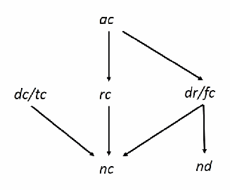
図2 脆弱性階層の有向グラフ。acからrcとdr/fcへ、dc/tc、rc、dr/fcからncまたはndへ矢印が伸びる。
Figure 2 Example Vulnerability Hierarchy
図2 脆弱性階層の例
未レビュー訳Figure 2 shows an example of vulnerability hierarchy, note that for these policies, \(\mathit{dc}\) and \(\mathit{tc}\) are equivalent, because setting one term to true in a set of terms in a conjunction is equivalent to deleting the term, e.g., setting \(a\) to true, \(abc = 1bc = bc\) . Similarly, setting a term to false for this class of rules is equivalent to deleting the entire rule, e.g., setting \(a\) to false , \(abc \to G\) becomes \(0bc \to G = 1 + G = 1\).
図2は脆弱性階層の例を示している。これらのポリシーに対して \(\mathit{dc}\) と \(\mathit{tc}\) は等価であることに注意されたい。連言における一連の項のうち1つの項を true（真）に設定することは、その項を削除することと同等だからである（例：\(a\) を true に設定すると、\(abc = 1bc = bc\)）。同様に、このクラスのルールに対して項を偽（false）に設定することは、ルール全体を削除することと同等である（例：\(a\) を false に設定すると、\(abc \to G\) は \(0bc \to G = 1 + G = 1\) となる）。
Implications for testing
テストへの影響
未レビュー訳The hierarchy shows that tests capable of identifying certain faults will also identify other types of faults that are subsumed by the former in the hierarchy. As a result, we can determine that some tests are redundant if they are designed to test two types that are related in the hierarchy. Similarly, if mutation testing is being used, the hierarchy tells us in advance which mutations will be equivalent, without generating mutants and applying a model checker or other tool for analyzing the logic.
この階層構造は、特定の障害を特定できるテストが、階層内で前者に包含される他のタイプの障害も特定することを示している。その結果、階層内で関連付けられている2つのタイプをテストするように設計されている場合、一部のテストが冗長であることを判断できる。同様に、ミューテーションテストが使用されている場合、ミュータントを生成してロジックを解析するためのモデルチェッカーやその他のツールを適用することなく、どのミューテーションが等価になるかを階層構造があらかじめ示してくれる。
未レビュー訳These concepts can be clarified with an example. Note that in the hierarchy at stuck at true condition, tc, subsumes a negated condition, nc. A hypothetical policy can be defined as below: if (a & b & c) then grant; if (d & e) then grant; else deny;
これらの概念は例を用いて明確にすることができる。階層において、真に縮退した条件（stuck at true condition）tc は、否定条件（negated condition）nc を包含することに注意されたい。仮想的なポリシーは以下のように定義できる：if (a & b & c) then grant; if (d & e) then grant; else deny;
未レビュー訳modeled by:
以下のようにモデル化されます：
未レビュー訳Suppose the policy is implemented incorrectly, leaving out condition \(a\):
ポリシーが誤って実装され、条件 \(a\) が省略されていると仮定する：
The detection conditions for this type of flaw in \(P_{\mathit{tc}}\) are:
\(P_{\mathit{tc}}\) におけるこのタイプの欠陥の検出条件は以下のとおりである：
That is, for inputs of either \(\overline{a}\,b\,c\,\overline{d}\) or \(\overline{a}\,b\,c\,\overline{e}\), policy \(P_{tc}\) produces an incorrect result, so a test with either of these inputs will detect the error. A different faulty policy may replace the condition in rule 1 with its negation:
すなわち、\(\overline{a}\,b\,c\,\overline{d}\) または \(\overline{a}\,b\,c\,\overline{e}\) のいずれかの入力に対して、ポリシー \(P_{tc}\) は誤った結果を生成するため、これらの入力のいずれかを用いたテストはエラーを検出する。別の欠陥のあるポリシーでは、ルール1の条件がその否定に置き換えられる場合がある：
For the implementation \(P_{nc}\), the detection conditions are:
実装 \(P_{nc}\) に対する検出条件は次のとおりである：
Thus a test with \(b\,c\,\overline{d} + b\,c\,\overline{e}\) (and either \(a\) or \(\overline{a}\)) would detect the error. Notice that \(P \oplus P_{tc}\), \(\Rightarrow P \oplus P_{nc}\), i.e., the detection conditions for \(P_{tc}\) subsume those for \(P_{nc}\), so a test that detects the faulty policy \(P_{tc}\), with the true condition, will also detect policies with the same condition negated in the same rule. For example, the test \(\overline{a}\,b\,c\,\overline{d}\) would detect both vulnerabilities by evaluating to \(G\) in both faulty implementations, instead of the correct result \(\overline{G}\).
したがって、\(b\,c\,\overline{d} + b\,c\,\overline{e}\)（および \(a\) または \(\overline{a}\) のいずれか）を用いたテストはエラーを検出する。\(P \oplus P_{tc}\), \(\Rightarrow P \oplus P_{nc}\) であること、すなわち \(P_{tc}\) に対する検出条件が \(P_{nc}\) に対する検出条件を包含することに注意されたい。そのため、真の条件を持つ欠陥のあるポリシー \(P_{tc}\) を検出するテストは、同じルール内で同じ条件が否定されたポリシーも検出する。例えば、テスト \(\overline{a}\,b\,c\,\overline{d}\) は、欠陥のある両方の実装において \(G\) と評価され、正しい結果 \(\overline{G}\) にならないことによって、両方の脆弱性を検出する。
4 POLICY VERIFICATION PRINCIPLES
4 ポリシー検証の原則
未レビュー訳Identifying discrepancies between AC policy, model, and implementation is crucial because correct enforcement of policies is based on the premise that the policy specifications and implementations are correct, therefore the policy specification and implementation must undergo rigorous verification and validation through systematic verification and testing to ensure that they truly encapsulate the desired AC properties from the policy authors. Note that unlike statements of general programming language, where the later value assignment can overwrite the previous ones of the same variable in the sequence of programming logic, privilege assignment in AC rules has no priority orders, i.e. privilege assignment should not be overwritten by the later ones. Therefore, the fundamental goal of AC policy and implementation verification is to detect the conflicting or missing rules (i.e. policy statements) by verifying the AC policy model and testing output of the policy. To achieve this, semantically and syntactically methods with Black-box and/or White-box testing techniques may be used.
ACポリシー、モデル、および実装間の不一致を特定することは極めて重要である。なぜなら、ポリシーの正しい強制はポリシー仕様および実装が正確であるという前提に基づいているからであり、したがって、ポリシー作成者が意図したACプロパティを真に包含していることを確実にするために、ポリシー仕様および実装は体系的な検証およびテストを通じた厳格な検証および妥当性確認を受けなければならない。一般的なプログラミング言語の文では、プログラミングロジックの順序において後の値の代入が同じ変数の前の代入を上書きできるのとは異なり、ACルールにおける特権割り当てには優先順位が存在しない、すなわち特権割り当ては後のものによって上書きされるべきではない点に注意されたい。したがって、ACポリシーおよび実装検証の根本的な目標は、ACポリシーモデルを検証し、ポリシーの出力をテストすることによって、競合または欠落しているルール（すなわちポリシー文）を検出することである。これを達成するために、ブラックボックステストおよび／またはホワイトボックステスト技術を用いた意味論的および構文論的手法が使用され得る。
Although the general safety computation is proven undecidable [HRU76] for discretionary AC policy models, which are impossible to be described by static policies, practical safety constraints such as confinements can be specified for discretionary AC policies. As a result, verifications can be performed upon the constraints.
静的ポリシーによって記述することが不可能な任意ACポリシーモデルに対しては、一般的な安全性計算は決定不能であることが証明されているものの[HRU76]、閉じ込め（confinement）などの実用的な安全性制約を任意ACポリシーに対して指定することができる。その結果、それらの制約に対して検証を実行することができる。
Safety requirements
安全性要件
未レビュー訳In a nutshell, AC policy verification must test if the safety requirements of an AC policy are incorporated in the expressed model, which will be the blueprint for implementing the AC system. The specification of safety requirements can be AC properties, business requirements, specifications of expected/unexpected system security features, or direct translations of policy features. Safety requirements can also include privilege inheritance, for example to verify a separation of duty (SoD) property, a safety requirement may specify that 1) subject \(x\) and \(y\) are mutually exclusive if neither one inherits the other’s privilege directly or indirectly, 2) If subject \(x\) and \(y\) are mutually exclusive, then no other subject inherits privilege from both of them. Similar to SoD, dynamic SoD (DSoD) has the safety requirement: 3) If SoD holds, then DSoD is maintained. Thus, 1) and 2) must be guaranteed. (Antonios)
端的に言えば、ACポリシー検証では、ACポリシーの安全性要件が、ACシステムを実装するための青写真となる表現されたモデルに組み込まれているかどうかをテストしなければならない。安全性要件の仕様は、ACプロパティ、ビジネス要件、期待される／予期しないシステムセキュリティ機能の仕様、またはポリシー機能の直接的な変換であり得る。安全性要件には特権の継承も含まれ得る。例えば職務分掌（SoD）プロパティを検証するために、安全性要件は次のように指定することができる。1) 主体 \(x\) および \(y\) は、どちらも他方の特権を直接的または間接的に継承していない場合、相互排他的である。2) 主体 \(x\) および \(y\) が相互排他的である場合、他のいかなる主体もその両方から特権を継承しない。SoDと同様に、動的SoD（DSoD）には次の安全性要件がある。3) SoDが成立する場合、DSoDは維持される。したがって、1)および2)が保証されなければならない。(Antonios)
Note that an AC policy is not necessarily explicitly expressed by a single model; it can also be implicitly embedded by mixing with direct access constraints or other AC models. Thus, an AC policy may be expressed by combining multiple AC models (e.g. for policy combinations) or additional constraints outside of the model into one combined model. Ensuring the conformance of a model to the policy in principle is to formally detect inconsistency and incompleteness faults as described in Section 3. In the former case, for example, an access request can be both accepted and denied, while in the latter case the request is neither accepted nor denied according to the model.
ACポリシーは必ずしも単一のモデルによって明示的に表現されるとは限らず、直接アクセス制約または他のACモデルと混在させることによって暗黙的に組み込まれる場合もあることに注意されたい。したがって、ACポリシーは、複数のACモデル（例えばポリシーの組み合わせのため）またはモデル外の追加の制約を1つの結合モデルへと組み合わせることによって表現され得る。モデルのポリシーに対する適合性を確保することは、原則として、セクション3で説明されているように不整合および不完全性の障害を形式的に検出することである。前者の場合、例えばアクセス要求が承認と拒否の両方をされる可能性があり、後者の場合、モデルによれば要求は承認も拒否もされない。
4.1 Model Verification
4.1 モデルの検証
The general approach for checking the correct specification of an AC model is to use black-box methods to verify the AC model against safety requirements. And since confidence in the model’s correctness depends on the quality of the safety requirements, a white-box property assessment method on entities in the model and safety requirements is required to assess the sufficiency of the safety, covering and confinement of the model. [HKXH11].
ACモデルの正しい仕様を確認するための一般的なアプローチは、ブラックボックス手法を使用して安全性要件に対してACモデルを検証することである。そして、モデルの正確性に対する信頼性は安全性要件の品質に依存するため、モデルの安全性、カバレッジ、および閉じ込めの十分性を評価するには、モデル内のエンティティおよび安全性要件に対するホワイトボックスプロパティ評価手法が必要とされる。[HKXH11]。
未レビュー訳In terms of AC attributes, the formal definition of AC model can be illustrated by a deterministic finite state transducer corresponding to a Finite State Machine (FSM) with a five-tuple \(M = (\Sigma, \mathit{ST}, s_0, \delta, F)\), where: \(\Sigma\) is the input alphabet that represents the attributes associated with subjects, actions, objects, and environment conditions. \(\mathit{ST}\) is a finite, non-empty set of recorded AC system states and permissions. \(s_0\) is the initial state, \(\delta\) is the state-transition function, where \(\delta : \mathit{ST} \times \Sigma \rightarrow \mathit{ST}\), \(F\) is the set of final states include \(\mathit{Grant}\), \(\mathit{Deny}\) as the output
AC属性の観点から、ACモデルの形式的定義は、5つ組 \(M = (\Sigma, \mathit{ST}, s_0, \delta, F)\) を持つ有限状態機械（FSM）に対応する決定性有限状態トランスデューサによって説明できる。ここで、\(\Sigma\) は主体、アクション、オブジェクト、および環境条件に関連付けられた属性を表す入力アルファベットである。\(\mathit{ST}\) は記録されたACシステム状態およびパーミッションの有限で空でない集合である。\(s_0\) は初期状態であり、\(\delta\) は状態遷移関数であって \(\delta : \mathit{ST} \times \Sigma \rightarrow \mathit{ST}\) であり、\(F\) は出力としての \(\mathit{Grant}\)、\(\mathit{Deny}\) を含む最終状態の集合である
For static AC models as described in Section 2.2 a), the FSM \(M_{\mathit{static}}\) does not require internal states \(\mathit{st}\) to reach the permission state, thus \(F = \mathit{ST} = \{\mathit{Grant}, \mathit{Deny}\}\), i.e., \(M_{\mathit{static}}\) is just a straightforward FSM model without state transitions. For dynamic AC models as described in Section 2.2 b), the input alphabets of FSM \(M_{\mathit{dynamic}}\) are \(\Sigma_{\mathit{dynamic}} = \{\mathit{gCond}_1, \ldots, \mathit{gCond}_n\}\), where \(\mathit{gCond}_i\) is the threshold indicator of the access limitation, such as the number of persons that have to access at the same time in a N-Person control policy, or the maximum number of accesses allowed for a Limited_Number_of_Access policy. For historical AC models as described in Section 2.2 c), the input alphabets of the FSM \(M_{\mathit{historical}}\) are \(\Sigma_{\mathit{historical}} = \Sigma - \{\mathit{gCond}_1, \ldots, \mathit{gCond}_n\}\), where \(\mathit{sCond}_i\), \(\mathit{aCond}_i\), and \(\mathit{oCond}_i\) contribute to a historical recording that is used as determining factors for the next permission decision. Note that it is possible for different types of AC models to combine into one model such that \(M_{\mathit{combine}} = \{M_{\mathit{static}} \cup M_{\mathit{dynamic}} \cup M_{\mathit{historical}}\}^{2}\) An AC safety requirement \(p\) is expressed by the proposition \(p : \mathit{ST} \times \Sigma^{2} \rightarrow \mathit{ST}\) of FSM, which can be collectively translated in terms of logical formulae such that \(p = (s_i * \mathit{sCond}_1 * \ldots * \mathit{sCond}_n * \mathit{aCond}_1 * \ldots * \mathit{aCond}_n * \mathit{oCond}_1 * \ldots * \mathit{oCond}_n * \mathit{gCond}_1 * \ldots * \mathit{gCond}_n) \rightarrow d\), where \(p \in P\) is a set of safety requirements, and \(*\) is a Boolean operator in terms of logical formulas of temporal logic such as computational tree logic (CTL) and linear-time temporal logic (LTL). The purpose of model checking is to verify the set \(\mathit{ST}\) in \(M\) in which \(p\) is true according to an exhaustive state space search. In addition, by verifying the set of states in which the negation of \(p\) is true, we can obtain the set of counterexamples to make the assertion that \(p\) is true. The satisfaction of an AC model \(M\) to the AC safety requirement \(P\) by model checking is composed of two requirements:
セクション2.2 a) で説明されている静的ACモデルの場合、FSM \(M_{\mathit{static}}\) はパーミッション状態に到達するために内部状態 \(\mathit{st}\) を必要としないため、\(F = \mathit{ST} = \{\mathit{Grant}, \mathit{Deny}\}\) となり、すなわち \(M_{\mathit{static}}\) は状態遷移のない単純なFSMモデルにすぎない。セクション2.2 b) で説明されている動的ACモデルの場合、FSM \(M_{\mathit{dynamic}}\) の入力アルファベットは \(\Sigma_{\mathit{dynamic}} = \{\mathit{gCond}_1, \ldots, \mathit{gCond}_n\}\) であり、ここで \(\mathit{gCond}_i\) は、N人制御ポリシーにおいて同時にアクセスしなければならない人数や、Limited_Number_of_Access ポリシーで許可される最大アクセス数など、アクセス制限のしきい値指標である。セクション2.2 c) で説明されている履歴ACモデルの場合、FSM \(M_{\mathit{historical}}\) の入力アルファベットは \(\Sigma_{\mathit{historical}} = \Sigma - \{\mathit{gCond}_1, \ldots, \mathit{gCond}_n\}\) であり、ここで \(\mathit{sCond}_i\)、\(\mathit{aCond}_i\)、および \(\mathit{oCond}_i\) は、次のパーミッション決定の決定要因として使用される履歴記録に寄与する。異なるタイプのACモデルを組み合わせて1つのモデル \(M_{\mathit{combine}} = \{M_{\mathit{static}} \cup M_{\mathit{dynamic}} \cup M_{\mathit{historical}}\}^{2}\) とすることが可能であることに留意されたい。AC安全性要件 \(p\) はFSMの命題 \(p : \mathit{ST} \times \Sigma^{2} \rightarrow \mathit{ST}\) によって表され、これは \(p = (s_i * \mathit{sCond}_1 * \ldots * \mathit{sCond}_n * \mathit{aCond}_1 * \ldots * \mathit{aCond}_n * \mathit{oCond}_1 * \ldots * \mathit{oCond}_n * \mathit{gCond}_1 * \ldots * \mathit{gCond}_n) \rightarrow d\) のような論理式の観点から包括的に変換できる。ここで \(p \in P\) は安全性要件の集合であり、\(*\) は計算木論理（CTL）や線形時相論理（LTL）などの時相論理の論理式の観点におけるブール演算子である。モデル検査の目的は、網羅的な状態空間探索に従って、集合 \(\mathit{ST}\) のうち \(M\) において \(p\) が真であるものを検証することである。さらに、\(p\) の否定が真である状態の集合を検証することにより、反例の集合を取得して \(p\) が真であるという言明を行うことができる。ACモデル \(M\) がAC安全性要件 \(P\) をモデル検査によって充足することは、2つの要件で構成される：
(1) Safety, where \(M\) satisfies \(P\). That is, there is no violation of rules to the logic specified in \(P\), and it is assured that \(M\) will eventually be in a desired state after it takes actions in compliance with a user access request.
(1) 安全性（Safety）：\(M\) が \(P\) を満たす。すなわち、\(P\) で指定された論理に対するルールの違反がなく、ユーザーのアクセス要求に従ってアクションを実行した後、\(M\) が最終的に望ましい状態になることが保証される。
(2) Liveness, where \(M\) will not have neither a deadlock in which the system waits forever for system events, nor a livelock in which the model repeatedly executes the same operations forever. Figure 3 shows the relations between \(M\) and \(P\) in a model checking framework.
(2) 活性（Liveness）：\(M\) には、システムがシステムイベントを永久に待機するデッドロックも、モデルが同じ操作を永久に繰り返し実行するライブロックも生じない。図3は、モデル検査フレームワークにおける \(M\) と \(P\) の関係を示している。
Access control model: M
アクセス制御モデル: M
未レビュー訳Policy:
ポリシー:
未レビュー訳AC
未レビュー訳= (Σ, ST, s0,δ, F)
= (Σ, ST, s0,δ, F)
未レビュー訳(rules,
(ルール、
未レビュー訳requirements:
要件：
未レビュー訳constraints)
制約)
未レビュー訳P ={p …p
P ={p …p
未レビュー訳}
未レビュー訳Verify the
以下を検証する：
未レビュー訳1 n
1 n
未レビュー訳safety and liveness of P
P の安全性および活性
未レビュー訳Figure 3 AC model and safety requirement
図 3 ACモデルと安全性要件
未レビュー訳Thus, the AC rules define the system behaviors that function as the transition relation \(\delta\) in \(M\). Then when the AC safety requirement is represented by temporal logic formula \(p\), we can represent the assertion that model \(M\) satisfies \(p\) by \(M \models Ab \rightarrow AXp\), where temporal logic quantifier \(A\) represents “always”, and logic quantifier \(X\) represents “is true next state”. The purpose of safety verification and liveness verification using model checking is to determine whether these assertions are true, and to identify a state in which the assertions are not true as a counterexample for the assertions. Since the behavior of the AC mechanism can be represented by FSM \(M\), and the safety requirements that \(M\) must satisfy can be represented by temporal logic formulas, we can define the correctness more precisely as that the model can be led from every possible state that is reachable from initial states to the defined final state while complying with the safety requirement.
したがって、ACルールは、遷移関係 \(\delta\) として \(M\) において機能するシステム動作を定義する。その上で、AC安全性要件が時相論理式 \(p\) で表される場合、モデル \(M\) が \(p\) を満たすという言明は \(M \models Ab \rightarrow AXp\) で表すことができる。ここで、時相論理量化子 \(A\) は「常に（always）」を表し、論理量化子 \(X\) は「次の状態で真である（is true next state）」を表す。モデル検査を用いた安全性検証および活性検証の目的は、これらの言明が真であるかどうかを判定し、言明が真ではない状態をその言明の反例として特定することである。AC機構の動作は FSM \(M\) によって表現でき、\(M\) が満たさなければならない安全性要件は時相論理式によって表現できるため、正しさは、安全性要件に準拠しつつ、初期状態から到達可能なすべての可能な状態から定義された最終状態へとモデルを導くことができることとして、より正確に定義できる。
Even though checked by the black box testing as described above, the model is not fault proof because the temporal logic in the model might not be thorough in covering all possible values of all rules or all conditions in rules. For example, two states determined by opposite assignments of the same Boolean variable are embedded in different sub-state modules, where a third state is triggered only when the constraints of the two states are satisfied. As demonstrated in Figure 4, the two rules will never agree due to the self-negation to the same constraint. In this case, the third state will never be satisfied, but proven correct without counterexamples through the black box checking.
上記のようにブラックボックステストによって検査されたとしても、モデル内の時相論理がすべてのルールまたはルール内のすべての条件の取り得るすべての値を徹底的にカバーしていない可能性があるため、そのモデルにフォールトがないとは言えない。例えば、同じブール変数の相反する割り当てによって決定される2つの状態が異なる部分状態モジュールに組み込まれており、第3の状態がこれら2つの状態の制約が満たされた場合にのみトリガーされるとする。図 4 に示すように、同じ制約に対する自己否定のため、これら2つのルールが一致することは決してない。この場合、第3の状態は決して満たされないが、ブラックボックス検査によって反例なしで正しいと証明されてしまう。
未レビュー訳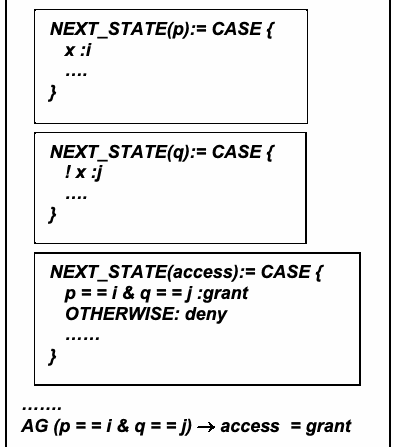
図4のモデル記述。pとqの次状態を定義し、p=iかつq=jの場合はアクセスを許可、それ以外は拒否するNuSMVコード断片。
NEXT_STATE(p):= CASE { x :i …. }
NEXT_STATE(p):= CASE { x :i …. }
未レビュー訳NEXT_STATE(q):= CASE { ! x :j …. }
NEXT_STATE(q):= CASE { ! x :j …. }
未レビュー訳NEXT_STATE(access):= CASE { p = = i & q = = j :grant OTHERWISE: deny
NEXT_STATE(access):= CASE { p = = i & q = = j :grant OTHERWISE: deny
未レビュー訳AG means that condition (p = = i & q = = j) → access
AGは、条件 (p = = i & q = = j) → access
未レビュー訳……
未レビュー訳= grant is always, or globally, true in all the states of
= grant が、常に、または大域的に（globally）、次のすべての状態において真であることを意味する：
未レビュー訳}
未レビュー訳all the possible path in the model by CTL check
CTL検査によるモデル内のすべての可能なパスの
未レビュー訳……. AG (p = = i & q = = j) → access = grant
……. AG (p = = i & q = = j) → access = grant
未レビュー訳Figure 4 Example of unreachable state in the model
Figure 4 モデルにおける到達不能状態の例
未レビュー訳To detect this kind of semantic fault, white box testing based on code analysis should be applied such that the resulting mutated versions are used to detects faults of the model. Testing for mutations [MX07] makes sure all paths of a part of a model code are covered by setting the related target variables to all possible values as input, and checking to see if there are different outcomes from the changes. If there is none, then either the code that had been mutated was never executed or the variable was unable to locate the faults. As shown in Figure 4, If we mutate the first case module to change x to !x, the resulting access state will be grant without being affected. (That works the same for the second case module). This fault demonstrates that there is a redundancy in the model, which does not violate the temporal logic of the model. Further investigation to check the model that relates to the variable should reveal that the (p = = i & q = = j) → access = = grant safety requirement will never happen. Note that this fault can be caught if one more safety requirement E! (p = = i & q = = j) (which means there exists some path that eventually in the future will satisfy !(p = = i & q = = j) in CTL model checking) is specified. Hence, it is not expected that all safety requirements are perfectly specified in the beginning. Thus, white box checking can be used as a second line of defense against faults that will not be spotted by black box checking.
この種の意味論的フォールトを検出するには、得られた変異版がモデルのフォールトを検出するために使用されるよう、コード解析に基づくホワイトボックステストを適用すべきである。変異テスト[MX07]は、関連する対象変数を入力としてすべての可能な値に設定し、変更によって異なる結果が生じるかどうかを確認することによって、モデルコードの一部のすべてのパスが網羅されていることを確認する。結果に差異がない場合、変異されたコードが一度も実行されなかったか、変数がフォールトを特定できなかったかのいずれかである。Figure 4に示すように、第1のcaseモジュールを変異させてxを!xに変更した場合でも、結果として得られるaccess状態は影響を受けずにgrantとなる（これは第2のcaseモジュールでも同様に機能する）。このフォールトは、モデルに冗長性が存在することを示しており、これはモデルの時相論理に違反しない。変数に関連するモデルを確認するためのさらなる調査により、(p = = i & q = = j) → access = = grant という安全性要件は決して発生しないことが明らかになるはずである。なお、このフォールトは、もう1つの安全性要件 E! (p = = i & q = = j)（CTLモデル検査において、将来的に最終的に !(p = = i & q = = j) を満たすパスが存在することを意味する）が指定されていれば捕捉可能であることに留意されたい。したがって、最初にすべての安全性要件が完璧に指定されていることは期待されない。このように、ホワイトボックス検査は、ブラックボックス検査では発見されないフォールトに対する第2の防衛線として使用できる。
未レビュー訳Most faults in an AC model result from the nondeterministic automata of FSM states, for example, in Figure 5, white box checking will detect that the value \(x\) will result to a \(\mathit{grant}\) of \(\mathit{access}\) when it is either \(s\) or \(t\). This does not violate the safety requirement; however, the safety property will not meet be maintained if a more stringent safety requirement requires that only one value of x attribute is desired from the policy.
ACモデルにおけるほとんどのフォールトはFSM状態の非決定性オートマトンに起因する。たとえば図5において、ホワイトボックス検証は、値 \(x\) が \(s\) または \(t\) のいずれかであるとき、\(\mathit{access}\) の \(\mathit{grant}\) という結果になることを検出する。これは安全要件に違反しないが、より厳格な安全要件によってポリシーからx属性の値が1つだけ求められる場合、安全性プロパティは維持されなくなる。
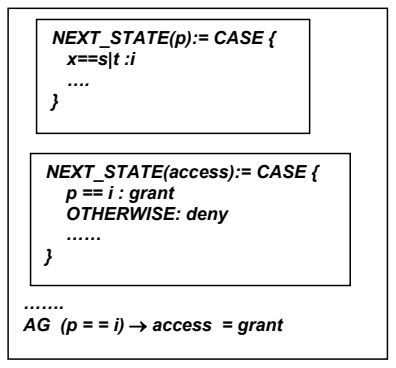
図5のモデル記述。xがsまたはtの場合の次状態p=i、p=iならアクセスを許可し、それ以外は拒否する条件と安全性プロパティを示すNuSMVコード。
NEXT_STATE(p):= CASE { x==s|t :i …. }
NEXT_STATE(p):= CASE { x==s|t :i …. }
未レビュー訳NEXT_STATE(access):= CASE { p == i : grant OTHERWISE: deny …… }
NEXT_STATE(access):= CASE { p == i : grant OTHERWISE: deny …… }
未レビュー訳……. AG (p = = i) → access = grant
……. AG (p = = i) → access = grant
未レビュー訳Figure 5 Example of ambiguous value and the safety requirement in an AC model.
図5 ACモデルにおける曖昧な値と安全要件の例。
Another example shows a transition to an unspecified state for a certain range of data values such as in Figure 6. There is no way for the black box checker to determine the value of \(\mathit{access}\) when \(x\) value is other than \(s\) unless we check with the safety requirement \(\mathrm{AG}\ \mathord{!}\,(p == i) \rightarrow \mathit{access} = \mathit{deny}\). This uncovered value can be detected by the white box checking when different values were assigned to \(x\), which does not match any expected case condition, and results the same \(\mathit{grant}\) of \(\mathit{access}\). Thus, the safety requirement verification informs the users which rules are not covered by the existing safety requirement so that the users can add new properties to cover the uncovered.
もう1つの例は、図6のように、特定範囲のデータ値に対して不特定の状態への遷移を示している。ブラックボックス検証ツールが \(\mathit{access}\) の値を特定する方法は、\(x\) の値が \(s\) 以外である場合、安全要件 \(\mathrm{AG}\ \mathord{!}\,(p == i) \rightarrow \mathit{access} = \mathit{deny}\) を用いてチェックしない限り存在しない。このカバーされていない値は、\(x\) に異なる値が割り当てられた際にホワイトボックス検証によって検出できる。これは期待されるどのcase条件とも一致せず、同じ \(\mathit{grant}\)（\(\mathit{access}\) の許可）という結果になる。したがって、安全要件の検証は、既存の安全要件でカバーされていないルールをユーザーに通知し、ユーザーが未カバーのものをカバーするための新しいプロパティを追加できるようにする。
NEXT_STATE(p):= CASE { x==s :i …. }
NEXT_STATE(p):= CASE { x==s :i …. }
未レビュー訳NEXT_STATE(access):= CASE { p == i : grant …… }
NEXT_STATE(access):= CASE { p == i : grant …… }
未レビュー訳……. AG (p == i) → access = grant
……. AG (p == i) → access = grant
未レビュー訳Figure 6 Example of uncovered value and the safety requirement in an AC model
図6 ACモデルにおける未カバーの値と安全性要件の例
未レビュー訳4.2 Coverage and Confinements Verifications
4.2 カバレッジおよび閉じ込め（Confinements）の検証
The rules in the policy, model, and safety requirements may each describe their own space of permission conditions, and may not be congruent in one space as the initial relation illustrated examples in Figure 7. The safety and liveness check can assure only the logic integrity of some rules against some safety requirements. The complete satisfaction of a model to its policy requires repair of coverage and confinement faults if any violations are detected by additional Coverage and Confinement Check (CCC), the second line of defense against such semantic faults.
ポリシー、モデル、および安全性要件におけるルールは、それぞれ独自の許可条件空間を記述している可能性があり、図7の例で示されている初期関係のように、1つの空間内で一致しない場合がある。安全性および活性のチェックでは、一部の安全性要件に対する一部のルールの論理的完全性しか保証できない。ポリシーに対するモデルの完全な充足には、このようなセマンティックフォールトに対する第2の防衛線である追加のカバレッジおよび閉じ込めチェック（CCC）によって違反が検出された場合、カバレッジフォールトおよび閉じ込めフォールトの修復が必要となる。
Initial relation
初期関係
未レビュー訳Confinement
閉じ込め（Confinement）
未レビュー訳Coverage fault
カバレッジ障害
未レビュー訳Confined
閉じ込め済み（Confined）
未レビュー訳Confined
限定的（Confined）
未レビュー訳Model
モデル
未レビュー訳fault fixing properties /
フォールト修正プロパティ /
未レビュー訳fixing
修正
未レビュー訳properties
プロパティ
未レビュー訳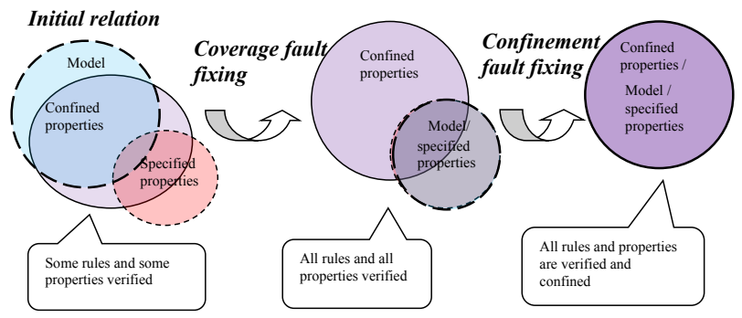
モデルと「限定されたプロパティ（Confined properties）」の関係を示す図の一部。重なり合う円の領域が描かれている。
Model /
モデル /
未レビュー訳Confined
限定的（Confined）
未レビュー訳specified
指定された
未レビュー訳properties
プロパティ
未レビュー訳Model/
モデル/
未レビュー訳properties
プロパティ
未レビュー訳specified properties
指定されたプロパティ
未レビュー訳Specified properties
指定されたプロパティ
未レビュー訳All rules and properties
すべてのルールとプロパティ
未レビュー訳All rules and all
すべてのルールとすべての
未レビュー訳Some rules and some
一部のルールと一部の
未レビュー訳are verified and
検証され、
未レビュー訳properties verified
検証されたプロパティ
未レビュー訳properties verified
検証されたプロパティ
未レビュー訳confined
限定された
未レビュー訳Figure 7 Relations of Policy, Model, and Safety requirements
図 7 ポリシー、モデル、および安全性要件の関係
未レビュー訳CCC requires mutant versions of the model, and extra modified properties for additional model checking. As illustrated in Figure 7, the goal of CCC is to ensure that the rules in the safety requirement are completely covered by the model, and to confirm that no exceptional access permissions are granted unless intentionally allowed. The first step of CCC is to discover the rules, which are seeped through the specification of the safety requirement by applying white box checking on mutated versions of the model. The second step is to detect unexpected access permission that might not be the intention of the policy author, by applying model checking on modified rules extracted from the original ones.
CCCには、モデルの変異バージョンと、追加のモデル検査のための別途変更されたプロパティが必要である。図 7 に示すように、CCCの目的は、安全性要件のルールがモデルによって完全にカバーされていることを保証し、意図的に許可されていない限り例外的なアクセス権限が付与されないことを確認することである。CCCの最初のステップは、モデルの変異バージョンに対してホワイトボックス検査を適用することにより、安全性要件の仕様をすり抜けているルールを発見することである。2番目のステップは、元のルールから抽出された変更されたルールにモデル検査を適用することによって、ポリシー作成者の意図ではない可能性がある予期しないアクセス権限を検出することである。
未レビュー訳Rule coverage checking
ルール網羅性検査
未レビュー訳The key notion of rule coverage checking is to synthesize a version of the given model in such a way that the permission of its rules is mutated such that rule \(r\) is changed to \({\sim}r\). If safety requirements are satisfied by both mutated and original models through model checking, then some of the rules and their mutants would never be applied to the safety requirements; in other words, the safety requirements do not cover all the rules in the model.
ルールカバレッジ検査の重要な概念は、ルールのパーミッションが変異され、ルール \(r\) が \({\sim}r\) に変更されるように、指定されたモデルのバージョンを合成することである。モデル検査を通じて変異モデルと元のモデルの双方が安全性要件を満たす場合、一部のルールおよびその変異体は安全性要件に決して適用されないことになる。言い換えれば、安全性要件はモデル内のすべてのルールを網羅していないことになる。
As an example in Figure 8, the safety and liveness checking verify that the model conforms the safety requirement \(\mathrm{AG}\ (q == i) \rightarrow \mathit{access} = \mathit{grant}\) without counterexamples; however, by applying the CCC by mutating the rule \(u == j : \mathit{grant}\) to \(u == j : \mathit{deny}\) for the coverage checking, the result shows that the safety requirement satisfies the mutated rules as well (without counterexamples), indicating that the variable \(u\) was never applied to the safety requirement \(\mathrm{AG}\ (q == i) \rightarrow \mathit{access} = \mathit{grant}\).
図8の例として、安全性および活性の検証により、モデルが反例なしに安全性要件 \(\mathrm{AG}\ (q == i) \rightarrow \mathit{access} = \mathit{grant}\) に適合することが検証される。しかし、網羅性検証のためにルール \(u == j : \mathit{grant}\) を \(u == j : \mathit{deny}\) に変異させてCCCを適用すると、その結果は安全性要件が変異させたルールも（反例なしに）満たすことを示しており、これは変数 \(u\) が安全性要件 \(\mathrm{AG}\ (q == i) \rightarrow \mathit{access} = \mathit{grant}\) に決して適用されていなかったことを示している。
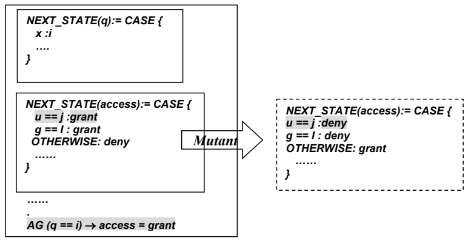
図8のルール網羅性例に含まれるNuSMV断片。qの状態遷移を定めるNEXT_STATE(q)式。
NEXT_STATE(q):= CASE { x :i …. }
NEXT_STATE(q):= CASE { x :i …. }
未レビュー訳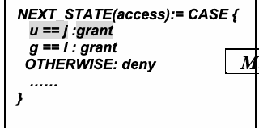
図8のルール網羅性例に含まれるNuSMV断片。u==jならアクセスを許可し、それ以外は拒否するアクセス状態遷移式。
NEXT_STATE(access):= CASE {
NEXT_STATE(access):= CASE {
未レビュー訳NEXT_STATE(access):= CASE {
NEXT_STATE(access):= CASE {
未レビュー訳u == j :grant
u == j :grant
未レビュー訳u == j :deny
u == j :deny
未レビュー訳g == I : grant
g == I : grant
未レビュー訳| M | utant |
Mutant g == I : deny
ミュータント g == I : deny
未レビュー訳OTHERWISE: deny
OTHERWISE: deny
未レビュー訳OTHERWISE: grant
OTHERWISE: grant
未レビュー訳……
未レビュー訳……
未レビュー訳}
未レビュー訳}
未レビュー訳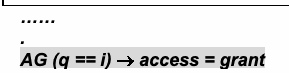
図8の安全性要件式 AG(q==i) → access=grant の一部。
…… . AG (q == i) → access = grant
…… . AG (q == i) → access = grant
未レビュー訳Figure 8 Example of uncovered rules in a AC model
図8 ACモデルにおけるカバーされていないルールの例
未レビュー訳This result shows that the rule \(u == j : \mathit{grant}\) is not verified with the property \(\mathit{AG}\ (q == i) \rightarrow \mathit{access} = \mathit{grant}\). One way of addressing this insufficiency is by adding a new property that describes proper control of \(u\). Note that it is necessary to check every rule in the model against all safety requirement to achieve thorough verification.
この結果は、ルール \(u == j : \mathit{grant}\) がプロパティ \(\mathit{AG}\ (q == i) \rightarrow \mathit{access} = \mathit{grant}\) で検証されていないことを示している。この不備に対処する1つの方法は、\(u\) の適切な制御を記述する新しいプロパティを追加することである。徹底的な検証を達成するには、モデル内のすべてのルールをすべての安全性要件に対してチェックする必要があることに注意されたい。
Property confinement checking
プロパティの閉じ込め（confinement）チェック
未レビュー訳Property confinement checking ensures that there is no exceptional permission allowed in addition to the specified safety requirement; this checking requires a modified safety requirement to be added for the next run of model checking. Confinement check should discover the discrepancy of the specified safety requirement and the safety requirement the AC policy author intend. The rationale is that if the model does not satisfy the modified safety requirement, then there are exceptional access permissions that leak through the safety requirement.
プロパティの閉じ込めチェックは、指定された安全性要件に加えて許可される例外的な権限が存在しないことを保証する。このチェックでは、モデル検査の次の実行に向けて修正された安全性要件を追加する必要がある。閉じ込めチェックは、指定された安全性要件と、ACポリシー作成者が意図した安全性要件との不一致を発見するはずである。その根拠は、モデルが修正された安全性要件を満たさない場合、その安全性要件から漏れ出る例外的なアクセス許可が存在することになるからである。
未レビュー訳Figure 9 shows a transition to an unspecified state for a certain range of data values that allow exceptional permission not covered by a specified safety requirement because the value of \(\mathit{access}\) when \(u\) value is different than \(i\) (such as \(u = j\)) also grants access permission by the rule \(\mathit{otherwise} : \mathit{grant}\). This fault can be caught by a counterexample \(\mathit{AG}\ (u == j) \rightarrow \mathit{access} = \mathit{grant}\) when checking the model against the additional confinement property \(\neg \mathit{AG}\ (u == i) \rightarrow \mathit{access} = \mathit{deny}\) derived from original property \(\mathit{AG}\ (u == i) \rightarrow \mathit{access} = \mathit{grant}\). The additional model checking for confinement verification informs the AC policy authors which safety requirement is not confined so that the AC policy author can add new rules to enforce the safety of the model. As in this case, changing the rule \(\mathit{otherwise} : \mathit{grant}\) to \(\mathit{otherwise} : \mathit{deny}\) and adding all granted rules in the state will correct the problem.
図9は、指定された安全性要件でカバーされていない例外的なパーミッションを許可する特定の範囲のデータ値に対して、不特定の状態への遷移を示している。これは、\(\mathit{access}\) の値が、\(u\) の値が \(i\) と異なる場合（\(u = j\) など）にも、ルール \(\mathit{otherwise} : \mathit{grant}\) によってアクセス権限を付与するためである。このフォールトは、反例 \(\mathit{AG}\ (u == j) \rightarrow \mathit{access} = \mathit{grant}\) によって検出できる。これは、追加の閉じ込めプロパティ \(\neg \mathit{AG}\ (u == i) \rightarrow \mathit{access} = \mathit{deny}\) に対してモデルをチェックする際に得られ、このプロパティは元のプロパティ \(\mathit{AG}\ (u == i) \rightarrow \mathit{access} = \mathit{grant}\) から導出される。閉じ込め検証のための追加のモデル検査は、どの安全性要件が閉じ込められていないかをACポリシー作成者に通知し、ACポリシー作成者がモデルの安全性を強制するための新しいルールを追加できるようにする。このケースのように、ルール \(\mathit{otherwise} : \mathit{grant}\) を \(\mathit{otherwise} : \mathit{deny}\) に変更し、その状態で許可されるすべてのルールを追加することで問題が修正される。
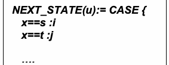
図9のプロパティ閉じ込め例に含まれるNuSMV断片。入力xに応じて変数uをiまたはjに設定する。
NEXT_STATE(u):= CASE { x==s :i x==t :j
NEXT_STATE(u):= CASE { x==s :i x==t :j
未レビュー訳….
未レビュー訳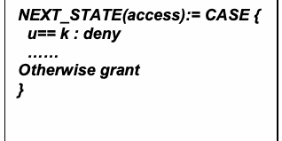
図9のプロパティ閉じ込め例に含まれるアクセス状態式。u==kなら拒否し、それ以外は許可する。
NEXT_STATE(access):= CASE { u== k : deny …… Otherwise grant }
NEXT_STATE(access):= CASE { u== k : deny …… Otherwise grant }
未レビュー訳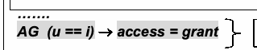
図9の安全性プロパティ。AG(u==i) → access=grant に加え、その否定条件に対してアクセス拒否を指定する。
……. AG (u == i) → access = grant Addition ¬AG (u == i) → access = deny
……. AG (u == i) → access = grant 追加 ¬AG (u == i) → access = deny
未レビュー訳Figure 9 Unconfined rule in a property
図9 プロパティにおける非限定（Unconfined）ルール
未レビュー訳Note that it is possible the AC policy author intentionally allowed the exception for a safety requirement, and it is necessary to check every safety requirement against the set of rules in the model to achieve thorough verification.
ACポリシー作成者が安全性要件に対する例外を意図的に許可した可能性もあることに注意が必要であり、徹底した検証を達成するためには、モデル内の一連のルールに対してすべての安全性要件をチェックすることが不可欠である。
未レビュー訳4.3 Implementation Test
4.3 実装テスト
未レビュー訳Black box model checking and white box mutation test provide methods for verifying the correct model representation of the policy. Once a model is verified, the AC mechanism can be implemented based on the design of the model and additional constraints if needed. Usually AC mechanisms are code developed in a language the AC system supports, for example dedicated AC language such as XACML [XACML] is commonly used for AC code implementation. AC implementation can be error prone. As the AC model is directly implemented by an algorithm, the errors are often caused by syntactic faults, such as mistakenly changing the + sign to – sign, or typing a letter O instead of 0.
ブラックボックスモデル検査およびホワイトボックスミューテーションテストは、ポリシーの正しいモデル表現を検証するための手法を提供する。モデルが検証されると、モデルの設計および必要に応じて追加の制約に基づいてACメカニズムを実装できる。通常、ACメカニズムはACシステムがサポートする言語で開発されたコードであり、例えばXACML [XACML]などの専用のAC言語がACコードの実装に一般的に使用される。ACの実装はエラーが発生しやすい可能性がある。ACモデルはアルゴリズムによって直接実装されるため、エラーは多くの場合、+記号を誤って–記号に変更したり、0の代わりに文字Oを入力したりするような構文上のフォールトに起因する。
The correct implementation of the policy needs to be tested. To achieve that, a test oracle (that contains cases of all possible outcomes of the AC safety requirement is required, because implementation faults are unpredictable without a logical trace for detecting. Thus, all the combinations of the variables in the safety requirements need to be covered in the oracle. For example, a safety requirement: “\(x\) read \(y\) grant” where \(x\) has 3 different values and \(y\) has 5 different values then there will be \(3 \cdot 2 \cdot 5 \cdot 2 = 60\) test cases (assume that the AC actions has two values: read and write, and permission has only two values: grant and deny). The implemented AC system will then run these test cases to verify whether the actual test outputs are the same as the expected outputs.
ポリシーの正しい実装はテストされる必要がある。それを達成するためには、実装フォールトは検出のための論理的な追跡なしには予測不可能であるため、テストオラクル（AC安全性要件の考えられるすべての結果のケースを含む）が必要とされる。したがって、オラクル内では安全性要件における変数のすべての組み合わせを網羅する必要がある。例えば、「\(x\) read \(y\) grant」という安全性要件において、\(x\) が3つの異なる値を持ち、\(y\) が5つの異なる値を持つ場合、\(3 \cdot 2 \cdot 5 \cdot 2 = 60\) 個のテストケースが存在することになる（ACアクションには read と write の2つの値があり、パーミッションには grant と deny の2つの値しかないと仮定する）。実装されたACシステムは、実際のテスト出力が期待される出力と同じであるかどうかを検証するために、これらのテストケースを実行する。
It is not uncommon that a verification test includes hundreds of safety requirements; each contains tens of variables, in such case, the number of test cases in a test oracle for the implementation test is too great to be efficiently performed, therefor, additional techniques [ACTS] [HKX08] for reducing the test case size without sacrificing the capability may be required for the test. Section 5.6 describes combinatorial methods for making such large problems tractable.
検証テストに数百もの安全性要件が含まれることは珍しくなく、それぞれに数十の変数が含まれている。そのような場合、実装テスト用のテストオラクルにおけるテストケースの数が多すぎて効率的に実行できなくなるため、能力を損なうことなくテストケースの規模を削減するための追加の技術 [ACTS] [HKX08] がテストに必要とされることがある。セクション 5.6 では、このような大規模な問題を扱いやすくするための組合せ手法について説明する。
5 VERIFICATION AND TESTING TECHNOLOGY
5 検証およびテスト技術
未レビュー訳To verify the correctness of an AC model, the model and verified safety requirements are specified in a formal logic formula (including first and higher logic proof). For example, safety requirements against the model are verified using a model checker. In this process, confidence in the model’s correctness depends on the quality of the specified safety requirements. Hence, white box analysis can be applied to check if the entities (i.e., rules) of the model are sufficiently covered and confined by the safety requirements, as well as the quality of given safety requirements. Finally, test cases are generated from the domain variables in the AC model and specified safety requirements. These test inputs are fed into real AC implementation of the given model to verify whether the actual test outputs are the same as the expected outputs. (IJEKE)
ACモデルの正しさを検証するために、モデルと検証対象の安全性要件は形式論理式（一階述語論理や高階論理の証明を含む）で規定される。例えば、モデルに対する安全性要件はモデルチェッカーを使用して検証される。このプロセスにおいて、モデルの正しさに対する信頼性は、規定された安全性要件の質に依存する。したがって、ホワイトボックス分析を適用して、モデルのエンティティ（すなわちルール）が安全性要件によって十分にカバーされ制限されているか、また提示された安全性要件の質をチェックすることができる。最後に、ACモデルのドメイン変数および規定された安全性要件からテストケースが生成される。これらのテスト入力は、実際のテスト出力が期待される出力と同じであるかどうかを検証するために、所定のモデルの実際のAC実装に投入される。(IJEKE)
未レビュー訳5.1 Model Checker
5.1 モデルチェッカー
A model checker provides the modular hierarchical descriptions, and for the definition of reusable components of the specification of Finite State Machines (FSMs) which range from completely synchronous to completely asynchronous ones, and from detailed to abstract ones. The only data types in the specification are finite Booleans, scalars, fixed arrays, and static data types that can be constructed. The specified model in an FSM describes the transition states of the FSM. In general, any expression in the propositional calculus can be used to define the transition relation of states; however, the flexibility of the expression is accompanied by the risk of a logical contradiction, which makes specifications vacuously true or makes the system unimplementable. Fundamentally, there are three basic types (as described in Section 2.2) of FSM expressions for specifying AC models in terms of the sequence of the state transitions:
モデルチェッカーは、完全に同期的なものから完全に非同期的なものまで、また詳細なものから抽象的なものまでに及ぶ有限状態機械（FSM）の仕様のモジュール式階層記述、および再利用可能なコンポーネントの定義を提供する。仕様における唯一のデータ型は、有限ブール値、スカラー、固定長配列、および構築可能な静的データ型である。FSMにおいて指定されたモデルは、そのFSMの遷移状態を記述する。一般に、命題計算の任意の式を使用して状態の遷移関係を定義できるが、表現の柔軟性には論理的矛盾のリスクが伴い、それにより仕様が無意味に真（vacuously true）になったり、システムが実装不能になったりする。基本的に、状態遷移のシーケンスの観点からACモデルを指定するためのFSM表現には、（セクション 2.2 で説明されているように）3つの基本タイプがある：
•Synchronous. An AC model is expressed by defining the value of AC constraints in the next state (i.e., after each transition), given the value of constraints in the current states (i.e., before transition).
•同期型（Synchronous）。ACモデルは、現在の状態（すなわち遷移前）の制約の値を前提として、次の状態（すなわち各遷移後）のAC制約の値を定義することによって表現される。
•Asynchronous. An AC model is expressed by a collection of concurrency states. This type of model is for AC systems whose authorization decisions are triggered from more than one clock region such as mutual exclusion, communication protocols, and asynchronous circuits.
•非同期型（Asynchronous）。ACモデルは、並行状態の集合によって表現される。このタイプのモデルは、相互排他、通信プロトコル、非同期回路など、認可決定が複数のクロック領域からトリガーされるACシステムを対象としている。
•Direct specification. An AC model is specified directly in terms of propositional formulas. The set of possible initial states is specified as a formula in the current state variables. A state is initial if it satisfies the formula. The transition relation is directly specified as a propositional formula in terms of the current and next values of the state variable. Any current state/next state pair is in the transition relation if and only if it satisfies the formula.
•直接指定型（Direct specification）。ACモデルは、命題論理式で直接指定される。取り得る初期状態のセットは、現在の状態変数の論理式として指定される。ある状態がその論理式を満たす場合、その状態は初期状態となる。遷移関係は、状態変数の現在値と次の値に関する命題論理式として直接指定される。任意の現在の状態と次の状態のペアは、その論理式を満たす場合に限り（if and only if）、遷移関係に含まれる。
FSM Model Checking Basic
FSMモデル検査の基本
未レビュー訳Based on the type of transition state (as describe above) of the FSM specification, a model checker verifies if a model satisfies a set of desired safety requirements specified by the user. The specifications can be checked by temporal logics such as Computation Tree Logic (CTL), and Linear Temporal Logic (LTL) extended with Past Operators. CTL and TTL formulas consist of atomic propositional logic formulas, plus temporal connectives. The propositional logic formulas are expressions about the state of the system. The temporal connectives are expressions about paths into the future that the state of the system can follow [NuSMV]. And the model checker constructs and prints a counterexample, i.e. a trace of the FSM that falsifies the property.
FSM仕様の遷移状態（上記で説明）のタイプに基づき、モデルチェッカーはモデルがユーザーによって指定された所望の安全性要件のセットを満たすかどうかを検証する。仕様は、計算樹論理（CTL）や、過去演算子で拡張された線形時相論理（LTL）などの時相論理によって検証できる。CTLおよびLTL論理式は、原子命題論理式と時相結合子で構成される。命題論理式はシステムの状態に関する論理式である。時相結合子は、システムの状態がたどり得る将来へのパスに関する論理式である [NuSMV]。そしてモデルチェッカーは反例、すなわちプロパティを反証するFSMのトレースを構築して出力する。
未レビュー訳CTL is a branching-time logic that takes into account the non-deterministic, branching evolution of a FSM. More precisely, the evolution of a FSM such that from a given state the evolution of FSM can be described as an infinite tree, where the nodes are the states and the branching represents the non-determinism transitions of the states. The paths in the tree from one state to the others are the possible evolutions of the FSM from that state. In CTL, one can express properties that should hold for all the paths that start in a state, as well as for properties that should hold just for some of the paths.
CTLは、FSMの非決定論的で分岐的な発展を考慮に入れた分岐時間論理である。より正確には、所与の状態からのFSMの発展を無限木として記述でき、そこではノードが状態であり、分岐が状態の非決定論的遷移を表すようなFSMの発展である。ある状態から他の状態への木におけるパスは、その状態からのFSMの起こり得る発展である。CTLでは、ある状態で始まるすべてのパスに対して保持されるべきプロパティだけでなく、一部のパスに対してのみ保持されるべきプロパティも表現できる。
LTL shares a significant intersection that includes most of the common properties used in CTL; it characterizes each linear path induced by the FSM (linear-time approach). The main difference between LTL and CTL formulas is the absence of existential and universal operators, thus LTL temporal operators do not have path quantifiers. In fact, LTL formulas are evaluated on linear paths, and a formula is considered true in a given state if it is true for all the paths starting in that state, which reflect the linear-time paradigm. LTL properties can also include past temporal operators.
LTLは、CTLで使用される一般的なプロパティの大部分を含む重要な共通部分を共有している。それはFSMによって導出される個々の線形パスを特徴付ける（線形時間アプローチ）。LTL論理式とCTL論理式の主な違いは、存在演算子と全称演算子が存在しないことであり、したがってLTL時相演算子はパス量化子を持たない。実際、LTL論理式は線形パス上で評価され、線形時間パラダイムを反映して、ある状態で始まるすべてのパスに対して真である場合、論理式はその所与の状態で真と見なされる。LTLプロパティには、過去時相演算子を含めることもできる。
CTL and LTL operators can be nested in an arbitrary way and can be combined using logic operators. Typical examples of CTL formulas are \(\mathit{AG}\ !p\) (“condition \(p\) is absent in all the evolutions”), \(\mathit{AGEF}\ p\) (“it is always possible to reach a state where \(p\) holds”), and \(\mathit{AG}\ (p \rightarrow \mathit{AF}\ q)\) (“each occurrence of condition \(p\) is followed by an occurrence of condition \(q\)”). And typical example of LTL is \(G\ p\), stating that condition \(p\) holds in all future time instants, and \(F\ p\), stating that condition \(p\) holds in one of the future time instants.
CTLおよびLTL演算子は任意の方法でネストすることができ、論理演算子を使用して組み合わせることができる。CTL論理式の代表的な例としては、\(\mathit{AG}\ !p\)（「すべての発展において条件 \(p\) が存在しない」）、\(\mathit{AGEF}\ p\)（「\(p\) が保持される状態に到達することが常に可能である」）、および \(\mathit{AG}\ (p \rightarrow \mathit{AF}\ q)\)（「条件 \(p\) が発生するたびに、それに続いて条件 \(q\) が発生する」）がある。また、LTLの代表的な例としては \(G\ p\) があり、これは条件 \(p\) がすべての将来の時点で保持されることを述べる。そして \(F\ p\) は、条件 \(p\) が将来の時点のいずれかで保持されることを述べる。
A model checker can also find a counterexample of increasing length, and immediately stops when it succeeds, declaring that the formula is false. The maximum number of iterations can be assigned such that if the maximum number of iterations is reached and no counterexample is found, then the checking is terminated without conclusion that the formula is true, except that any counterexample should be longer than the maximum length.
モデルチェッカーは、長さが増加していく反例を見つけることもでき、成功すると直ちに停止して、論理式が偽であることを宣言する。最大反復回数を設定することができ、最大反復回数に達しても反例が見つからない場合、いかなる反例も最大長より長くなければならないという点を除き、論理式が真であると結論付けることなく検査は終了する。
In general, Bounded Model Checking (BMC) can find two kinds of counterexamples, depending on the property being analyzed. For safety requirements with the bounded number of transitions, a counterexample is a finite sequence of transitions through different states. For liveness properties, counterexamples are infinite but periodic sequences, and can be represented in a bounded setting as a finite prefix followed by a loop, i.e. a finite sequence of states ending with a loop back to some previous state. So, a counterexample demonstrates the falsity that a safety requirement cannot be a finite sequence of transitions.
一般に、有界モデル検査（BMC）は、分析対象のプロパティに応じて2種類の反例を見つけることができる。有界な遷移数を持つ安全性要件の場合、反例は異なる状態を経由する遷移の有限のシーケンスである。活性プロパティの場合、反例は無限だが周期的なシーケンスであり、有界な設定では有限のプレフィックスにループが続く形式、すなわち以前のある状態へのループバックで終わる有限の状態シーケンスとして表現できる。したがって、反例は、安全性要件が遷移の有限シーケンスであり得ないという誤りを実証する。
AC Model Specification in a Model Checker
モデルチェッカーにおけるACモデル仕様
未レビュー訳From the viewpoint of model checking, the satisfaction of an AC model to the safety requirements is composed of two requirements. These requirements can be specified as follows in model checking terms.
モデル検査の観点から見ると、ACモデルが安全性要件を満たすことは2つの要件で構成される。これらの要件は、モデル検査の用語で次のように指定できる。
(1) Safety means that the AC model satisfies the specified safety requirements. Implicit in this description of safety is that there is no violation of the constraints specified in the safety requirements and it is assured that the model will eventually be in the desired situation after it took actions in compliance with the model. (2) Liveness means that the AC model will have neither a deadlock in which the model waits forever for AC events, nor a livelock in which the model repeatedly executes the same operations forever.
(1) 安全性（Safety）とは、ACモデルが指定された安全性要件を満たすことを意味する。この安全性の説明において暗黙的なのは、安全性要件で指定された制約への違反が存在せず、モデルがそのモデルに従ってアクションを実行した後に、最終的に望ましい状況になることが保証されているということである。(2) 活性（Liveness）とは、ACモデルが、モデルがACイベントを永久に待機するデッドロックも、モデルが同じ操作を永久に繰り返し実行するライブロックも発生させないことを意味する。
Figure 10 describes the relations between the AC model, safety requirements, and the model checking framework. The structure model defines in the Kripke structure \(M = (\Sigma, \mathit{ST}, s_0, \delta, F)\) as described in Section 4.1, and safety requirements are described by a set of access rules and system entities. The policy will then be translated to a set of atomic propositions whose truth values are true in the situations. These atomic propositions can represent the assignment of the parameters in each situation.
図10は、ACモデル、安全性要件、およびモデル検査フレームワーク間の関係を示している。構造モデルは、セクション4.1で説明したクリプキ構造 \(M = (\Sigma, \mathit{ST}, s_0, \delta, F)\) において定義され、安全性要件はアクセスルールとシステムエンティティのセットによって記述される。その後、ポリシーは、状況において真理値が真である原子命題のセットへと変換される。これらの原子命題は、各状況におけるパラメータの割り当てを表すことができる。
Safety requirements: Rules,
安全性要件：ルール、
未レビュー訳Access control model:
アクセス制御モデル：
未レビュー訳constraints
制約
未レビュー訳Kripke structure model: M= (Σ,
クリプキ構造モデル: M= (Σ,
未レビュー訳Verify if
以下を検証:
未レビュー訳, δ, F) ST, s 0
, δ, F) ST, s 0
未レビュー訳M satisfy always (ϕ)
M が always (ϕ) を満たす
未レビュー訳Temporal logic M satisfy eventually (φ) properties: always (ϕ ) eventually (φ) ϕ : constraints φ : Final state
時相論理 M が eventually (φ) を満たす プロパティ: always (ϕ ) eventually (φ) ϕ : 制約 φ : 最終状態
未レビュー訳Figure 10 AC model and property
図 10 ACモデルとプロパティ
未レビュー訳The AC rule defines the model behavior that functions as the transition relation \(M = (\Sigma, \mathit{ST}, s_0, \delta,\)
ACルールは、遷移関係として機能するモデル動作を定義する \(M = (\Sigma, \mathit{ST}, s_0, \delta,\)
F). Then when the constraint is represented by CTL formula ϕ, we can represent the assertion (safety requirement) that model M always satisfies ϕby M |= A ϕusing temporal logic operator A to represent “always”. Likewise, when the final state is represented by CTL formula φ , the assertion (safety requirements) that model M eventually results in the state satisfying φcan be represented by M |= Eφusing temporal logic operator E to represent “eventually”. The purpose of verification and validation using model checking is to determine whether these assertions (safety requirements) are true, and to identify the state in which the assertions (safety requirements) are not true as a counterexample. Since the behavior of the model can be represented by the Kripke structure, the safety requirement that the model must satisfy can be represented by temporal logic formulas, as shown in Figure 10. Using the preceding definition, we can define the validity of safety requirements more precisely as the safety requirement is valid to the model if the model can be lead from every possible state that is reachable from initial states to the defined final state while complying with the operation rule and without violating given constraints [KTAK07].
F)。次に、制約がCTL式ϕで表されるとき、モデルMが常にϕを満たすというアサーション（安全要件）は、時間論理演算子Aを「常に」を表すものとして用い、M |= A ϕと表せる。同様に、最終状態がCTL式φで表されるとき、モデルMが最終的にφを満たす状態に至るというアサーション（安全要件）は、時間論理演算子Eを「いつか」を表すものとして用い、M |= Eφと表せる。モデル検査による検証および妥当性確認の目的は、これらのアサーション（安全要件）が真であるかを判定し、真でない場合にその状態を反例として特定することである。モデルの振る舞いはクリプキ構造で表せるため、モデルが満たすべき安全要件は、図10に示すように時間論理式で表せる。以上の定義を用いると、安全要件の妥当性をより正確に定義できる。すなわち、初期状態から到達可能なすべての状態から、動作規則に従い、与えられた制約に違反することなく、モデルを定義済みの最終状態へ導ける場合、その安全要件はモデルに対して妥当である[KTAK07]。
未レビュー訳The state transitions of AC models can be categorized by three types of constraints, namely static, dynamic, and historical constraints. These constraints can be expressed directly by the three basic types of FSM models. Thus, an AC model and its safety requirements can be specified in a model checking environment as the examples below:
アクセス制御（AC）モデルの状態遷移は、静的制約、動的制約、履歴制約という3種類に分類できる。これらの制約は、有限状態機械（FSM）の3つの基本モデルで直接表現できる。したがって、以下の例のように、ACモデルとその安全要件をモデル検査環境で指定できる。
For static model Example 1 in Section 2.2, specifications of static constraints are verified through the following safety requirements example expressed in temporal logic formula:
2.2節の静的モデル例1では、静的制約の仕様を、時相論理式で表した次の安全性要件の例によって検証する：
which simply means that all access requests that comply with specified constraints should be granted, and all non-compliant ones should be denied. The form “\(\mathit{AG}\ (b) \rightarrow \mathit{AX}\ (d)\)” indicate that for all paths (the “\(A\)” in “\(\mathit{AG}\)”) for all states globally (the “\(G\)”), if \(b\) holds then ( “\(\rightarrow\)”) for all paths, in the next state (the “\(X\)” in “\(\mathit{AX}\)”) \(d\) will hold.
これは単に、指定された制約に適合するすべてのアクセス要求は許可されるべきであり、適合しない要求はすべて拒否されるべきであることを意味する。形式「\(\mathit{AG}\ (b) \rightarrow \mathit{AX}\ (d)\)」は、すべての経路（「\(A\)」、すなわち「\(\mathit{AG}\)」の先頭の文字）について、大域的にすべての状態（「\(G\)」）について、\(b\) が成り立つならば（「\(\rightarrow\)」）、すべての経路で、次の状態（「\(X\)」、すなわち「\(\mathit{AX}\)」の末尾の文字）において \(d\) が成り立つことを示す。
For dynamic model Example 2 in Section 2.2, specifications of dynamic constraints are verified through the following safety requirements example expressed in temporal logic formula:
2.2節の動的モデル例2では、動的制約の仕様を、時間論理式で表した次の安全要件の例によって検証する。
未レビュー訳where temporal logic formula \(\mathit{AG}\ (b) \rightarrow \mathit{AX}\ (d)\) indicates that “if state is true in condition \(b\), condition \(d\) is true at all times later than the state.
ここで、時相論理式 \(\mathit{AG}\ (b) \rightarrow \mathit{AX}\ (d)\) は、「state が条件 \(b\) において真であるならば、条件 \(d\) はその state より後のすべての時点で真である」ことを示す。
For historical model Example 3 in Section 2.2, specifications of historical constraints are verified through the following safety requirements example expressed in temporal logic formula:
2.2節の履歴モデル例3では、履歴制約の仕様を、時相論理式で表した次の安全性要件の例によって検証する：
temporal logic \(\mathit{AG}(b) \rightarrow \mathit{AX}(d)\) indicates that the access event \(d\) is invocated by historical events in \(b\).
時相論理 \(\mathit{AG}(b) \rightarrow \mathit{AX}(d)\) は、アクセス事象 \(d\) が \(b\) における履歴上の事象によって呼び出されることを示す。
Model Checking methods implemented in NuSMV [NuSMV-M] is used by some AC policy verification tools such as NIST’s ACPT and MOHAWK [MOHAWK].
NuSMV [NuSMV-M]に実装されたモデル検査手法は、NISTのACPTやMOHAWK [MOHAWK]など、一部のACポリシー検証ツールで使用されている。
5.2 Multi-Terminal Binary Decision Diagrams (MTBDD)
5.2 多終端二分決定図（MTBDD）
未レビュー訳Underlying representation of access-control policies, Multi-Terminal Binary Decision Diagrams (MTBDDs) [CFMYZ93] are a form of decision diagram that map bit vectors over a set of variables to a finite set of results. Figure 11 shows an example of a policy MTBDD representing a simple security policy in which faculty (f) can assign (a) grades (g) and students (s) can receive (r) grades (g). The policy MTBDD has five variables (f, s, r, a, and g). Each combination of Boolean values over these variables maps to one of three policy results (permit, deny, or not-applicable); the results are denoted by the terminals of the policy MTBDD. Given an assignment of Boolean values to the variables, traversing a policy MTBDD from the root to a terminal according to the variable values indicates the result of the policy under that assignment. [Fisler et al 05].
アクセス制御ポリシーの基礎となる表現である多終端二分決定図（MTBDD）[CFMYZ93]は、変数集合上のビットベクトルを有限個の結果へ対応付ける決定図の一種である。図11は、教員（f）が成績（g）を割り当て（a）、学生（s）が成績（g）を受け取る（r）ことを表す単純なセキュリティポリシーのMTBDD例を示す。このポリシーMTBDDには5つの変数（f、s、r、a、g）がある。これらの変数に対するブール値の各組合せは、3つのポリシー結果（許可、拒否、非該当）のいずれかに対応し、その結果はポリシーMTBDDの終端で示される。変数にブール値を割り当てたうえで、その値に従って根から終端までポリシーMTBDDをたどると、その割当てにおけるポリシーの結果が得られる[Fisler et al 05]。
未レビュー訳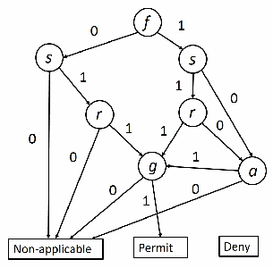
図11 単純なアクセス制御ポリシーを表す多終端二分決定図（MTBDD）。f、s、r、g、cのノードが0/1の枝で結ばれ、終端は非適用、許可、拒否を示す。
Figure 11 An MTBDD for a simple policy MTBDDs have three defining characteristics, which are valuable for AC model black box
図11 単純なポリシーを表すMTBDD。MTBDDには、アクセス制御モデルのブラックボックス検証に有用な3つの特徴がある。
未レビュー訳verification. First, they are constructed relative to some fixed ordering on the variables (read from root to terminal): an MTBDD does not allow two subtrees to inspect variables in different orders. This restriction makes MTBDDs a canonical representation up to the chosen variable ordering. Second, MTBDDs maximally share subtrees, in that at most one copy of a subtree appears anywhere in the decision diagram; for example, the three paths to the same grade node in Figure
第一に、MTBDDは変数の固定された順序（根から終端へ読む順序）に基づいて構成されるため、異なる順序で変数を調べる2つの部分木を持たない。この制約により、選択した変数順序に対してMTBDDは標準形となる。第二に、MTBDDは部分木を最大限共有する。すなわち、決定図のどこにも同じ部分木の複製は現れない。たとえば、図11で同じ成績ノードに至る3つの経路は、
未レビュー訳11.Third, MTBDDs collapse irrelevant variables, meaning that if both values of the same variable refer to the same subtree, the node for that variable is removed, and all references to it are redirected to the shared subtree. The combined effect of the latter two characteristics on the MTBDD in Figure 11 shows the faculty and student variables are false: rather than enumerate the remaining variables’ values, the MTBDD refers directly to the not-applicable terminal.
11.第三に、MTBDDは無関係な変数を縮約する。つまり、同じ変数のどちらの値も同じ部分木を指す場合、その変数のノードを削除し、すべての参照を共有部分木へ付け替える。後者2つの特徴が図11のMTBDDにもたらす効果として、教員変数と学生変数がともに偽の場合、残りの変数値を列挙せず、非該当の終端を直接参照する。
未レビュー訳While in the worst case the number of nodes in an MTBDD is exponential in the number of variables, in practice the number of nodes is often polynomial or even linear. This representation therefore gains dramatically over naive DNF in practice. Operations that combine MTBDDs tend to be efficient in practice; most policy verification needs yield MTBDDs with at most the product of the numbers of nodes of the originals.
最悪の場合、MTBDDのノード数は変数数に対して指数関数的に増えるが、実際には多くの場合、多項式の増加にとどまり、線形となることもある。そのため、この表現は単純なDNFに比べ、実用上大幅に効率がよい。MTBDDを組み合わせる演算も実用上効率的である。ポリシー検証で必要となる処理の多くでは、生成されるMTBDDのノード数は、元のMTBDDのノード数の積以下となる。
未レビュー訳Developed in Racket (formal PLT) scheme, Margrave [MARGRAVE] is a software tool suite written in PLT Scheme for verifying safety requirements against AC policies written in XACML. Margrave represents XACML policies as MTBDD models, it allows the user to specify various forms of safety requirements in the Scheme programming language. Margrave uses one variable for each attribute-value pair in the XACML policy. The variables for the policy shown in Figure 11 would correspond to role=faculty, role=student, action=receive, action=assign, and finally resource=grade (the association between attributes, such as role, with values, such as faculty, is stated in the XACML policy). Margrave creates MTBDD models for the individual policy rules, then combines these with MTBDD-combining algorithms that implement the XACML rule- and policy-combining algorithms.
PLT Scheme（形式PLT）で開発されたMargrave [MARGRAVE]は、XACMLで記述されたACポリシーに対して安全要件を検証するソフトウェアツール群である。MargraveはXACMLポリシーをMTBDDモデルとして表し、Schemeプログラミング言語を使ってユーザーがさまざまな形式の安全要件を指定できるようにする。Margraveは、XACMLポリシー内の属性と値の各組合せに1つの変数を割り当てる。図11のポリシーなら、変数はrole=faculty、role=student、action=receive、action=assign、resource=gradeに対応する（roleなどの属性とfacultyなどの値との対応関係はXACMLポリシーに記述される）。Margraveは個々のポリシールールをMTBDDモデルとして作成し、XACMLのルール結合アルゴリズムとポリシー結合アルゴリズムを実装するMTBDD結合アルゴリズムでそれらを組み合わせる。
未レビュー訳Margrave views the policy constants permit and deny as rules; an operation called augment-rule takes a Boolean condition on the variables and a rule and constrains the rule to also require the given condition. For example, the left two MTBDD models in Figure 12, the MTBDD models for rules saying that faculty attempting to assign grades should yield permit and students attempting to assign grades should yield deny appear. The third MTBDD model represents the result of combining these two rules using rule-combining algorithms.
Margraveでは、permitとdenyというポリシー定数をルールとして扱う。augment-ruleという演算は、変数に対するブール条件とルールを受け取り、その条件も満たすことをルールに要求する。たとえば、図12の左側にある2つのMTBDDモデルは、教員が成績を割り当てようとした場合に許可となり、学生が成績を割り当てようとした場合に拒否となるルールを表す。3つ目のMTBDDモデルは、ルール結合アルゴリズムを使ってこれら2つのルールを結合した結果を表す。
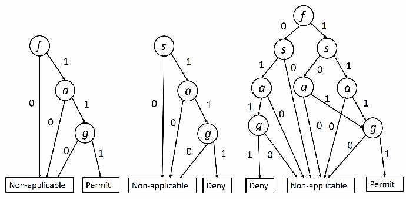
図12 ルールとルール結合のサンプルMTBDD。複数の決定図を並べ、入力条件に応じて非適用、許可、拒否の終端へ分岐する。
Figure 12 Sample MTBDDs for rules and rule combination. Margrave allows the user to specify various forms of safety requirements in the Scheme
図12 ルールとルール結合のMTBDD例。Margraveでは、Schemeプログラミング言語でさまざまな形式の安全要件を指定できる。
未レビュー訳programming language. Margrave’s API can verify these safety requirements and if there exist any counterexamples (being specific requests) that violate the specified safety requirements, these counterexamples are produced. Margrave also provides comprehensive change-impact analysis based on the semantic differences between the MTBDD models representing the policies.
MargraveのAPIはこれらの安全要件を検証でき、指定された安全要件に違反する反例（具体的な要求）が存在する場合、その反例を出力する。また、ポリシーを表すMTBDDモデル間の意味的な差異に基づく包括的な変更影響分析も提供する。
未レビュー訳The chief novelty of Margrave’s current approach lies in embracing the richness of full first-order predicate logic for specifying policies, systems, and queries. Margrave interacts with a user to produce concrete scenarios in response to user queries. Queries cover not only conventional verification-style safety requirements, but also “what if” style questions about the semantic impact of edits. Margrave also allows users to specify policy rules and safety requirement. It then processes user-defined queries about the policy rules and presents scenarios as output. Scenarios are, informally, snapshots of the system—as governed by the policy rules—in which the query holds. [SND13]
Margraveの現在のアプローチの主な新規性は、ポリシー、システム、クエリの指定に、一階述語論理全体の表現力を活用する点にある。Margraveはユーザーと対話し、クエリへの回答として具体的なシナリオを生成する。クエリには、従来型の検証における安全要件だけでなく、編集が意味に及ぼす影響を尋ねる「もし〜なら」形式の質問も含まれる。Margraveではポリシールールと安全要件も指定できる。その後、ユーザー定義のポリシールールに関するクエリを処理し、シナリオを出力として提示する。シナリオとは、ポリシールールが適用されるシステムの状態を切り取ったものであり、その中ではクエリが成立する[SND13]。
未レビュー訳Margrave supports query-based verification and provides query-based views by computing exhaustive sets of scenarios that yield different results including change-impact analysis for comparing a pair of policies. Margrave provides the benefits of static verification without requiring authors to write formal properties; its power comes from choosing an appropriate policy model in first-order logic, and embracing both scenario-finding and multi-level policy-reasoning. In general, Margrave identifies formulas corresponding to many common firewall-analysis problems automatically, thus providing exhaustive analysis for richer policies and queries.
Margraveはクエリベースの検証に対応し、異なる結果をもたらすシナリオの網羅的な集合を計算して、クエリベースのビューを提供する。この機能には、2つのポリシーを比較する変更影響分析も含まれる。Margraveを使えば、作成者が形式的な性質を記述しなくても静的検証の利点を得られる。その能力は、一階論理で適切なポリシーモデルを選び、シナリオの探索と複数レベルのポリシー推論の両方を活用することから得られる。一般にMargraveは、一般的なファイアウォール分析問題の多くに対応する式を自動的に特定し、より複雑なポリシーやクエリについて網羅的な分析を行う。
5.3 Formal Methods
5.3 形式手法
Formal Methods for the validation of access control policies involving mathematical tools and proofs have also been advocated. Rémi Delmas and Thomas Polacsek [AF08] have proposed a logical modelling framework to find the inconsistencies and incompleteness in access control policies. Providing a mechanism for the detection of these two properties, they have introduced two new properties, applicability and minimality, and their proposed technique is capable of verifying these two properties. By using the concepts of signatures, formula and predicates, they have defined some rules for the logical framework, which works for limited or finite data so their rules are also applicable to the finite data. They provided a mechanism to detect the inconsistency, incompleteness, applicability and minimality. [AS15] They also mentioned that the MSFOL (many-sorted first order logic) [Gallier87] formula should be converted to a pseudo-Boolean logic formula to analyze it. The proposed tool is a three-step procedure where a grounding operation gives the grounded formula in the first step which is converted to a bit-vector expression using the bit-vector encoding in the second step of this process. In the last step of this procedure, the bit-vector expressions are converted into clauses which are in pseudo-Boolean form and give us the pseudo-Boolean formula.
数学的手法や証明を用いてアクセス制御ポリシーを妥当性確認する形式手法も提唱されている。Rémi DelmasとThomas Polacsek [AF08]は、アクセス制御ポリシーの矛盾と不完全性を検出するための論理モデリング枠組みを提案した。この2つの性質を検出する仕組みとして、適用可能性と最小性という新たな性質を導入し、提案手法で両方を検証できるようにした。シグネチャ、式、述語の概念を用いて論理枠組みの規則を定義した。この枠組みは有限または限定されたデータを扱うため、規則も有限データに適用できる。矛盾、不完全性、適用可能性、最小性を検出する仕組みも示した[AS15]。また、MSFOL（多ソート一階述語論理）[Gallier87]の式を分析するには、擬ブール論理式へ変換すべきであると述べている。提案ツールは3段階の手順で構成される。第1段階ではグラウンディング処理によりグラウンド式を生成し、第2段階ではビットベクトル符号化を用いてビットベクトル式へ変換する。最後に、ビットベクトル式を節へ変換し、擬ブール形式の擬ブール論理式を得る。
未レビュー訳Z [PST96] is based on axiomatic set theory and first order predicate logic, which can be used for describing and modeling AC policies [Hu02]. Z notation using set theory forms an adequate basis for building the AC model, which allows syntax and type checking, schema expansion, precondition calculation, domain checking, and general theorem proving for model verification by domain checking. Many of the proof obligations are easily proven. In more difficult cases, generating the proof obligation is often a substantial aid in determining whether a specification in the model is meaningful.
Z [PST96]は公理的集合論と一階述語論理に基づいており、アクセス制御ポリシーの記述とモデル化に利用できる[Hu02]。集合論に基づくZ記法は、ACモデルを構築するための十分な基盤となる。これにより、構文・型検査、スキーマ展開、事前条件計算、定義域検査、および定義域検査によるモデル検証のための一般的な定理証明を行える。証明義務の多くは容易に証明できる。難しい場合でも、証明義務を生成することは、モデル内の仕様に意味があるか判断するうえで大きな助けとなる。
未レビュー訳5.4 Mutation Testing
5.4 ミューテーションテスト
Black-box test methods (as described in Section 5.1 through 5.3) may not be sufficient to guard against some unexpected behaviors that are embedded in the AC model as demonstrated in 4.2. To address that, the mutation test of the white box test method generates additional test inputs to cover policy-related entities that are not covered by the black box test methods.
5.1～5.3節で説明したブラックボックステスト手法では、4.2節で示したように、ACモデルに組み込まれた予期しない振る舞いを防ぐには不十分な場合がある。この問題に対処するため、ホワイトボックステスト手法であるミューテーションテストは、ブラックボックステスト手法では網羅されないポリシー関連要素を対象とする追加のテスト入力を生成する。
未レビュー訳The following illustrates mutation verification of safety requirement through a simple example. This ABAC policy formalizes a university’s AC model on assigning and accessing grades. It has two subjects: faculty and student, two resources: internal_grades and external_grades, and three actions: assign, view, and receive [Fisler et al]. For this example, we expect the following safety requirements to hold:
以下では、簡単な例を使って、安全要件に対するミューテーション検証を説明する。このABACポリシーは、成績の割当てと閲覧に関する大学のACモデルを形式化したものである。主体は教員と学生の2種類、リソースはinternal_gradesとexternal_gradesの2種類、アクションはassign、view、receiveの3種類である[Fisler et al.]。この例では、次の安全要件が成立すると想定する。
\(S_1\) -- There do not exist members of student who can assign external_grades.
\(S_1\) -- studentの構成員でexternal_gradesをassignできる者は存在しない。
\(S_2\) -- All members of faculty can assign both internal_grades and external_grades.
\(S_2\) -- facultyの構成員は全員、assignをinternal_gradesとexternal_gradesの両方に対して行える。
\(S_3\) -- There exists no combination of subjects such that a user with those subjects can both receive and assign the resource external_grades.
\(S_3\) -- あるユーザーが持つ主体の組合せによって、receiveとassignの両方をリソースexternal_gradesに対して行える場合は存在しない。
Safety requirement \(S_1\) is intuitive since we certainly do not want students to assign grades. Safety requirement \(S_2\) is to ensure that indeed faculty members can assign grades. \(S_3\) is an example of separation-of-duty since we do not want anyone to assign their own grade, an apparent conflict of interest.
安全要件\(S_1\)は直感的にも妥当である。学生に成績を割り当てさせるべきではないからである。安全要件\(S_2\)は、教員が実際に成績を割り当てられることを保証する。\(S_3\)は職務分離の例である。誰も自分自身の成績を割り当てないようにするためであり、それは明らかな利益相反だからである。
Figure 13 shows the example AC policy model. To keep the example readable and concise, the model is written as simple If Then statements, which do not immediately satisfy these three safety requirements. It is essentially a separation-of-duty (SOD) constraint that restricts any request from having both the faculty and student subjects. All three safety requirements hold in the model.
図13にACポリシーモデルの例を示す。例を簡潔で読みやすくするため、モデルは単純なIf-Then文で記述されており、このままでは3つの安全性要件を直ちに満たさない。これは実質的に、教員と学生の両方の主体を持つ要求を制限する職務分離（SOD）制約である。モデルは3つの安全性要件をすべて満たす。
1 If subject = faculty 2 and resource = (external_grades or internal_grades) 3 and action = (view or assign) 4 Then
1 もし subject = faculty 2 かつ resource = (external_grades または internal_grades) 3 かつ action = (view または assign) 4 ならば
未レビュー訳5 permit
5 許可
未レビュー訳6 If subject = student 7 and resource = external_grades 8 and action = receive 9 Then
6 もし subject = student 7 かつ resource = external_grades 8 かつ action = receive 9 ならば
未レビュー訳10 permit
10 許可
未レビュー訳Figure 13 Rules in an example policy model
図13 例示ポリシーモデルのルール
未レビュー訳The first step of mutation verification is to generate mutant models using a mutation operator that simply inverts each rule’s effect by changing permit to deny or deny to permit (one at a time for each mutant model). The number of mutant models created by this operator is equal to the number of rules in the model. The example model has only two rules and thus only two mutant models are generated. Figures 14 and 15 show these two mutant models.
ミューテーション検証の最初の手順では、各ルールの効果を反転させるミューテーション演算子を使って変異モデルを生成する。各変異モデルにつき1つのルールを対象とし、permitをdenyに、またはdenyをpermitに変更する。この演算子によって生成される変異モデルの数は、モデル内のルール数と等しい。例のモデルにはルールが2つしかないため、変異モデルも2つ生成される。図14と図15にこれらの変異モデルを示す。
未レビュー訳1 If subject = faculty 2 and resource = (external_grades or internal_grades) 3 and action = (view or assign) 4 Then
1 もし subject = faculty 2 かつ resource = (external_grades または internal_grades) 3 かつ action = (view または assign) 4 ならば
未レビュー訳5 deny
5 拒否
未レビュー訳6 If subject = student 7 and resource = external_grades 8 and action = receive 9 Then
6 もし subject = student 7 かつ resource = external_grades 8 かつ action = receive 9 ならば
未レビュー訳10 permit
10 許可
未レビュー訳Figure 14 The first mutant model
図14 最初の変異モデル
未レビュー訳1 If subject = faculty 2 and resource = (external_grades or internal_grades) 3 and action = (view or assign) 4 Then
1 もし subject = faculty 2 かつ resource = (external_grades または internal_grades) 3 かつ action = (view または assign) 4 ならば
未レビュー訳5 permit
5 許可
未レビュー訳6 If subject = student 7 and resource = external_grades 8 and action = receive 9 Then
6 もし subject = student 7 かつ resource = external_grades 8 かつ action = receive 9 ならば
未レビュー訳10 deny
10 拒否
未レビュー訳Figure 15 The second mutant model.
図15 2つ目の変異モデル。
The second step of mutation verification is to determine which safety requirements hold for the original model and each mutant model. The mutant is said to be killed by safety requirement if the safety requirement holds for the original model but does not hold for the mutant model. In other words, the safety requirement reveals the fault seeded in the mutant model. The greater the number of mutants killed, the more comprehensive the original model is in covering the safety requirements.
ミューテーション検証の第2段階では、元のモデルと各変異モデルのどちらで安全要件が成立するかを判定する。元のモデルでは安全要件が成立する一方、変異モデルでは成立しない場合、その安全要件によって変異モデルが「殺された」と表現する。つまり、安全要件が変異モデルに埋め込まれた欠陥を明らかにする。殺される変異モデルの数が多いほど、元のモデルは安全要件をより包括的に網羅している。
The first mutant model in Figure 14 does not satisfy \(S_2\) and thus the first mutant is killed. Recall \(S_2\) seeks to ensure the policy that all faculty members can assign grades. Since the fault in Figure 14 is precisely the rule that grants this access, the safety requirement is apparently violated. Figure 16 illustrates the output from the black box model verification using Margrave (Section 5.2) on the first mutant model. Each counterexample (i.e., request) is represented as a bit mask where each bit corresponds to the specific attribute-id on Lines 2–11. If the bit is 0, then the corresponding attribute value is not present whereas if the bit is 1 then the corresponding attribute value is present. As expected, the given concrete counterexamples are for a faculty to assign internal_grades and for a faculty to assign external_grades. These two counterexamples correspond to Lines 15 and 16 respectively. Access is denied for both requests, indicating a violation of safety requirement \(S_2\).
図14の最初の変異モデルは\(S_2\)を満たさないため、最初の変異モデルは除去（kill）される。\(S_2\)は、すべての教員が成績を割り当てられるというポリシーを保証しようとするものであった。図14の欠陥は、このアクセスを許可するルールそのものであるため、安全要件への違反は明らかである。図16は、Margrave（5.2節）を使って最初の変異モデルをブラックボックスモデル検証した出力を示す。各反例（すなわち要求）はビットマスクで表され、各ビットは2～11行目の特定の属性IDに対応する。ビットが0なら対応する属性値は存在せず、1なら存在する。予想どおり、示された具体的な反例は、facultyがassignをinternal_gradesに対して行う要求と、facultyがassignをexternal_gradesに対して行う要求である。この2つの反例は、それぞれ15行目と16行目に対応する。どちらの要求もアクセスが拒否されており、安全要件\(S_2\)への違反を示している。
1 Counterexample:
1 反例：
未レビュー訳receive
原文のみ
2 1:/Action, command,
原文のみ
原文のみ
3 2:/Action, command, OTHER/
原文のみ
external_grades
原文のみ
4 3:/Resource, resource-class,
原文のみ
原文のみ
The second mutant model in Figure 15 is not killed by any of the three safety requirements, reflecting that the original model is not comprehensive and does not completely “cover” the safety requirements.
図15の2つ目の変異モデルは、3つの安全要件のどれによっても失敗（kill）とならない。これは、元のモデルが包括的ではなく、安全要件を完全には「網羅」していないことを示している。
未レビュー訳Mutation verification serves the safety requirement with the two purposes: (1) to quantify how thoroughly the model covers safety requirements (2) to facilitate model changes such that the model covers all safety requirements or vice versa.
ミューテーション検証には、安全要件に関してモデルの網羅性を定量化することと、モデルがすべての安全要件を網羅するように、またはその逆となるように、モデル変更を容易にすることの2つの目的がある。
In some cases, instead fixing a model, the mutation verification serves the purpose to patch the safety requirements, thus, fixing the policy. For example, adding safety requirement \(S_4\) as below fails to hold for the second mutant policy in xx4.
モデル自体を修正する代わりに、安全要件を補うことでポリシーを修正する目的でミューテーション検証を使う場合もある。たとえば、以下の安全要件\(S_4\)を追加すると、xx4の2つ目の変異ポリシーに対して成立しない。
\(S_4\) All members of student can receive external_grades.
\(S_4\) studentの構成員は全員、external_gradesを受け取ることができる。
In Summary, Figure 17 illustrates the necessary inputs and resultant outputs of the mutation verification. The inputs are the model under test and, in this case, a single mutation operator. The mutator then generates a set of mutant models, each with a single fault. The mutation operator generates a mutant for each rule by negating the decision of that rule. Although black box verification executes relatively quickly for the mutants, large models can be used to easily generate thousands of mutant models. An equivalent mutant is a mutant that is syntactically different from the original model while being semantically equivalent. In other words, an equivalent mutant will produce the same result as the original model for all inputs and thus provides no benefit and result in an artificial lowering of the mutant killing ratio, giving an under rated and inaccurate quality measurement. We can also determine which safety requirements hold and which do not hold for both the original model and each mutant model. Note that in order to perform verification programmatically, an executable script and Scheme program for the original model and each mutant model may be required [MX07].
まとめると、図17はミューテーション検証に必要な入力と、その結果得られる出力を示す。入力は検証対象のモデルと、この場合は単一のミューテーション演算子である。ミューテータは、各々に1つの欠陥を持つ変異モデルの集合を生成する。ミューテーション演算子は各ルールの判断を否定し、そのルールごとに変異モデルを生成する。ブラックボックス検証は変異モデルを比較的短時間で実行できるが、大規模なモデルでは容易に数千の変異モデルが生成される。同等変異モデルとは、元のモデルとは構文上異なるものの、意味的には同等な変異モデルである。つまり、同等変異モデルはすべての入力に対して元のモデルと同じ結果を出すため、利点がなく、変異モデルのkill率を実際より低く見せ、不正確な品質測定につながる。元のモデルと各変異モデルの双方について、どの安全要件が成立し、どれが成立しないかも判定できる。プログラムで検証するには、元のモデルと各変異モデルについて、実行可能なスクリプトおよびSchemeプログラムが必要になる場合がある[MX07]。
Violated Safety requirements
違反した安全要件
未レビュー訳Mutant Model 1
変異モデル1
未レビュー訳Model
モデル
未レビュー訳Model
モデル
未レビュー訳checker (black box)
チェッカー（ブラックボックス）
未レビュー訳Violated
違反した
未レビュー訳Mutant
変異
未レビュー訳Mutator
変異生成器
未レビュー訳Safety
安全
未レビュー訳Model 2
モデル2
未レビュー訳requirements
要件
未レビュー訳Mutation
変異
未レビュー訳Mutant
変異
未レビュー訳Operator
演算子
未レビュー訳Model n Safety
モデルn 安全
未レビュー訳requirements
要件
未レビュー訳Violated Safety requirements
違反した安全要件
未レビュー訳Figure 17 Mutant generation
図17 変異モデルの生成
未レビュー訳An important step of mutation testing is to compute the mutant-killing ratio. The mutant-killing ratio is the ratio of the number of mutants killed to the total number of mutants. This ratio serves as a metric to quantify the coverage of safety requirements by the model. A high mutant-killing ratio indicates the original model covers a high number of safety requirements. For example, the mutant coverage (i.e., the mutant-killing ratio) for the safety requirements \(S_1\), \(S_2\), and \(S_3\) in the above example is 50% since only one of two mutants is killed. If \(S_4\) is added, then the mutant-killing ratio is increase to 100%.
ミューテーションテストの重要な手順の1つは、変異モデルkill率を計算することである。変異モデルkill率は、killされた変異モデルの数を全変異モデル数で割った値である。この比率は、モデルによる安全要件の網羅性を定量化する指標となる。変異モデルkill率が高いほど、元のモデルが多くの安全要件を網羅していることを示す。たとえば、上記の例では、安全要件\(S_1\)、\(S_2\)、\(S_3\)に関する変異モデル網羅率（すなわち変異モデルkill率）は50%である。2つの変異モデルのうち1つだけがkillされるためである。\(S_4\)を追加すると、変異モデルkill率は100%になる。
The trace files generated by the safety requirement verification described earlier are parsed in order to divide the safety requirement set into four subsets for each mutant. A Venn diagram is illustrated in Figure 18 that describes the relationship of these four sets for a single mutant model. The area inside the box represents the set of all safety requirements. The area inside the left-most circle represents the set of safety requirements that hold true for the original model. Thus the area outside the left-most circle and inside the box is the set of safety requirements that do not hold true for the original model (i.e., these safety requirements fail to be held by the original model). The area inside the right-most circle represents the mutant model that holds false for the safety requirement. Therefore, the area outside the right-most circle and inside the box represents the set of safety requirements that are held true for the mutant model. The area of interest is the intersection of the two circles. If at least one safety requirement is held true for the original model but fails to be held true for the mutant model, then the mutant is killed. If the two circles do not intersect, then the mutant is not killed. A safety requirement that is held true for both the original model and the mutant model has no value in exposing the fault in the mutant model because the safety requirement does not apply to the portion of the model that contains the fault. A safety requirement that is held false for the original model has no value because it is unclear if this false safety requirement is caused by an error in the model or the safety requirement itself. More specifically, before mutation verification is conducted, these safety requirements must be manually inspected to determine whether they fail due to an error in the model, an error in the safety requirement, or an error in the environment constraints.
先に説明した安全要件検証で生成されるトレースファイルを解析し、各変異モデルについて安全要件集合を4つの部分集合に分ける。図18は、1つの変異モデルに対するこれら4集合の関係を示すベン図である。四角形の内側は、すべての安全要件の集合を表す。左側の円の内側は、元のモデルで真となる安全要件の集合を表す。したがって、左側の円の外側かつ四角形の内側は、元のモデルで真とならない安全要件、すなわち元のモデルでは成立しない安全要件の集合である。右側の円の内側は、安全要件に対して偽となる変異モデルを表す。そのため、右側の円の外側かつ四角形の内側は、変異モデルで真となる安全要件の集合である。注目するのは2つの円の交差部分である。元のモデルでは真だが変異モデルでは真でなくなる安全要件が1つでもあれば、その変異モデルはkillされる。2つの円が交差しなければ、変異モデルはkillされない。元のモデルと変異モデルの両方で真となる安全要件は、変異モデル内の欠陥がある部分に適用されないため、その欠陥を明らかにする役には立たない。元のモデルで偽となる安全要件も、要件自体の誤りかモデルの誤りかが不明であるため役に立たない。より具体的には、ミューテーション検証を行う前に、これらの安全要件がモデルの誤り、安全要件の誤り、または環境制約の誤りのどれによって成立しないのかを手作業で確認しなければならない。
未レビュー訳Safety requirements
安全要件
未レビュー訳Mutant Killed!
変異モデルを棄却！
未レビュー訳Original True, Mutant True
元のモデルで真、変異モデルで真
未レビュー訳Original True, Mutant False
元のモデルで真、変異モデルで偽
未レビュー訳Original False, Mutant False
元のモデルで偽、変異モデルで偽
未レビュー訳Original False, Mutant True
元のモデルで偽、変異モデルで真
未レビュー訳Figure 18 Venn diagram illustrating the four safety requirement states
図18 4種類の安全要件状態を示すベン図
未レビュー訳5.5 Automated Combinatorial Testing
5.5 自動組合せテスト
As described in 4.3, a test oracle is required to test the correct implementation of the AC model. However, a real-world AC system is likely to have far too many variables (subjects, actions, objects, conditions, etc.) for generating exhaustive test cases based on the safety requirements. One of the possible solutions for reducing the size therefore efficient in computation for test oracle generation is to apply Automated Combinatorial Testing for Software (ACTS) technology [ACTS] which is a methodology that tests all t-way combinations of input parameter values. The most common form is pairwise testing, in which all pairs of input values are covered in at least one test. Higher strength versions of this method cover 3-way, 4-way, or more interactions at least once. The advantage of combinatorial testing for verifying AC implementation is that AC often relies on a small number of discrete values for most parameters. For example, a multi-level security policy (i.e., standard military classification policy) may have levels unclassified, confidential, secret, top-secret, plus a small number of categories, all applied to a collection of resources such as files and programs. For demonstration, a simplified multi-level model, in which each subject (user) has a clearance level u_l, and each file has a classification level f_l. Levels are given as 0, 1, or 2, which could represent levels such as Confidential, Secret, and Top Secret. A user u can read a file f if u_l ≥ f_l (the “no read up” rule), or write to a file if f_l ≥ u_l (the “no write down” rule) is as the following. if u_l >= f_l & act = rd then GRANT; else if f_l >= u_l & act = wr then GRANT; else DENY;
4.3節で述べたとおり、ACモデルが正しく実装されているかテストするには、テストオラクルが必要である。しかし、実世界のACシステムには変数（主体、アクション、オブジェクト、条件など）が非常に多く、安全要件に基づく網羅的なテストケースの生成が現実的でない場合が多い。そのため、テストオラクル生成を効率化し計算量を減らす方法の1つとして、ソフトウェア自動組合せテスト（Automated Combinatorial Testing for Software: ACTS）技術[ACTS]を適用できる。これは入力パラメータ値のすべてのt-way組合せをテストする手法である。最も一般的なのはペアワイズテストで、入力値のすべての組合せペアを少なくとも1回ずつ網羅する。より強い方式では、3-way、4-way、またはそれ以上の相互作用を少なくとも1回網羅する。AC実装の検証に組合せテストが有効なのは、多くのパラメータが少数の離散値に依存するためである。たとえば、（標準的な軍事機密区分ポリシーである）多段階セキュリティ（MLS）ポリシーでは、非機密、機密、秘密、極秘のレベルと少数のカテゴリを、ファイルやプログラムなどのリソースに適用できる。例として、各主体（ユーザー）にクリアランスレベルu_lがあり、各ファイルに分類レベルf_lがある単純化したMLSモデルを考える。レベルは0、1、2で表し、それぞれConfidential、Secret、Top Secretなどの区分に対応させる。ユーザーuはu_l ≥ f_l（「上位への読み取り禁止」規則）の場合ファイルfを読み取れる。また、f_l ≥ u_l（「下位への書き込み禁止」規則）の場合ファイルに書き込める。条件に応じた処理は次のとおりである。 if u_l >= f_l & act = rd then GRANT; else if f_l >= u_l & act = wr then GRANT; else DENY;
未レビュー訳Figure 19 Simple MLS model
図19 単純なMLSモデル
未レビュー訳A 2-way covering array for the example is listed in Figure 20. If we had a larger number of parameters, we could produce test configurations that cover all 3-way, 4-way, etc. combinations. (With only three parameters, 3-way interaction is equivalent to exhaustive testing.)
この例に対する2-way被覆配列を図20に示す。パラメータ数が多い場合は、3-way、4-wayなど、すべての組合せを網羅するテスト構成を生成できる。パラメータが3つだけの場合、3-way相互作用のテストは網羅的テストと同等である。
Number of parameters: 3 Maximum number of values per parameter: 3 Number of configurations: 9
パラメータ数：3 パラメータあたりの最大値数：3 構成数：9
未レビュー訳Configuration #1: 1 = u_l=0 2 = f_l=0 3 = act=rd
構成#1：1 = u_l=0 2 = f_l=0 3 = act=rd
未レビュー訳Configuration #2: 1 = u_l=0 2 = f_l=1 3 = act=wr
構成#2：1 = u_l=0 2 = f_l=1 3 = act=wr
未レビュー訳Configuration #3: 1 = u_l=0 2 = f_l=2 3 = act=rd
構成#3：1 = u_l=0 2 = f_l=2 3 = act=rd
未レビュー訳Configuration #4: 1 = u_l=1 2 = f_l=0 3 = act=wr
構成#4：1 = u_l=1 2 = f_l=0 3 = act=wr
未レビュー訳Configuration #5: 1 = u_l=1 2 = f_l=1 3 = act=rd
構成#5：1 = u_l=1 2 = f_l=1 3 = act=rd
未レビュー訳Configuration #6: 1 = u_l=1 2 = f_l=2 3 = act=wr
構成#6：1 = u_l=1 2 = f_l=2 3 = act=wr
未レビュー訳Configuration #7:
構成#7：
未レビュー訳The next step is to assign values from the covering array to parameters used in the model. For each test, we claim that the expected result will not occur. The model checker determines combinations that would disprove these claims, outputting these as counterexamples. Each counterexample can then be converted to a test with known expected result. As can be seen below, for each of the 9 configurations in the covering array of Figure 20, we create a SPEC claim of the form:
次の手順では、被覆配列の値をモデルで使うパラメータに割り当てる。各テストでは、予想される結果が起こらないと主張する。モデルチェッカーは、その主張を反証する組合せを判定し、反例として出力する。各反例を、期待される結果が既知のテストに変換できる。以下に示すように、図20の被覆配列にある9つの構成それぞれについて、次の形式のSPEC主張を作成する。
未レビュー訳SPEC AG(( <covering array values> ) -> AX !(access = <result>))
原文のみ
(the SPEC is the syntax of the model checker for the safety requirement specification); This process is repeated for each possible result, in this case either “GRANT” or “DENY”, so we have 9 claims for each of the two results as in Figure 21.
（SPECは、安全要件仕様を記述するモデルチェッカーの構文である。）この手順を可能な結果ごとに繰り返す。この例では「GRANT」または「DENY」のどちらかであるため、図21に示すように、結果ごとに9つ、合計18の主張を作成する。
未レビュー訳Excerpt: ... -- reflection of the assign for access --SPEC AG ((u_l >= f_l & act = rd ) -> AX (access = GRANT)); --SPEC AG ((f_l >= u_l & act = wr ) -> AX (access = GRANT)); --SPEC AG (!( (u_l >= f_l & act = rd ) | (f_l >= u_l & act = wr ) )
抜粋：... -- アクセスに対する割当ての反映 --SPEC AG ((u_l >= f_l & act = rd ) -> AX (access = GRANT)); --SPEC AG ((f_l >= u_l & act = wr ) -> AX (access = GRANT)); --SPEC AG (!( (u_l >= f_l & act = rd ) | (f_l >= u_l & act = wr ) )
未レビュー訳-> AX (access = DENY));
原文のみ
* SPEC AG((u_l = 0 & f_l = 0 & act = rd) -> AX !(access = GRANT)); * SPEC AG((u_l = 0 & f_l = 1 & act = wr) -> AX !(access = GRANT)); SPEC AG((u_l = 0 & f_l = 2 & act = rd) -> AX !(access = GRANT)); SPEC AG((u_l = 1 & f_l = 0 & act = wr) -> AX !(access = GRANT)); * SPEC AG((u_l = 1 & f_l = 1 & act = rd) -> AX !(access = GRANT)); * SPEC AG((u_l = 1 & f_l = 2 & act = wr) -> AX !(access = GRANT)); * SPEC AG((u_l = 2 & f_l = 0 & act = rd) -> AX !(access = GRANT)); SPEC AG((u_l = 2 & f_l = 1 & act = wr) -> AX !(access = GRANT)); * SPEC AG((u_l = 2 & f_l = 2 & act = rd) -> AX !(access = GRANT)); SPEC AG((u_l = 0 & f_l = 0 & act = rd) -> AX !(access = DENY)); SPEC AG((u_l = 0 & f_l = 1 & act = wr) -> AX !(access = DENY)); * SPEC AG((u_l = 0 & f_l = 2 & act = rd) -> AX !(access = DENY)); * SPEC AG((u_l = 1 & f_l = 0 & act = wr) -> AX !(access = DENY)); SPEC AG((u_l = 1 & f_l = 1 & act = rd) -> AX !(access = DENY)); SPEC AG((u_l = 1 & f_l = 2 & act = wr) -> AX !(access = DENY)); SPEC AG((u_l = 2 & f_l = 0 & act = rd) -> AX !(access = DENY)); * SPEC AG((u_l = 2 & f_l = 1 & act = wr) -> AX !(access = DENY)); SPEC AG((u_l = 2 & f_l = 2 & act = rd) -> AX !(access = DENY));
原文のみ
Figure 21 Test cases for test oracle
図21 テストオラクルのテストケース
未レビュー訳A model checker produces counterexamples where the input values would disprove the claims specified in Figure 21. Each of these counterexamples is thus a set of test data that would have the expected result of GRANT or DENY (as listed by a * in Figure 21). We now strip out the parameter names and values, from Figure 21 giving tests that can be applied to the system under test. The tests produced are shown below:
モデルチェッカーは、図21に指定した主張を入力値が反証する場合、その入力値を反例として生成する。各反例は、期待される結果がGRANTかDENYか（図21の「*」で示す）を伴うテストデータ集合である。次に、図21からパラメータ名と値を取り除き、被テストシステムに適用できるテストを作成する。生成されたテストを以下に示す。
未レビュー訳u_l = 0 & f_l = 0 & act = rd -> access = GRANT u_l = 0 & f_l = 1 & act = wr -> access = GRANT u_l = 1 & f_l = 1 & act = rd -> access = GRANT u_l = 1 & f_l = 2 & act = wr -> access = GRANT u_l = 2 & f_l = 0 & act = rd -> access = GRANT u_l = 2 & f_l = 2 & act = rd -> access = GRANT u_l = 0 & f_l = 2 & act = rd -> access = DENY u_l = 1 & f_l = 0 & act = wr -> access = DENY u_l = 2 & f_l = 1 & act = wr -> access = DENY
原文のみ
These test definitions can now be post-processed using simple scripts to produce a test cases for the test oracle.
これらのテスト定義は、簡単なスクリプトで後処理し、テストオラクル用のテストケースを生成できる。
未レビュー訳5.6 Pseudo-exhaustive Testing
5.6 擬網羅テスト
This section describes a method of testing for access control systems (or other systems with formally specified rules) that is pseudo-exhaustive, which we define as exhaustive testing of all combinations of attribute values on which an access control decision is dependent [KHFKL16]. An advantage of this method is that it can be used to produce a complete test set, in the sense that all negative cases as well as all positive cases are verified. This approach is analogous to pseudo-exhaustive methods for testing combinational circuits, where the verification problem is reduced by exhaustively testing only the subset of inputs on which an output is dependent, or by partitioning the circuit and exhaustively testing each segment. We can use the basic principle of testing only subsets of attributes on which a decision is dependent, although the partitioning is done in a different manner than for combinational circuits. The structure of the access control problem makes it possible to apply the same principle by rendering the conditions for each grant in disjunctive normal form, then considering each term separately.
この節では、アクセス制御システム（または形式仕様で規則を定めたその他のシステム）に対する擬網羅テスト手法を説明する。ここで擬網羅テストとは、アクセス制御の判断に関係する属性値のすべての組合せを網羅的にテストすることをいう[KHFKL16]。この手法の利点は、肯定的なケースだけでなく否定的なケースもすべて検証する完全なテスト集合を作成できることである。この手法は、出力に依存する入力の部分集合だけを網羅的にテストしたり、回路を分割して各部分を網羅的にテストしたりすることで検証問題を縮小する、組合せ回路テストの擬網羅手法に似ている。決定が依存する属性の部分集合だけをテストする基本原則は利用できるが、分割方法は組合せ回路の場合と異なる。アクセス制御問題の構造を利用し、各許可条件を選言標準形に変換してから各項を個別に検討することで、同じ原則を適用できる。
未レビュー訳For example, a rule with attributes \(\mathit{employment\_status}\) and \(\mathit{time\_of\_day}\) might be, “If subject is an employee and the hour is between 9 am and 5 pm, then allow entry.” The problem with this approach is that \(n\) boolean attributes or variables result in potentially \(2^n\) rules. Many such rules may be included in written policy documents, and rules may include a variety of attributes. For any combination of attribute values, the system must implement rules that accurately reflect the written policy. The structure of such rules is typically as follows, where \(R_i\) are boolean conditions evaluating the values of one or more attributes:
たとえば、属性\(\mathit{employment\_status}\)と\(\mathit{time\_of\_day}\)を持つ規則は、「主体が従業員で、時刻が午前9時から午後5時の間なら、入場を許可する」となる。この方法の問題は、\(n\)個のブール属性または変数が最大\(2^n\)個の規則につながり得ることである。記述されたポリシー文書には多くの規則が含まれ、さまざまな属性が使われる場合がある。属性値のどの組合せに対しても、システムは記述されたポリシーを正確に反映する規則を実装しなければならない。この種の規則は通常、以下の構造をとる。ここで\(R_i\)は、1つ以上の属性の値を評価するブール条件である。
which is equivalent to:
これは次の形式と等価である。
This code can be mapped to the following expression:
このコードは次の式に変換できる。
未レビュー訳The boolean literals may represent conditions, such as \(\mathit{age} > 18\), or boolean attributes such as \(\mathit{employee}\), but the structure will be as shown in the example. That is, a series of expressions specifying subsets of attribute conditions that must be true for access to be granted, followed by a default deny-access rule when none of the attribute expressions have been instantiated to \(\mathit{true}\).
ブールリテラルは、\(\mathit{age} > 18\)などの条件や\(\mathit{employee}\)などのブール属性を表す場合があるが、構造は例に示すとおりである。すなわち、アクセスを許可するために真でなければならない属性条件の部分集合を指定する式を並べ、どの属性式も\(\mathit{true}\)にならない場合は既定でアクセスを拒否する規則を続ける。
Testing an implementation requires showing that the policy specified, \(P\), is correctly implemented. The implemented policy \(P'\) must be shown to produce the same response as \(P\) for any combination of attributes used as input. That is, for input attributes \(x_1,\ldots,x_n\), \(P'(x_1,\ldots,x_n) = P(x_1,\ldots,x_n)\).
実装をテストするには、指定されたポリシー\(P\)が正しく実装されていることを示す必要がある。実装されたポリシー\(P'\)は、入力として使用する属性の任意の組合せに対して、\(P\)と同じ応答を返すことを示さなければならない。すなわち、入力属性\(x_1,\ldots,x_n\)に対して\(P'(x_1,\ldots,x_n) = P(x_1,\ldots,x_n)\)である。
Confirming that access will be granted for users with the right attributes is easy: we can simply read off the attribute conditions for each \(\mathit{grant}\) expression and verify that the access control system returns an authorization in each case. The number of such tests is linear in the number of \(\mathit{grant}\) conditions. However, it is much more difficult to ensure that no invalid combination of attributes will result in authorization. With \(n\) boolean attributes or variables there are \(2^n\) possible combinations of attributes. For example, it would not be unusual to have 50 conditions or Boolean attributes, resulting in \(2^{50} \approx 10^{15}\) combinations, but it must be shown that no combination will improperly allow access.
適切な属性を持つユーザーにアクセスが許可されることの確認は容易である。各\(\mathit{grant}\)式の属性条件を読み取り、各ケースでアクセス制御システムが認可を返すことを検証すればよい。このようなテストの数は\(\mathit{grant}\)条件の数に対して線形である。しかし、属性の無効な組合せによって認可が生じないことを保証するのは、はるかに難しい。\(n\)個のブール属性または変数があれば、属性の組合せは\(2^n\)通りある。たとえば、50個の条件またはブール属性があることは珍しくなく、その場合は\(2^{50} \approx 10^{15}\)通りの組合せが生じるが、不適切にアクセスを許可する組合せが1つもないことを示さなければならない。
To make testing tractable, we will use covering arrays of attributes in policies that have been converted to \(k\)-DNF form. \(k\)-DNF refers to disjunctive normal form where no term contains more than \(k\) literals. Recall that a term is a conjunction of one or more literals within the disjunction. For example, \(abc + de\) contains two terms, one with three literals and one with two, so the expression is in 3-DNF form. A 3-way covering will contain all 3-way combinations of variable values (and therefore also all 1-way and 2-way combinations). Where an expression is in \(k\)-DNF, any term containing \(k\) literals that is resolved to true will clearly result in the full expression being evaluated to true. For example, a rule in 2-DNF form could be: “if employee && US_citizen || auditor then grant”. This rule contains one term of two attributes and one term of one attribute, so it is 2-DNF. Because a covering array of strength \(k\) contains every possible setting of all \(k\)-tuples and \(i\)-tuples for \(i < k\), it contains every combination of values of any \(k\) literals.
テストを実行可能にするため、\(k\)-DNF形式に変換したポリシーの属性の被覆配列を用いる。\(k\)-DNFとは、どの項も\(k\)個を超えるリテラルを含まない選言標準形をいう。項とは、選言の中にある1つ以上のリテラルの連言である。たとえば、\(abc + de\)には2つの項があり、1つはリテラルを3つ、もう1つは2つ含むため、この式は3-DNF形式である。3-way被覆は、変数値の3-way組合せをすべて含む（したがって1-wayと2-wayの組合せもすべて含む）。式が\(k\)-DNFであるとき、\(k\)個のリテラルを含む項が真に解決されれば、式全体も明らかに真と評価される。たとえば、2-DNF形式の規則は次のように書ける：「if employee && US_citizen || auditor then grant」。この規則には、2つの属性からなる項が1つと、1つの属性からなる項が1つ含まれるため、2-DNFである。強度\(k\)の被覆配列は、すべての\(k\)要素組と\(i\)要素組（\(i < k\)）について可能なすべての設定を含むため、任意の\(k\)個のリテラルの値の組合せをすべて含む。
Covering array generation tools, such as ACTS, make it possible to include constraints that prevent the inclusion of variable combinations that meet criteria specified in a first order logic style syntax. For example, if we are testing applications that run on various combinations of operating systems and browsers, we may include a constraint such as
ACTSなどの被覆配列生成ツールを使うと、一階述語論理形式の構文で指定された条件を満たさない変数の組合せを除外する制約を設定できる。たとえば、さまざまなOSとブラウザーの組合せで動作するアプリケーションをテストする場合、次のような制約を含められる：‘OS = “Linux” => browser != “IE”’
未レビュー訳‘OS = “Linux” => browser
原文のみ
. Constraints are typically used in situations such as this, where certain combinations do
このような制約は、特定の組合せが
未レビュー訳!= “IE”’ not occur in practice, and therefore should not be included in tests.
実際には発生せず、テストにも含めるべきでない場合に用いる。
未レビュー訳Method: Let \(R\) = rule antecedents (left hand side of an implication rule such as \(p\) in \(p \rightarrow q\)) of one or more policy rules being tested in \(k\)-DNF, and \(T_i\) are terms (conjuncts of one or more attributes) in \(R\). For the example included in the introduction, terms \(T_i\) of \(R\) would be \(ac\bar{d}\), \(ae\), and \(\bar{a}b\bar{c}\). \(R\) is not necessarily the complete policy; it may be the set of rules associated with a particular resource that we wish to test, for example.
方法：\(R\) を、規則前件（\(p\) を含む \(p \rightarrow q\) のような含意規則の左辺）とする。これは \(k\)-DNF形式でテストする1つ以上のポリシールールの前件である。また、\(T_i\) は \(R\) に含まれる項（1つ以上の属性の連言）である。導入部の例では、項 \(T_i\) は \(R\) について \(ac\bar{d}\)、\(ae\)、\(\bar{a}b\bar{c}\) となる。\(R\) は必ずしも完全なポリシー全体ではない。たとえば、テスト対象とする特定のリソースに関連付けられたルール集合でもよい。
Positive testing: Generate a test set \(\mathrm{GTEST}\) for which every test should produce a response of grant. It must be shown that for all possible inputs, where some combination of \(k\) input values matches a grant condition, a decision of grant is returned. Construct test set \(\mathrm{GTEST}\) with one test for each term of \(R\) as follows:
肯定テスト：テスト集合 \(\mathrm{GTEST}\) を生成する。その各テストはgrant（許可）の応答を返すべきものである。\(k\) 個の入力値の組合せがgrant条件に一致する場合、あらゆる入力に対してgrantの判断が返ることを示さなければならない。テスト集合 \(\mathrm{GTEST}\) は、\(R\) の各項に対して1つずつテストを作成し、次のように構成する。
The construction ensures that each term in \(P\) is verified to independently produce a response of grant. Negating each term \(T_j\), \(i \ne j\), prevents masking of a fault in the presence of other combinations that would return the same result. For example, if a rule condition is \(ab + cd \rightarrow \mathit{grant}\), inputs of 1100, 1101, 1110 could be used for testing \(ab \rightarrow \mathit{grant}\). However, input 1111 would not detect the fault if the system ignores variable \(a\) or \(b\), because the condition \(cd\) would cause a grant decision, and no other grant predicates would be evaluated. One such test is required for each term in a grant rule, so for \(m\) rules with an average of \(p\) terms each, the number of tests required is proportional to \(mp\).
この構成では、\(P\) の各項が単独でgrantの応答を返すことを検証する。各項 \(T_j\)（\(i \ne j\)）を否定すると、同じ結果を返す他の組合せによって欠陥が隠れるのを防げる。たとえば、ルール条件が \(ab + cd \rightarrow \mathit{grant}\) なら、\(ab \rightarrow \mathit{grant}\) をテストする入力として1100、1101、1110を使える。しかし、システムが変数 \(a\) または \(b\) を無視している場合、入力1111では欠陥を検出できない。条件 \(cd\) によってgrantの判断が生じ、他のgrant述語が評価されないためである。grantルール内の各項についてこのようなテストが1つ必要である。したがって、\(m\) 個のルールに平均 \(p\) 個の項がある場合、必要なテスト数は \(mp\) に比例する。
Negative testing: Generate a test set \(\mathrm{DTEST}\) for which every test should produce a response of deny. It must be shown that for all possible inputs, where no combination of \(k\) input values matches a grant condition, a decision of deny is returned.
否定テスト：テスト集合 \(\mathrm{DTEST}\) を生成する。その各テストはdeny（拒否）の応答を返すべきものである。\(k\) 個の入力値のどの組合せもgrant条件に一致しない場合、あらゆる入力に対してdenyの判断が返ることを示さなければならない。
\(\mathrm{DTEST}\) = covering array of strength \(k\), for the set of attributes included in \(R\), with constraints specified by \(\sim R\).
\(\mathrm{DTEST}\) = 強度 \(k\) の被覆配列。対象は \(R\) に含まれる属性集合であり、制約は \(\sim R\) で指定する。
Note that the structure of the access control rule evaluation makes it possible to use a covering array for \(\mathrm{DTEST}\), compressing a large number of test conditions into a few tests. Because a deny is issued only after all grant conditions have been evaluated, masking of one combination by another can only occur for \(\mathrm{DTEST}\) when a test produces a response of grant. In such a case, an error has been discovered, which can be repaired before running the test set again. Since \(\mathrm{DTEST}\) is a covering array, the number of tests will be proportional to \(v^k \log n\), for \(v\) values per attribute (normally \(v=2\) since most will be boolean conditions), and \(n\) attributes. For \(m\) rules, the number of tests is multiplied by the constant \(m\).
なお、アクセス制御規則の評価構造により、\(\mathrm{DTEST}\) に被覆配列を使用し、多数のテスト条件を少数のテストに圧縮できる。denyはすべてのgrant条件を評価した後にのみ返されるため、ある組合せが別の組合せによって隠されるのは、\(\mathrm{DTEST}\) のテストがgrantの応答を返す場合に限られる。その場合はエラーが見つかっており、テスト集合を再実行する前に修正できる。\(\mathrm{DTEST}\) は被覆配列であるため、テスト数は \(v^k \log n\) に比例する。ここで \(v\) は属性あたりの値の数（大半がブール条件であるため通常は \(v=2\)）、\(n\) は属性数である。ルールが \(m\) 個なら、テスト数には定数 \(m\) を掛ける。
Example: Table 1 gives a set of boolean attributes \(a\) through \(e\), where each row defines values for the attributes that determine a decision, either grant or deny. Thus a covering array for the antecedent \(R\) of a rule in 3-DNF such as (\(ac\bar{d} + \bar{a}b\bar{c} \rightarrow \mathit{grant}\)) is given in Table 1. The total number of 3-way combinations covered is the number of settings of three binary variables multiplied by the number of ways of choosing three variables from five, i.e., \(2^3 \binom{5}{3} = 80\).
例：表1は、ブール属性 \(a\) ～ \(e\) の値の集合を示す。各行は、grantまたはdenyの判断を決める属性値を定義する。したがって、前件 \(R\) に対する被覆配列を表1に示す。これは3-DNF形式の規則、たとえば（\(ac\bar{d} + \bar{a}b\bar{c} \rightarrow \mathit{grant}\)）の前件である。網羅される3-way組合せの総数は、3つの二値変数の設定数に、5つの変数から3つを選ぶ方法の数を掛けた値、すなわち \(2^3 \binom{5}{3} = 80\) である。
Table 2 shows a covering array for this set of variables generated using \(\sim R\) as a constraint. That is, the two terms of the rule, \(ac\bar{d}\) and \(\bar{a}b\bar{c}\), have been excluded from the array, but all other 1-, 2-,
表2は、この変数集合について \(\sim R\) を制約として生成した被覆配列を示す。つまり、規則の2つの項 \(ac\bar{d}\) と \(\bar{a}b\bar{c}\) は配列から除外されているが、他のすべての1-way、2-way、
and and 3-way combinations can be found in the array. Because acd̅ a̅ bc̅ are the only conditions under which access should be granted, the array in Table 2 should result in a deny response from the access control system for every test. Collectively, the tests ianncldude all 78 3-way settings of attributes that will not instantiate the access control rule to true.
および3-wayの組合せは配列に含まれる。acd̄とābc̄がアクセスを許可すべき唯一の条件であるため、表2の配列では、各テストに対してアクセス制御システムがdenyを返すはずである。テストをまとめると、アクセス制御規則が真にならない属性値の3-way設定を78通りすべて含む。
未レビュー訳Table 1: 3-way covering array
表1：3-way被覆配列
未レビュー訳| A | b | c | d | e | |
| 1 | 0 | 0 | 0 | 0 | 0 |
| 2 | 0 | 0 | 1 | 1 | 1 |
| 3 | 0 | 1 | 0 | 1 | 0 |
| 4 | 0 | 1 | 1 | 0 | 1 |
| 5 | 1 | 0 | 0 | 1 | 1 |
| 6 | 1 | 0 | 1 | 0 | 0 |
| 7 | 1 | 1 | 0 | 0 | 1 |
| 8 | 1 | 1 | 1 | 1 | 0 |
| 9 | 1 | 1 | 0 | 0 | 0 |
| 10 | 0 | 0 | 1 | 1 | 0 |
| 11 | 0 | 0 | 0 | 0 | 1 |
| 12 | 1 | 1 | 1 | 1 | 1 |
原本PDFの抜粋画像
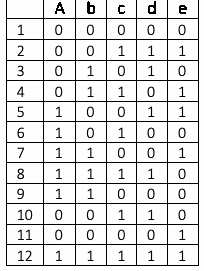
Table 2: 3-way covering array with constraint \(\sim R\)
表2：制約 \(\sim R\) を適用した3-way被覆配列
| a | b | c | d | e | |
| 1 | 0 | 0 | 0 | 0 | 0 |
| 2 | 0 | 0 | 1 | 1 | 1 |
| 3 | 0 | 1 | 1 | 0 | 0 |
| 4 | 1 | 0 | 0 | 1 | 0 |
| 5 | 1 | 0 | 1 | 1 | 0 |
| 6 | 1 | 1 | 0 | 0 | 1 |
| 7 | 1 | 1 | 1 | 1 | 1 |
| 8 | 0 | 0 | 1 | 0 | 1 |
| 9 | 1 | 1 | 0 | 1 | 0 |
| 10 | 0 | 0 | 0 | 1 | 1 |
| 11 | 1 | 0 | 0 | 0 | 0 |
| 12 | 0 | 1 | 1 | 1 | 0 |
| 13 | 1 | 0 | 0 | 0 | 1 |
| 14 | 0 | 1 | 1 | 0 | 1 |
原本PDFの抜粋画像
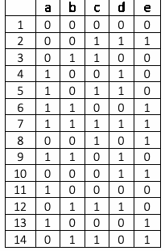
Fault detection properties: Collectively, tests from \(\mathrm{GTEST}\) and \(\mathrm{DTEST}\) will detect all added, deleted, or altered faults with up to \(k\) literals. If more than \(k\) literals are included in the altered term, some faults are still detected. Proofs of these properties can be found in [IWCT 16], which also details characteristics of faults of more than \(k\) literals which will be detected.
欠陥検出特性：\(\mathrm{GTEST}\) と \(\mathrm{DTEST}\) のテストを合わせると、\(k\) 個以下のリテラルを含む追加・削除・変更の欠陥をすべて検出できる。変更された項に \(k\) 個を超えるリテラルが含まれる場合でも、一部の欠陥は検出される。これらの特性の証明は[IWCT 16]にあり、\(k\) 個を超えるリテラルを含む欠陥のうち検出されるものの特徴も説明されている。
Generalization of method: Although only two responses are considered in the description of the method above, it is simple to generalize to more than two responses. Because multiple responses are possible, instead of \(\mathrm{Gtest}\) and \(\mathrm{Dtest}\) for grant and deny results, we will refer to \(\mathrm{Ptest}_i\) and \(\mathrm{Ntest}_i\) arrays, for \(i\) possible results, and \(\mathrm{Ptest}_{ij}\) and \(\mathrm{Ntest}_{ij}\) index rows \(j\) of each array.
手法の一般化：上記の手法の説明では応答を2種類だけ扱うが、3種類以上にも容易に一般化できる。複数の応答があり得るため、grantとdenyの結果に対する \(\mathrm{Gtest}\) と \(\mathrm{Dtest}\) の代わりに、\(\mathrm{Ptest}_i\) と \(\mathrm{Ntest}_i\) の配列を用いる。\(i\) は可能な結果を表し、\(\mathrm{Ptest}_{ij}\) と \(\mathrm{Ntest}_{ij}\) は各配列の行 \(j\) を指す。
• Positive testing: Generate a test set \(\mathrm{Ptest}_i\) for which every test should produce a response output of \(O_i\). It must be shown that for all possible inputs, where some combination of \(k\)
• 肯定テスト：テスト集合 \(\mathrm{Ptest}_i\) を生成する。その各テストは \(O_i\) の応答出力を返すべきものである。あらゆる入力について、\(k\) 個の
input values instantiates the condition for \(O_i\) to true, a result of \(O_i\) is returned. The construction for \(\mathrm{Gtest}\) is used for each possible response output \(O_i\) to produce one positive array for each response \(O_i\).
入力値が \(O_i\) の条件を真にする場合、\(O_i\) の結果が返される。\(\mathrm{Gtest}\) の構成を、あり得る各応答出力 \(O_i\) について用い、各応答 \(O_i\) に対して肯定配列を1つ生成する。
未レビュー訳• Negative testing: Similarly, we construct one negative array \(\mathrm{Ntest}_i\) for each possible result output \(O_i\) as a covering array of strength \(k\), for the terms in rules \(R_i\) that result in \(O_i\) with constraints specified by \(\sim R_i\), for each output \(i\).
• 否定テスト：同様に、否定テスト配列 \(\mathrm{Ntest}_i\) を各可能な結果出力 \(O_i\) について1つ作成する。これは強度 \(k\) の被覆配列であり、対象はルール \(R_i\) の項のうち \(O_i\) となるもので、制約は \(\sim R_i\) で指定する。これを各出力 \(i\) について行う。
Note also that the method is not constrained to access control applications, but can be used for any formally specified system where rules can be converted to a \(k\)-DNF form.
また、この手法はアクセス制御アプリケーションに限られず、ルールを \(k\)-DNF形式に変換できる形式仕様システムならどのようなものにも使用できる。
5.7 Real Time AC Rule Implementation Detection
5.7 リアルタイムACルール実装の検出
Most research on AC model or policy verification techniques is focused on one particular model, and almost all of the research is in applied methods, which require the completed AC policies as the input for verification or test processes to generate fault reports (as previously mentioned). Even though correct verification is achieved and counterexamples may be generated along with found faults, those methods provide no information about the source of rule faults that might allow conflicts in privilege assignment, leakage of privileges, or conflict of interest permissions. The difficulty in finding the source of fault is increased especially when the AC rules are intricately covering duplicated variables to a degree of complexity. The complexity is due to the fact that a fault might not be caused by one particular rule; for example, rule \(x\) grants subject/attribute \(s\) access to object/attribute \(o\), and rule \(y\) denies the group subject/attribute \(g\), which \(s\) is a member of, access to object \(o\). Such conflict can only be resolved by removing either rule \(x\) or \(y\), or the \(g\) membership of \(s\) from the policy. But removing \(x\) or \(y\) affects other rules that depend on them (e.g., a member of subject group \(g\) \(k\) is granted access to object \(o\)), and removing \(s\)’s membership in \(g\) will disable \(g\)’s legitimate access to other objects/attributes through the membership. Thus, it requires manually analyzing each and every rule in the policy in order to find the correct solution for the fault. To address the issue, the AC Rule Logic Circuit Simulation (ACRLCS) technique [HS13], which enables the AC authors to detect a fault when the fault-causing AC rule is added to the model, so the fixing can be implemented in real time (on the spot) before adding other rules that further complicate the detecting effort. In other words, instead of checking by retracing the interrelations between rules after the policy is completed, the policy author needs only check the new added rule against previous “correct” ones. In ACRLCS, AC rules are represented in a simulated logic circuit (SLC) (pronounced CELL-see). By simulation, it means ACRLCS is not necessarily implementable by a physical electronic circuit; however, the concept can be implemented and computed through simulated software. ACRLCS is composed of SLCs representing AC rules specified in Boolean expressions. A SLC should be able to preserve the assignments of AC variables and privilege hierarchies (through inheritance) and evaluate access permission (e.g., grant or deny) from the implemented rule. With this principle, the technique includes two main processes:
ACモデルやポリシーの検証技術に関する研究の多くは、特定のモデル1つを対象としている。また、研究のほぼすべてが応用手法に関するものであり、完成したACポリシーを入力として検証やテストを行い、欠陥報告を生成する（前述のとおり）。検証が正しく行われ、欠陥とともに反例が生成されても、特権割当ての競合、特権漏えい、利益相反を許す設定につながるルール欠陥の発生源について、これらの手法は情報を提供しない。重複する変数を複雑に扱うACルールでは、特に欠陥の発生源の特定が難しくなる。欠陥が単一のルールだけに起因するとは限らないためである。たとえば、ルール\(x\)が主体／属性\(s\)にオブジェクト／属性\(o\)へのアクセスを許可し、ルール\(y\)が、グループ主体／属性\(g\)（\(s\)はその構成員である）に対し、オブジェクト\(o\)へのアクセスを拒否するとする。この競合は、ルール\(x\)か\(y\)のいずれか、または\(g\)への\(s\)の所属をポリシーから削除しなければ解消できない。しかし、\(x\)または\(y\)を削除すれば、それらに依存する他のルールにも影響する（たとえば、主体グループ\(g\) \(k\)の構成員がオブジェクト\(o\)へのアクセスを許可される場合）。また、\(s\)の\(g\)への所属を削除すれば、その所属を介した\(g\)の他のオブジェクト／属性への正当なアクセスも無効になる。そのため、欠陥の適切な解決策を見つけるには、ポリシー内の各ルールを手作業で分析しなければならない。この問題に対処するACルール論理回路シミュレーション（ACRLCS）手法[HS13]は、欠陥の原因となるACルールをモデルに追加した時点でAC作成者が欠陥を検出できるようにし、検出をさらに複雑にする他のルールを追加する前に、その場で（リアルタイムに）修正を実施できるようにする。言い換えると、ポリシー完成後にルール間の相互関係をたどって確認する代わりに、ポリシー作成者は新しく追加したルールを以前の「正しい」ルールと照合するだけでよい。ACRLCSでは、ACルールをシミュレートされた論理回路（SLC、CELL-seeと発音する）として表現する。ここでシミュレーションとは、ACRLCSが必ずしも物理的な電子回路で実装できるわけではないという意味であるが、概念はシミュレーションソフトウェアで実装・計算できる。ACRLCSは、ブール式で指定されたACルールを表すSLCから構成される。SLCはAC変数の割当てと特権階層（継承によるもの）を保持し、実装されたルールからアクセス許可（たとえばgrantまたはdeny）を評価できなければならない。この原則に基づき、この手法は次の2つの主要なプロセスを含む。
•• Construct a SLC based on AC variables specified by Boolean expressions, or relation hierarchies specified by relations in an AC rule. In the SLC, each AC variable is represented by an input switch, and the rule logic operator and hierarchy relation are simulated by logic gates.
•• ブール式で指定されたAC変数、またはACルール内の関係で指定された関係階層に基づいてSLCを構築する。SLCでは、各AC変数を入力スイッチで表し、ルールの論理演算子と階層関係を論理ゲートでシミュレートする。
• Develop an efficient algorithm to detect rule faults in the policy by triggering input switches representing AC rule variables under verification in the currently constructed SLC. Rule faults are generated as positive signal outputs from the SLC, indicating conflicts in privilege assignments caused by a new added rule. Figure 22 implements a simple Bell-Lapadula [BL73] read property of MLS policy model, under which \(\mathit{Top\_Secret}\) rank users can read objects in \(\mathit{Top\_Secret}\), \(\mathit{Secret}\), and \(\mathit{Confidential}\) ranks; \(\mathit{Secret}\) rank users can read objects in \(\mathit{Secret}\) and \(\mathit{Confidential}\) ranks; and \(\mathit{Confidential}\) rank users can only read objects in the \(\mathit{Confidential}\) rank.
• 現在構築中のSLCにおいて、検証対象のACルール変数を表す入力スイッチを作動させることで、ポリシー内のルール欠陥を検出する効率的なアルゴリズムを開発する。ルール欠陥はSLCからの正信号出力として生成され、新たに追加されたルールが引き起こす特権割当ての競合を示す。図22はMLSポリシーモデルの単純なBell-LaPadula [BL73]読み取り特性を実装している。このモデルでは、\(\mathit{Top\_Secret}\)ランクのユーザーは\(\mathit{Top\_Secret}\)、\(\mathit{Secret}\)、\(\mathit{Confidential}\)ランクのオブジェクトを読み取れる。\(\mathit{Secret}\)ランクのユーザーは\(\mathit{Secret}\)と\(\mathit{Confidential}\)ランクのオブジェクトを読み取れる。\(\mathit{Confidential}\)ランクのユーザーが読み取れるのは\(\mathit{Confidential}\)ランクのオブジェクトだけである。
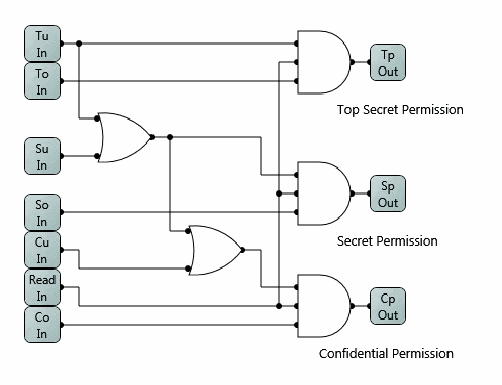
図22 MLSポリシーモデルの論理回路。Top Secret、Secret、Confidentialの入力をゲートで組み合わせ、それぞれのアクセス許可出力を生成する。
Figure 22 MLS policy model
図22 MLSポリシーモデル
未レビュー訳5.8 Test scheme
5.8 テスト方式
General AC system testing framework (as in Figure 23) contains four major functions using the methods as stated in Section 4. The AC Rule Real-time Error detector is used optionally for designing the initial AC models [HS13]. The Black Box Tester checks if a model (original or mutant) holds for the specified Safety Requirements. The Black Box Tester (counterexample results) provides information for original model fix (a human action as dotted line in the figure) and for mutation killing check for White Box Tester. It also takes output from the Test Generator and returns results for test case generation. The White Box Tester generates and kills mutant models based on the original model and safety requirements; its mutated models are sent to the Black Box Tester for mutation killing check, or to the AC model author for original model or safety requirement fix (a human action as shown in dotted lines in the figure). The Test Oracle Generator generates test cases based on the Safety Requirement and the Black Box Tester’s counterexample results. The process steps are listed below:
図23に示す一般的なACシステムテスト枠組みは、4節で示した手法を用いる4つの主要機能から成る。ACルールのリアルタイムエラー検出器は、初期ACモデルを設計するときに任意で使用する[HS13]。ブラックボックステスターは、モデル（元のモデルまたは変異モデル）が指定された安全性要件を満たすか確認する。ブラックボックステスターが返す反例は、元のモデルの修正（図中の点線で示す人手による作業）や、ホワイトボックステスターによる変異モデルkill判定に使う情報となる。また、テストジェネレーターからの出力を受け取り、テストケース生成の結果を返す。ホワイトボックステスターは、元のモデルと安全性要件に基づいて変異モデルを生成し、kill判定を行う。生成した変異モデルは、kill判定のためブラックボックステスターへ送るか、元のモデルまたは安全性要件の修正のためACモデル作成者へ送る（後者の修正は図中の点線で示す人手による作業である）。テストオラクルジェネレーターは、安全性要件とブラックボックステスターの反例からテストケースを生成する。各手順を以下に示す。
1.(optional) AC models are designed based on the AC policy by using AC Rule Real-time Error Checker (as described in Section 5.4).
1.1. （任意）5.4節で説明したACルールのリアルタイムエラーチェッカーを使い、ACポリシーに基づいてACモデルを設計する。
2.Safety requirements are specified.
2.2. 安全要件を指定する。
3.Completed original AC model is checked against safety requirements by Black Box Tester (as described in Section 3.1, 4.1 and 5.1). If an error is found, the original model needs to be fixed (thus repeat steps 1 to 3), otherwise proceed to next step 4.
3.3. 完成した元のACモデルを、ブラックボックステスターで安全要件に照らして確認する（3.1、4.1、5.1節を参照）。エラーが見つかった場合は元のモデルを修正して手順1～3を繰り返す。見つからなければ手順4へ進む。
未レビュー訳4.Fixed original model sent to White Box Tester for coverage and confinement check (as described in Section 3.2, 4.2 and 5.2). The White Box Tester uses Black Box Tester to decide if generated mutant models were killed. If not, original model or safety requirements need to be fixed (thus repeat step 1 to 4), otherwise, proceed to next step 5.
4.4. 修正済みの元のモデルをホワイトボックステスターに送り、網羅性と閉じ込め性を確認する（3.2、4.2、5.2節を参照）。ホワイトボックステスターは、生成した変異モデルがkillされたかをブラックボックステスターで判定する。killされない場合は元のモデルまたは安全要件を修正して手順1～4を繰り返す。そうでなければ手順5へ進む。
5.Test Oracle Generator generates test cases based on Safety Requirements, which are sent to Black Box Tester for generating permission results used for the test oracle (as described in Section 4.3 and 5.3).
5.5. テストオラクルジェネレーターは安全要件に基づいてテストケースを生成し、許可結果を得るためブラックボックステスターへ送る。得られた結果をテストオラクルに用いる（4.3、5.3節を参照）。
Note that the components in Figure 23 and steps listed above are not necessarily all required for an AC model verification; the selections of components and steps might depend on the complexity of the model and the cost for implementing the test framework. Thus, an AC model test framework can contain optional components/functions in Figure 23 except that the Black Box tested is essential.
図23のコンポーネントと上記の手順は、ACモデル検証にすべて必須とは限らない。どのコンポーネントや手順を選択するかは、モデルの複雑さとテスト枠組みの実装コストによって異なる。そのため、ACモデルのテスト枠組みには図23の任意コンポーネント／機能を含めてもよいが、ブラックボックステスターは必須である。
未レビュー訳Test Oracle
テストオラクル
未レビュー訳Black Box Tester
ブラックボックステスター
未レビュー訳Test
テスト
未レビュー訳(cases)
（ケース）
未レビュー訳AC model
ACモデル
未レビュー訳(Model checker)
（モデルチェッカー）
未レビュー訳Oracle
オラクル
未レビュー訳Generator
ジェネレーター
未レビュー訳/constraints under
／制約の
未レビュー訳(cases)
（ケース）
未レビュー訳(Combinatorial
（組合せ
未レビュー訳test
テスト対象
未レビュー訳methods)
手法）
未レビュー訳White Box Tester
ホワイトボックステスター
未レビュー訳Safety
安全
未レビュー訳(Mutated model
（変異モデルの
未レビュー訳AC Model
ACモデル
未レビュー訳Requirements
要件
未レビュー訳generation and
生成と
未レビュー訳Generator or
生成器、または
未レビュー訳AC policy
ACポリシー
未レビュー訳kill)
kill判定）
未レビュー訳(optional
（任意の
未レビュー訳Author
作成者
未レビュー訳AC rule real-time
ACルールのリアルタイム
未レビュー訳図23の一部。負号と人物アイコンが描かれ、近くに「Test Oracle (cases)」の箱がある。
error detector - ACRLC)
エラーチェッカー（ACRLC）
未レビュー訳AC policy
ACポリシー
未レビュー訳Figure 23 AC testing framework
図23 ACテスト枠組み
未レビュー訳6 EXAMPLE SYSTEM -- NIST ACPT
6 システム例：NIST ACPT
未レビュー訳NIST’s Access Control Policy Tool (ACPT) (Figure 24 from the screen shots) provides (1) GUI templates for composing AC models, (2) safety requirements verification for AC models through an NuSMV (Symbolic Model Verification) model checker NuSMV, (3) complete test cases generated by NIST’s combinatorial testing tool ACTS, and (4) XACML policy generation as output of verified model as shown in Figure 25 architecture. Through the four major functions, ACPT performs all the syntactic and semantic verifications as well as the interface for composing and combining AC models for AC policies; ACPT assures the efficiency of specified AC models, and eliminates the possibility of making faulty AC models that leak the information or prohibit legitimate information sharing.
NISTのアクセス制御ポリシーツール（ACPT、画面例は図24）は、(1) ACモデルを作成するためのGUIテンプレート、(2) NuSMV（記号モデル検証）モデルチェッカーによるACモデルの安全要件検証、(3) NISTの組合せテストツールACTSが生成する完全なテストケース、(4) 検証済みモデルからのXACMLポリシー生成（図25の構成を参照）を提供する。これら4つの主要機能により、ACPTは構文検証と意味検証のすべてを行い、ACポリシー用のACモデルを作成・結合するインターフェースも提供する。ACPTは指定されたACモデルの効率を保証し、情報漏えいや正当な情報共有の妨げにつながる欠陥モデルの作成を防ぐ。
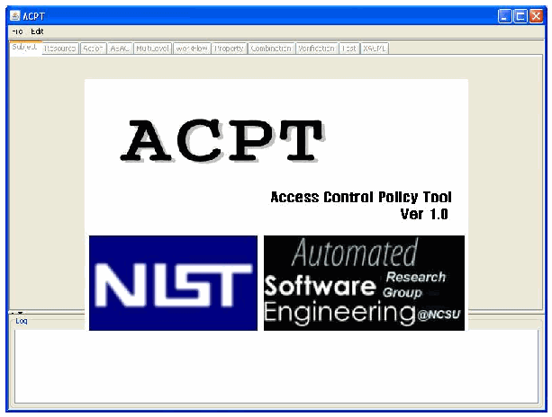
ACPT（Access Control Policy Tool）バージョン1.0の起動画面。NISTとAutomated Software Research Engineeringのロゴが表示される。
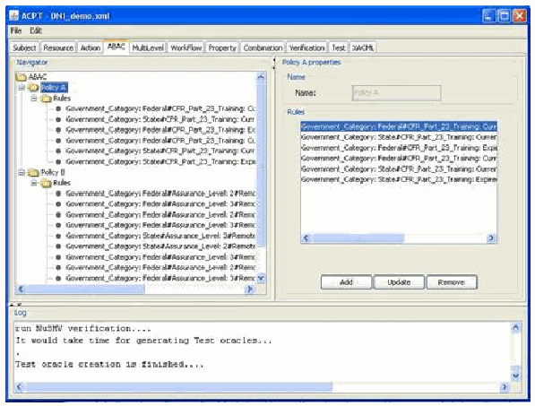
ACPTのユーザーインターフェース画面。左側に設定項目のツリー、右側に入力フォーム、下部にログや結果の領域がある。
Figure 24 ACPT screen shots
図24 ACPTの画面例
未レビュー訳AC policy author
ACポリシー作成者
未レビュー訳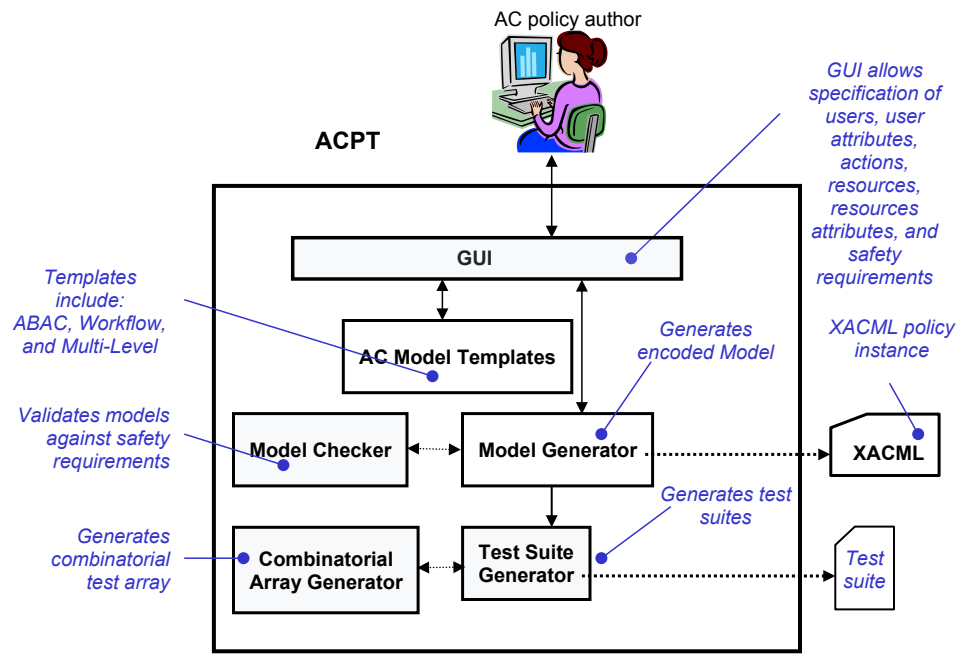
図25のGUI説明ラベル。ユーザー、ユーザー属性、アクション、リソース、リソース属性、安全要件を指定できることを示す。
GUI allows specification of users, user attributes,
GUIでは、ユーザー、ユーザー属性を
未レビュー訳ACPT
ACPT
未レビュー訳actions, resources, resources attributes, and
アクション、リソース、リソース属性、および
未レビュー訳原本PDFの抜粋画像
safety
安全
未レビュー訳Templates
テンプレート
未レビュー訳requirements
要件を指定できる。
未レビュー訳include: ABAC, Workflow,
次を含む：ABAC、ワークフロー、
未レビュー訳Generates XACML policy
XACMLポリシーを生成
未レビュー訳図25の「AC Model Templates（ACモデルテンプレート）」ボックスの一部。
and Multi-Level
およびマルチレベル方式
未レビュー訳instance
インスタンス
未レビュー訳encoded Model
符号化モデル
未レビュー訳AC Model Templates
ACモデルテンプレート
未レビュー訳Validates models
モデルを検証
未レビュー訳図25の「Model Generator（モデル生成器）」ボックスの一部。
against safety
安全
未レビュー訳Model Checker
モデルチェッカー
未レビュー訳Model Generator
モデル生成器
未レビュー訳XACML
XACML
未レビュー訳requirements
要件に照らして
未レビュー訳Generates test suites
テストスイートを生成
未レビュー訳Generates
生成
未レビュー訳Test Suite
テストスイート
未レビュー訳Test
テスト
未レビュー訳combinatorial
組合せ
未レビュー訳Combinatorial test array Array Generator Generator
組合せテスト配列 配列生成器 生成器
未レビュー訳suite
スイート
未レビュー訳Figure 25 ACPT architecture
図25 ACPTのアーキテクチャ
未レビュー訳ACPT allows users to specify AC models or their combinations, as well as safety requirements through a GUI that contains model templates for three major AC policies: static Attribute-Based AC, Multi-Leveled Security, and stated Work-Flow. ACPT then performs black box model check to verify if the specified safety requirements conform to the specified models. If not, non-conformance messages are returned to the user, otherwise, ACPT proceeds to generate test cases through ACTS, which are ready for testing the AC application implemented according to the models. Figure 26 shows the function flow of the ACPT, followed by the specification of each function.
ACPTでは、ユーザーがGUIを通じて、ACモデルまたはその組合せ、および安全要件を指定できる。このGUIには、主要な3種類のACポリシー、すなわち静的属性ベースAC、マルチレベルセキュリティ、状態付き（stated）ワークフローのモデルテンプレートが用意されている。ACPTは続いてブラックボックスモデル検査を行い、指定された安全要件が指定モデルに適合するかを検証する。適合しない場合は不適合メッセージをユーザーに返す。適合する場合は、モデルに従って実装されたACアプリケーションのテストに使用できるテストケースをACTS経由で生成する。図26にACPTの機能フローを示し、その後で各機能を説明する。
未レビュー訳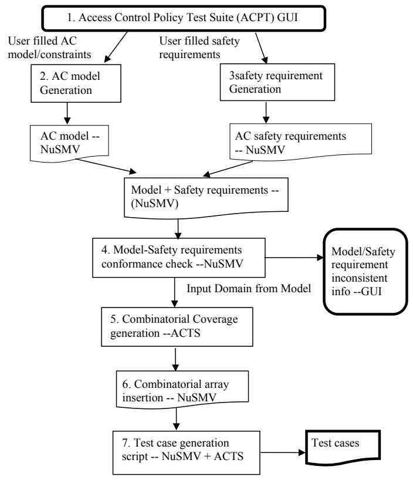
図24の見出しラベル「1. Access Control Policy Test Suite (ACPT) GUI」。ACPTのGUI画面セクションを示す。
1.Access Control Policy Test Suite (ACPT) GUI
1.アクセス制御ポリシーテストスイート（ACPT）のGUI
未レビュー訳User filled safety
ユーザーが入力した安全
未レビュー訳User filled AC
ユーザーが入力したAC
未レビュー訳requirements
要件
未レビュー訳model/constraints
モデル／制約
未レビュー訳3safety requirement
3 安全要件
未レビュー訳2.AC model Generation Generation
2.ACモデル生成 生成
未レビュー訳AC model --
ACモデル --
未レビュー訳AC safety requirements
AC安全要件
未レビュー訳NuSMV
NuSMV
未レビュー訳-- NuSMV
-- NuSMV
未レビュー訳Model + Safety requirements --(NuSMV)
モデル＋安全要件 --（NuSMV）
未レビュー訳4.Model-Safety requirements Model/Safety conformance check --NuSMV requirement inconsistent Input Domain from Model info --GUI
4.モデル－安全要件 モデル／安全要件の適合性チェック -- NuSMV 要件に不整合 入力ドメイン モデル情報から -- GUI
未レビュー訳5.Combinatorial Coverage generation --ACTS
5.組合せカバレッジ生成 -- ACTS
未レビュー訳6.Combinatorial array insertion -- NuSMV
6.組合せ配列の挿入 -- NuSMV
未レビュー訳Test cases
テストケース
未レビュー訳7.Test case generation script -- NuSMV + ACTS
7.テストケース生成スクリプト -- NuSMV＋ACTS
未レビュー訳Figure 26 ACPT function flow
図26 ACPTの機能フロー
未レビュー訳1.ACPT GUI prompts users to specify required information for the selected AC models from the model templates stored in the database, models such as MLS, RBAC, Work Flow, Chinese, and AC constraints are available for the selection. This interface provides blanks for fill-in (depends on the models selected), and allows users to select more than one model for their specifications. Users are also required to specify AC safety requirements by composing provided predicate and Boolean logic operators with the filled-in AC variables.
1.ACPTのGUIは、データベースに保存されたモデルテンプレートから選択したACモデルについて、必要な情報を指定するようユーザーに求める。MLS、RBAC、ワークフロー、Chinese（チャイニーズウォール）などのモデルやAC制約を選択できる。このインターフェースには入力欄が用意され（選択したモデルによって異なる）、ユーザーは仕様に複数のモデルを選択できる。また、入力したAC変数と、用意された述語論理演算子およびブール論理演算子を組み合わせて、ACの安全要件を指定する必要がある。
2.AC model generation produces AC model as part of the final NuSMV program according to the information entered in 1. If more than one model were entered and causing conflicts or errors in the process of model combination, the user will be notified for fixing either their models or safety requirements to resolve the problems.
2.ACモデル生成では、手順1で入力された情報に従ってACモデルを生成し、最終的なNuSMVプログラムの一部とする。複数モデルの入力によってモデル結合時に競合またはエラーが生じた場合、モデルまたは安全要件を修正して問題を解決するようユーザーに通知する。
3.AC safety requirements generation produces AC safety requirements as part of the final NuSMV program according to the information entered in 1. The generated safety requirements will be combined with the part of NuSMV model program from 2 to form the final NuSMV program.
3.AC安全要件生成では、手順1で入力された情報に従ってAC安全要件を生成し、最終的なNuSMVプログラムの一部とする。生成された安全要件は、手順2のNuSMVモデルプログラム部分と結合され、最終的なNuSMVプログラムを構成する。
未レビュー訳4. Model-property conformance check invokes NuSMV Model Checker to output
4. モデルとプロパティの適合性チェックでは、NuSMVモデルチェッカーを起動し、出力を生成する。
未レビュー訳counterexamples found, and then terminate its process if rule conflicts or errors found in the specified AC models (generated by step 2) unless there is no counterexample detected.
反例が見つかった場合はその内容を出力し、指定されたACモデル（手順2で生成）に規則の競合またはエラーが見つかれば処理を終了する。反例が検出されなければ、処理を続行する。
未レビュー訳5.Combinatorial coverage generation scans the variables in the user specified models, and sends the variables with the ranges of their values to the ACTS combinatorial array generation tool. The outputs from ACTS are then collected for the insertion into the NuSMV program generated in 3.
5.組合せカバレッジ生成では、ユーザーが指定したモデル内の変数を調べ、値の範囲とともにACTS組合せ配列生成ツールへ送る。ACTSからの出力を収集し、手順3で生成したNuSMVプログラムへの挿入に備える。
未レビュー訳6.Combinatorial array insertion replaces the variables in the property statement sections of the NuSMV program in 3, the number of safety requirement statements can be as many as the number of array items generated in 5.
6.組合せ配列挿入では、手順3のNuSMVプログラムにあるプロパティ文のセクション内の変数を置き換える。安全要件文の数は、手順5で生成された配列項目の数まで増えることがある。
未レビュー訳7.Test case generation run the resulting NuSMV program from 6. Because of the massive size of the resulting NuSMV program in 6, caused by the size of the variables and their values, support from cluster computing might be required. The counterexamples (if found) from the output of the NuSMV model checker, along with the expected outputs specified in the safety requirement statements of the program will be translated into test cases, which are the final output of the ACPT
7.テストケース生成では、手順6で得られたNuSMVプログラムを実行する。変数とその値の規模によってプログラムが非常に大きくなるため、クラスタコンピューティングの支援が必要となる場合がある。NuSMVモデルチェッカーの出力に含まれる反例（見つかった場合）と、プログラムの安全要件文で指定された期待出力をテストケースに変換し、ACPTの最終出力とする。
未レビュー訳[HKX08, HXHA10, HXHAS10, HHX12].
[HKX08, HXHA10, HXHAS10, HHX12]。
未レビュー訳Pseudo-exhaustive Testing Function
擬似網羅的テスト機能
未レビュー訳An implementation of Pseudo-exhaustive testing (Section 5.6) was added to the ACPT. This implementation uses a Boolean based policy as input; the software then ensure that the policy is in DNF and then solves for Grant conditions by evaluating the individual portions of the DNF policy, and then solves for Deny conditions, by utilizing ACTS with \({\sim}\mathrm{R}\) as a constraint.
ACPTには、擬似網羅的テスト（5.6節）の実装が追加された。この実装はブール式に基づくポリシーを入力として用いる。ソフトウェアはポリシーがDNF（選言標準形）であることを確認し、DNFポリシーの各部分を評価してGrant条件を求める。次に、\({\sim}\mathrm{R}\)を制約としてACTSを用い、Deny条件を求める。
Example: Given the Boolean Policy of: mc && ~oc && ~mr || lo && (mc || cc || oc) || pc The explanation of the policy is the following:
例：次のブールポリシーが与えられた場合：mc && ~oc && ~mr || lo && (mc || cc || oc) || pc。ポリシーの説明は次のとおりである。
| Text | Expression |
| (A) The {minor consents: \(\mathbf{mc}\)} to such health care service; no {other consent: \(\mathbf{oc}\)} to such health care service is required by law, regardless of whether the consent of another person has also been obtained; and the minor has not {requested that such person: \(\mathbf{mr}\)} be treated as the personal representative; | \(\mathtt{mc} \mathbin{\mathtt{\&\&}} {\sim}\mathtt{oc} \mathbin{\mathtt{\&\&}} {\sim}\mathtt{mr}\) |
| (B) The {minor may lawfully obtain: \(\mathbf{lo}\)} such health care service without the consent of a parent, guardian, or other person acting in loco parentis, and the {minor: \(\mathbf{mc}\)}, a {court: \(\mathbf{cc}\)}, or {another person: \(\mathbf{oc}\)} authorized by law consents to such health care service; | \(\mathtt{lo} \mathbin{\mathtt{\&\&}} (\mathtt{mc} \mathbin{\mathtt{||}} \mathtt{cc} \mathbin{\mathtt{||}} \mathtt{oc})\) |
| (C) A {parent, guardian, or other person acting in loco parentis assents to an agreement of confidentiality: \(\mathbf{pc}\)} | \(\mathtt{pc}\) |
| テキスト | 式 |
| (A) {未成年者が当該医療サービスに同意する: \(\mathbf{mc}\)}。別の者の同意も得られているかどうかにかかわらず、当該医療サービスに{他の者の同意: \(\mathbf{oc}\)}は法律上必要とされない。かつ、未成年者が、当該者を個人代理人として扱うよう{求めていない: \(\mathbf{mr}\)}場合。 | \(\mathtt{mc} \mathbin{\mathtt{\&\&}} {\sim}\mathtt{oc} \mathbin{\mathtt{\&\&}} {\sim}\mathtt{mr}\) |
| (B) 未成年者が、親、後見人、または親の代わりに行動する他の者の同意なしに当該医療サービスを{合法的に受けられ: \(\mathbf{lo}\)}、かつ、{未成年者: \(\mathbf{mc}\)}、{裁判所: \(\mathbf{cc}\)}、または法律で認められた{他の者: \(\mathbf{oc}\)}が当該医療サービスに同意する場合。 | \(\mathtt{lo} \mathbin{\mathtt{\&\&}} (\mathtt{mc} \mathbin{\mathtt{||}} \mathtt{cc} \mathbin{\mathtt{||}} \mathtt{oc})\) |
| (C) {親、後見人、または親の代わりに行動する他の者が、秘密保持に関する合意に同意する: \(\mathbf{pc}\)}場合。 | \(\mathtt{pc}\) |
Figure 27 shows the ABAC Boolean testing interface in ACPT.
図27に、ACPTのABACブールテストインターフェースを示す。
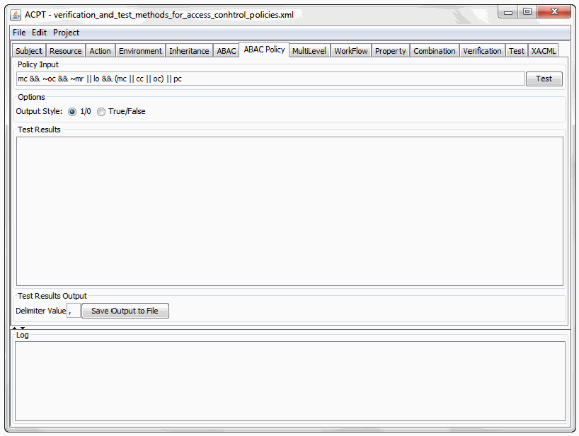
ACPTのブールポリシーテスト用インターフェース画面。ポリシー編集領域とテスト結果を表示するパネルがある。
Figure 27 ACPT Showing ABAC Boolean Policy Testing
図27 ABACブールポリシーをテストするACPT
未レビュー訳The expression is then converted within the software into Disjunctive Normal Form (DNF) to be evaluated. The DNF form of the expression can then be split into sections on each operator.
式はソフトウェア内で選言標準形（DNF）に変換され、評価される。DNF形式の式は、各演算子に基づくセクションに分割できる。
未レビュー訳OR
OR（または）
未レビュー訳Each section can be evaluated to find a
各セクションを評価して、次の条件を求める。
未レビュー訳condition (assign for non-negated variables,
条件（否定されていない変数に値を割り当てる。
未レビュー訳GRANT
許可
未レビュー訳TRUE
真
未レビュー訳a
未レビュー訳for negated variables); for variables not found in that section, a value of
否定された変数の場合）。そのセクションに含まれない変数には、値
未レビュー訳is set.
を設定する。
未レビュー訳FALSE
偽
未レビュー訳FALSE
偽
未レビュー訳Doing this process will generate of all the
この処理により、次のすべての
未レビュー訳conditions, as shown in Figure 28.
条件が生成される。図28に示す。
未レビュー訳GRANT
許可
未レビュー訳DNF of the input policy: (!mr && !oc && mc) || (cc && lo) || (lo && mc) || (lo && oc) || pc
入力ポリシーのDNF：(!mr && !oc && mc) || (cc && lo) || (lo && mc) || (lo && oc) || pc
未レビュー訳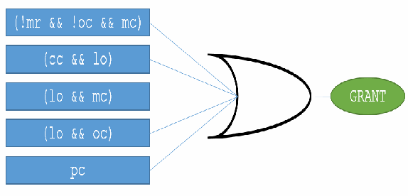
図28 許可条件を求めるORゲート図。複数のDNF項（!mr、!oc、mc、cc、lo、pc等）をORで結合し、GRANTを出力する。
Figure 28 Method for finding Grant Solutions – Each Section through an OR Gate
図28 許可解を求める方法—各セクションをORゲートに通す
未レビュー訳The resulting
指定されたポリシーについて得られた
未レビュー訳results for the specified policy are below:
結果を以下に示す。
未レビュー訳GRANT
許可
未レビュー訳Table 3: Result of GRANT Testing
表3：許可テストの結果
未レビュー訳| Section of Policy | cc | lo | mc | mr | oc | pc |
| !mr & !oc & mc | 0 | 0 | 1 | 0 | 0 | 0 |
| cc & lo | 1 | 1 | 0 | 0 | 0 | 0 |
| lo & mc | 0 | 1 | 1 | 0 | 0 | 0 |
| lo & oc | 0 | 1 | 0 | 0 | 1 | 0 |
| pc | 0 | 0 | 0 | 0 | 0 | 1 |
原本PDFの抜粋画像
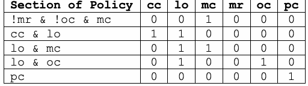
| ポリシーのセクション | cc | lo | mc | mr | oc | pc |
| !mr & !oc & mc | 0 | 0 | 1 | 0 | 0 | 0 |
| cc & lo | 1 | 1 | 0 | 0 | 0 | 0 |
| lo & mc | 0 | 1 | 1 | 0 | 0 | 0 |
| lo & oc | 0 | 1 | 0 | 0 | 1 | 0 |
| pc | 0 | 0 | 0 | 0 | 0 | 1 |
The same table of results is displayed within the software as shown in Figure 29.
図29に示すように、同じ結果表がソフトウェア内にも表示される。
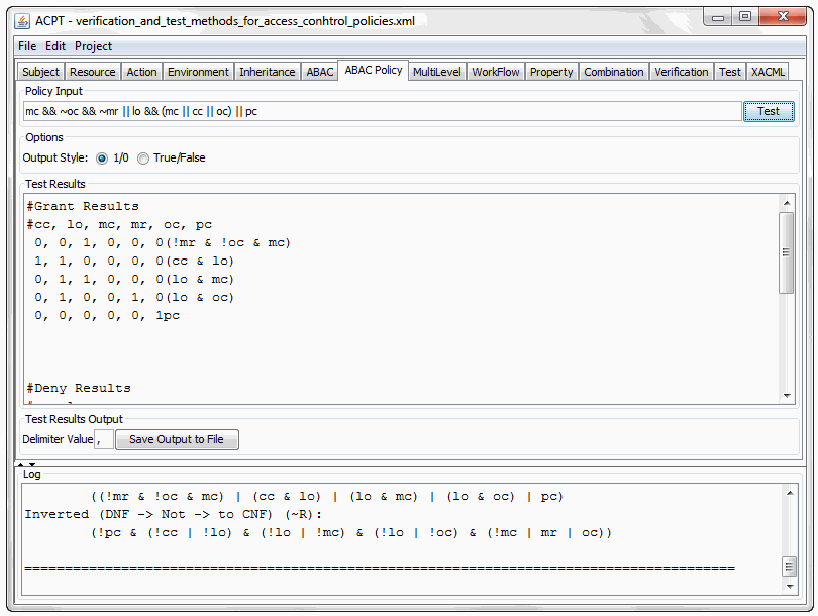
ACPTの許可テスト出力画面。入力ポリシー、DNF式、許可結果の一覧が表示される。
Figure 29 Example Output for Grant Results
図29 許可結果の出力例
未レビュー訳To generate the conditions, the DNF of the original policy must be inverted as shown in
条件を生成するには、元のポリシーのDNFを次のように反転する必要がある。
未レビュー訳DENY
拒否
未レビュー訳Figure 30. Then all possible inputs must be found (which, depending on the size of the policy, could take a very long time) – or, using combinatorial testing methods the size of the test set can be reduced; instead of all possible combinations, covering arrays which cover all combinations of inputs can provide coverage. Once the inverted policy is found, it is used as an input into NIST’s ACTS software as a constraint to produce the resulting results.
図30。次に、考えられるすべての入力を求める必要がある（ポリシーの規模によっては非常に長い時間がかかる）。または、組合せテスト手法を用いてテストセットの規模を縮小できる。すべての組合せを列挙する代わりに、入力の全組合せを網羅する組合せ配列を使ってカバレッジを確保できる。反転したポリシーが得られたら、それを制約としてNISTのACTSソフトウェアに入力し、結果を生成する。
未レビュー訳DENY
拒否
未レビュー訳In this case, the inverted DNF policy is: (!pc && (!cc || !lo) && (!lo || !mc) && (!lo || !oc) && (!mc || mr || oc))
この場合、反転したDNFポリシーは次のとおりである：(!pc && (!cc || !lo) && (!lo || !mc) && (!lo || !oc) && (!mc || mr || oc))
未レビュー訳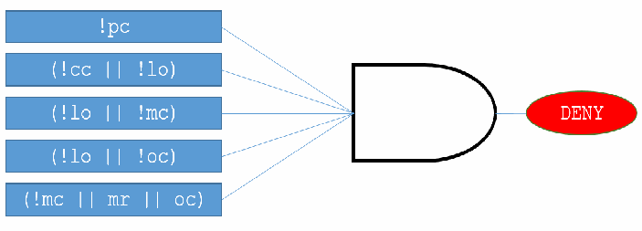
図30 拒否条件を求めるANDゲート図。否定条件の各項をANDで結合し、DENYを出力する。
Figure 30 Method for finding Deny Solutions – Each Section through an AND Gate
図30 拒否解を求める方法—各セクションをANDゲートに通す
未レビュー訳The resulting deny tests are found below:
結果として得られる拒否テストを以下に示す。
Table 4: Result of DENY Testing
表4：拒否テストの結果
未レビュー訳| cc | lo | mc | mr | oc | pc |
| 1 | 0 | 1 | 1 | 1 | 0 |
| 1 | 0 | 0 | 0 | 0 | 0 |
| 0 | 1 | 0 | 1 | 0 | 0 |
| 0 | 0 | 1 | 0 | 1 | 0 |
| 0 | 0 | 0 | 1 | 1 | 0 |
| 0 | 1 | 0 | 0 | 0 | 0 |
| 0 | 0 | 1 | 1 | 0 | 0 |
| 1 | 0 | 0 | 1 | 1 | 0 |
| 1 | 0 | 1 | 0 | 1 | 0 |
| 1 | 0 | 0 | 0 | 1 | 0 |
| 1 | 0 | 1 | 1 | 0 | 0 |
原本PDFの抜粋画像
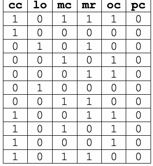
| cc | lo | mc | mr | oc | pc |
| 1 | 0 | 1 | 1 | 1 | 0 |
| 1 | 0 | 0 | 0 | 0 | 0 |
| 0 | 1 | 0 | 1 | 0 | 0 |
| 0 | 0 | 1 | 0 | 1 | 0 |
| 0 | 0 | 0 | 1 | 1 | 0 |
| 0 | 1 | 0 | 0 | 0 | 0 |
| 0 | 0 | 1 | 1 | 0 | 0 |
| 1 | 0 | 0 | 1 | 1 | 0 |
| 1 | 0 | 1 | 0 | 1 | 0 |
| 1 | 0 | 0 | 0 | 1 | 0 |
| 1 | 0 | 1 | 1 | 0 | 0 |
The same table of results is displayed within the software, however, the some are not shown in the following screen shot in Figure 31 due to window size.
同じ結果表はソフトウェア内にも表示されるが、ウィンドウサイズの制約により、図31のスクリーンショットには一部が表示されていない。
未レビュー訳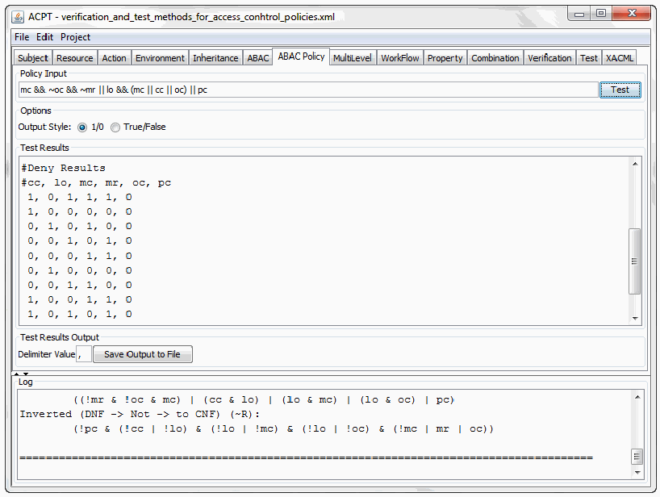
ACPTの拒否解出力画面。ポリシー検査結果と拒否条件の組合せが表示される。
Figure 31 Example Output for Deny Solutions
図31 拒否解の出力例
未レビュー訳Relational Testing
関係式テスト
未レビュー訳In addition to a pure Boolean input policy, some initial support for relational expression testing is included in the software.
純粋なブール式の入力ポリシーに加え、このソフトウェアには関係式テストの初期的なサポートも含まれている。
Consider the following policy:
次のポリシーを考える。
未レビュー訳emp & age > 18; & (fa | emt | med)
emp & age > 18; & (fa | emt | med)
未レビュー訳The relational expression
ポリシー内の関係式
未レビュー訳within the policy can be viewed as a Boolean expression;
は、ブール式として扱うことができる。
未レビュー訳age > 18;
age > 18;
未レビュー訳age has values that will evaluate to true (values greater than 18), and those which will evaluate to false (values less than or equal to 18). The software takes the input policy and replaces the relational expressions with temporary Boolean variables. After the replacement, the software processes the input policy normally. Then the software will solve each relational problem to find values that pass and fail, and updates the results with those values as shown in Figure 32.
ageは、真と評価される値（18より大きい値）と、偽と評価される値（18以下）を持つ。ソフトウェアは入力ポリシーを受け取り、関係式を一時的なブール変数で置き換える。置換後、ソフトウェアは通常どおり入力ポリシーを処理する。その後、各関係式について条件を満たす値と満たさない値を求め、その値を使って結果を更新する。図32に示す。
未レビュー訳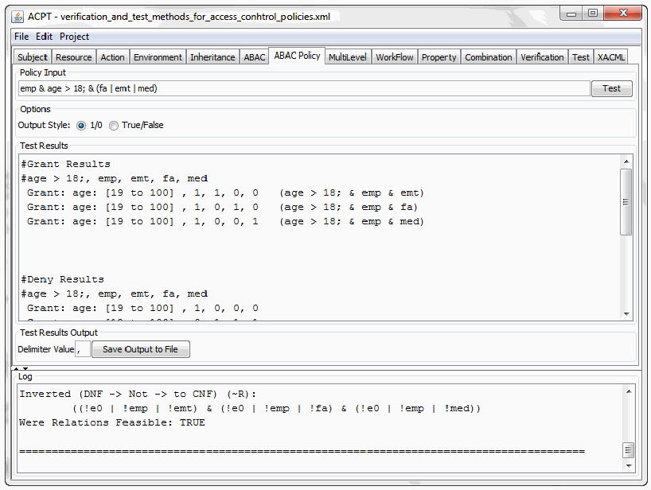
ACPTの関係式テスト画面。age等の関係式をブール条件に変換し、満たす値と満たさない値を求める結果が表示される。
Figure 32 Solving for Relational Expressions
図32 関係式を解く方法
未レビュー訳7 CONCLUSIONS
7 結論
未レビュー訳This document describes a notion of safety for access control, and analyzes verification approaches for static, dynamic, and historical AC models. Static models are those in which no access state is retained, while dynamic models may retain state during a session. Historical models include long-term user and object history in access decisions. An AC system is safe if no privilege can be escalated to unauthorized principals, but the correct privileges are always accessible to authorized principals. We also describe a taxonomy of faults that may occur in access control.
本書では、アクセス制御における安全性の概念を説明し、静的、動的、履歴的なACモデルに対する検証方法を分析した。静的モデルではアクセス状態を保持しない一方、動的モデルではセッション中に状態を保持する場合がある。履歴的モデルでは、アクセス判断にユーザーとオブジェクトの長期的な履歴を含める。権限が権限のない主体へ昇格することがなく、認可された主体は常に適切な権限を利用できる場合、ACシステムは安全である。また、アクセス制御で発生し得る障害の分類も示した。
未レビュー訳To verify safety requirements for AC models, this document provide a general approach that expresses AC models and AC safety requirements in the formal specification of black box models or first order logic checkers for verification. Then black box verifiers verify the specified models against the specified safety requirements. In addition to black box checking, white box checking methods that check the semantic coverage of the safety requirements also conforms to the intentions of the AC model authors. Finally, it is necessary to generate test cases to check the conformance of the implementations to their underlying models.
ACモデルの安全要件を検証するため、本書では、ACモデルとAC安全要件をブラックボックスモデルまたは一階論理チェッカーの形式仕様で表現し、検証する一般的な方法を示す。その後、ブラックボックス検証器が指定モデルを安全要件に照らして検証する。ブラックボックス検査に加えて、安全要件の意味的な網羅性を確認するホワイトボックス検査手法もあり、ACモデル作成者の意図との整合性を確認できる。最後に、実装が基礎となるモデルに適合しているかを確認するため、テストケースを生成する必要がある。
Conformance verification of access control model and safety requirements of generic AC policies bring benefits to society in two aspects. First, it should lead to improved verification practices for testing and verifying AC models in improving AC system quality and security in general. Second, innovations in new testing and verification algorithms and tools tend to propagate quickly across application or task domains where AC policies are used.
汎用ACポリシーのアクセス制御モデルと安全要件の適合性検証は、社会に2つの利点をもたらす。第一に、ACモデルの試験・検証手法が改善され、ACシステム全般の品質とセキュリティの向上につながる。第二に、新たなテスト・検証アルゴリズムやツールの技術革新は、ACポリシーが使用される他のアプリケーション分野やタスク分野にも速やかに広がる傾向がある。
未レビュー訳APPENDIX A - GLOSSARY
付録A—用語集
未レビュー訳ABAC
属性ベースアクセス制御（ABAC）
未レビュー訳an access control paradigm whereby access rights are granted to users through the use of policies which combine attributes together. The policies can use any type of attributes (user attributes, resource attributes, environment attribute etc.
属性を組み合わせるポリシーを用いてユーザーにアクセス権を付与するアクセス制御の方式。ポリシーでは、ユーザー属性、リソース属性、環境属性など、あらゆる種類の属性を使用できる。
未レビュー訳Access Control
アクセス制御
未レビュー訳Procedures and controls that limit or detect access to critical information resources. This can be accomplished through software, biometrics devices, or physical access to a controlled space.
重要な情報資源へのアクセスを制限または検知する手順および制御。ソフトウェア、生体認証装置、または管理された区域への物理的な入退室制御によって実現できる。
未レビュー訳Access Control Mechanism
アクセス制御機構
未レビュー訳Implementations of formal AC policy such as AC model. Access control mechanisms can be designed to adhere to the properties of the model by machine implementation using protocols, architecture, or formal languages such as program code.
ACモデルなどの形式的なACポリシーを実装したもの。アクセス制御機構は、プロトコル、アーキテクチャ、またはプログラムコードなどの形式言語による機械実装を通じて、モデルの特性に従うよう設計できる。
未レビュー訳Access Control Model
アクセス制御モデル
未レビュー訳Formal presentations of the security policies enforced by AC systems, and are useful for proving theoretical limitations of systems. AC models bridge the gap in abstraction between policy and mechanism.
ACシステムが適用するセキュリティポリシーを形式的に表現したもの。システムの理論的な限界を証明する際に役立つ。ACモデルは、ポリシーと機構の間にある抽象度の隔たりを埋める。
未レビュー訳Access Control Policy
アクセス制御ポリシー
未レビュー訳High-level requirements that specify how access is managed and who may access information under what circumstances.
アクセスがどのように管理され、どのような状況で誰が情報にアクセスできるかを定める、高水準の要件。
未レビュー訳ACPT
ACPT
Access Control Policy Tool.
アクセス制御ポリシーツール（Access Control Policy Tool）。
ACTS
ACTS
Automated Combinatorial Testing for Software.
ソフトウェア向け自動組合せテスト（Automated Combinatorial Testing for Software）。
Black Box Testing
ブラックボックステスト
未レビュー訳A method of software testing that examines the functionality of an application without peering into its internal structures or workings. This method of test can be applied to virtually every level of software testing: unit, integration, system and acceptance.
アプリケーションの内部構造や動作を調べずに、その機能を検査するソフトウェアテスト手法。この手法は、単体、統合、システム、受入れなど、ほぼすべてのレベルのソフトウェアテストに適用できる。
未レビュー訳Constraint
制約
未レビュー訳Access Control rules or confinements that describe the access privileges of resources for subjects.
主体に対するリソースのアクセス権限を規定する、アクセス制御の規則または制限。
未レビュー訳Discretionary access control (DAC)
任意アクセス制御（DAC）
未レビュー訳原本PDFの抜粋画像
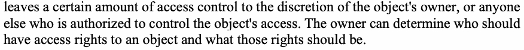
Extensible Access Control Markup Language (XACML)
拡張可能アクセス制御マークアップ言語（XACML）
未レビュー訳A general purpose language for specifying access control policies.
アクセス制御ポリシーを指定するための汎用言語。
未レビュー訳Mandatory access control (MAC)
強制アクセス制御（MAC）
未レビュー訳means that access control policy decisions are made by a central authority, not by the individual owner of an object. User cannot change access rights. An example of MAC occurs in military security, where an individual data owner does not decide who has a top-secret clearance, nor can the owner change the classification of an object from top-secret to secret.
アクセス制御ポリシーの決定を、個々のオブジェクト所有者ではなく中央機関が行う方式。ユーザーはアクセス権を変更できない。軍事セキュリティにおけるMACがその例である。個々のデータ所有者は、誰に極秘のクリアランスを付与するかを決めず、オブジェクトの分類を「極秘」から「秘密」に変更することもできない。
未レビュー訳Security Policy
セキュリティポリシー
未レビュー訳The statement of required protection for the information objects.
情報オブジェクトに必要な保護を記述したもの。
未レビュー訳Safety Requirements
安全要件
未レビュー訳AC properties, business requirements, specifications of expected/unexpected system security features, or directly translation of policy values. Safety requirements can also include privilege inheritance.
ACの特性、業務要件、システムのセキュリティ機能に関する仕様（期待されるもの、または期待されないもの）、あるいはポリシー値を直接変換したもの。安全要件には、権限の継承を含めることもできる。
未レビュー訳Separation of Duty (SOD)
職務分離（SOD）
未レビュー訳refers to the principle that no user should be given enough privileges to misuse the system on their own. For example, the person authorizing a paycheck should not also be the one who can prepare them. Separation of duties can be enforced either statically (by defining conflicting roles, i.e., roles which cannot be executed by the same user) or dynamically (by enforcing the control at access time). An example of dynamic separation of duty is the two-person rule. The first user to execute a two-person operation can be any authorized user, whereas the second user can be any authorized user different from the first [SS94]. There are various types of SOD, an important one is history-based SOD that regulate for example, the same subject (role) cannot access the same object for variable number of times.
1人のユーザーに、単独でシステムを悪用できるほどの権限を与えてはならないという原則を指す。例えば、給与支払いを承認する人が、その支払いを作成する人も兼ねるべきではない。職務分離は、静的に（同一ユーザーが実行できない競合ロールを定義するなど）または動的に（アクセス時に制御を適用するなど）実施できる。動的な職務分離の例として、二人ルールがある。二人で行う操作の最初のユーザーは認可されたユーザーなら誰でもよいが、2人目は最初のユーザーとは異なる認可済みユーザーでなければならない[SS94]。職務分離にはさまざまな種類があり、重要なものに履歴ベースの職務分離がある。例えば、同じ主体（ロール）が同じオブジェクトにアクセスできる回数を制限する。
未レビュー訳White Box Testing
ホワイトボックステスト
未レビュー訳(also known as clear box testing, glass box testing, transparent box testing, and structural testing) is a method of testing software that tests internal structures or workings of an application, as opposed to its functionality (i.e. black-box testing).
クリアボックステスト、グラスボックステスト、トランスペアレントボックステスト、構造テストとも呼ばれる。機能（すなわちブラックボックステスト）とは対照的に、アプリケーションの内部構造または動作を検査するソフトウェアテスト手法。
未レビュー訳APPENDIX B – SOD CONSTRAINTS
付録B—職務分離の制約
未レビュー訳1. Static Separation of Duties
1. 静的職務分離
(Simple) Static Separation of Duties (SSSoD) A principal may not be a member of any two exclusive roles.
（単純）静的職務分離（SSSoD）：主体は、排他的な2つのロールの両方に所属してはならない。
2. Dynamic Separation of Duties
2. 動的職務分離
(Simple) Dynamic Separation of Duties (SDSoD) A principal may be a member of any two exclusive roles but must not activate them at the same time.
（単純）動的職務分離（SDSoD）：主体は排他的な2つのロールに所属してよいが、それらを同時に有効化してはならない。
Object-based Separation of Duties (ObjSoD) A principal may be a member of any two exclusive roles and may also activate them at the same time, but he must not act upon the same object through both.
オブジェクトベースの職務分離（ObjSoD）：主体は排他的な2つのロールに所属し、同時に有効化してもよいが、両方のロールを通じて同じオブジェクトに対して操作してはならない。
未レビュー訳Operational Separation of Duties (OpSoD) A principal may be a member of some exclusive roles as long as the set of authorizations acquired over these roles does not cover an entire workflow.
運用上の職務分離（OpSoD）：これらのロールを通じて取得する認可の集合がワークフロー全体を網羅しない限り、主体はいくつかの排他的なロールに所属してよい。
未レビュー訳History-based Separation of Duties (HistSoD) A principal may be a member of some exclusive roles and the complete set of authorizations acquired over these roles may cover an entire workflow, but a principal must not use all authorizations on the same object(s). [SLS06]
履歴ベースの職務分離（HistSoD）：主体はいくつかの排他的なロールに所属してよく、それらのロールを通じて取得する認可の全体集合がワークフロー全体を網羅してもよい。ただし、主体は同じオブジェクトに対してすべての認可を使用してはならない。[SLS06]
未レビュー訳REFERENCES
参考文献
未レビュー訳[ACTS] Automated Combinatorial testing for Software (ACTS) [Website], National Institute of Standards and Technology. Available at:
[ACTS] Automated Combinatorial Testing for Software（ACTS）[ウェブサイト]、米国国立標準技術研究所。入手先：
未レビュー訳http://csrc.nist.gov/groups/SNS/acts/index.html.
http://csrc.nist.gov/groups/SNS/acts/index.html。
未レビュー訳[AF08] R. Abassi, S. Fatmi, “An Automated Validation Method for Security Policies: the firewall case,” The 4th Int. Conf. on Information Assurance and Security, 2008, pp. 291-294. https://doi.org/10.1109/IAS.2008.52.
[AF08] R. Abassi, S. Fatmi, “An Automated Validation Method for Security Policies: the firewall case,” The 4th Int. Conf. on Information Assurance and Security, 2008年, pp. 291-294. https://doi.org/10.1109/IAS.2008.52.
[AS15] M. Aqib, R. A. Shaikh, “Analysis and Comparison of Access Control Policies Validation Mechanisms,” International Journal of Computer Network and Information Security, 2015, 1, 54-69. https://doi.org/10.5815/ijcnis.2015.01.08.
[AS15] M. Aqib, R. A. Shaikh, “Analysis and Comparison of Access Control Policies Validation Mechanisms,” International Journal of Computer Network and Information Security, 2015年, 1, 54-69. https://doi.org/10.5815/ijcnis.2015.01.08.
[BL73] D.E. Bell, and L.J. LaPadula, Secure Computer Systems: Mathematical Foundations and Model, M74-244, MITRE Corp., Bedford, Mass., 1973 (also available as DTIC AS-771543). Available at: http://www-personal.umich.edu/~cja/LPS12b/refs/belllapadula1.pdf.
[BL73] D.E. Bell および L.J. LaPadula, Secure Computer Systems: Mathematical Foundations and Model, M74-244, MITRE Corp., Bedford, Mass., 1973年（DTIC AS-771543 としても入手可能）。入手先：http://www-personal.umich.edu/~cja/LPS12b/refs/belllapadula1.pdf.
[CFMYZ93] E. Clarke, M. Fujita, P. McGeer, J. Yang, and X. Zhao, “Multi-terminal binary decision diagrams: An efficient data structure for matrix representation,” International Workshop on Logic Synthesis, 1993.Available at:
[CFMYZ93] E. Clarke、M. Fujita、P. McGeer、J. Yang、X. Zhao、「多端子二分決定図：行列表現のための効率的なデータ構造」、論理合成国際ワークショップ、1993年。入手先：
未レビュー訳http://repository.cmu.edu/cgi/viewcontent.cgi?article=1456&context=compsci.
http://repository.cmu.edu/cgi/viewcontent.cgi?article=1456&context=compsci。
未レビュー訳[Fisler et al 05] K. Fisler, S. Krishnamurthi, L. A. Meyerovich, and M. C. Tschantz, “Verification and Change Impact Analysis of Access Control Policies,” Proceeding, 27th International Conference on Software Engineering (ICSE’05), pp. 196-205, ACM, New York, NY, 2005. https://doi.org/10.1145/1062455.1062502.
[Fisler et al 05] K. Fisler, S. Krishnamurthi, L. A. Meyerovich および M. C. Tschantz, “Verification and Change Impact Analysis of Access Control Policies,” Proceeding, 27th International Conference on Software Engineering (ICSE’05), pp. 196-205, ACM, New York, NY, 2005年. https://doi.org/10.1145/1062455.1062502.
[Gallier87] J. H. Gallier, Logic for Computer Science: Foundations of Automatic Theorem Proving, ch. 10, pp. 448–476, Wiley, 1987.
[Gallier87] J. H. Gallier, Logic for Computer Science: Foundations of Automatic Theorem Proving, 第10章, pp. 448–476, Wiley, 1987年.
[GMH14] A. Gouglidis, I. Mavridis, V. Hu, “Security policy verification for multi-domains in Cloud systems,” International Journal of Information Security (IJIS13) 13(2), pp. 97-111, April 2014. https://doi.org/10.1007/s10207-013-0205-x.
[GMH14] A. Gouglidis, I. Mavridis, V. Hu, “Security policy verification for multi-domains in Cloud systems,” International Journal of Information Security (IJIS13) 13(2), pp. 97-111, 2014年4月. https://doi.org/10.1007/s10207-013-0205-x.
[HHX12] J. Hwang, V. Hu, and T. Xie, “Paradigm in Verification of Access Control,”
[HHX12] J. Hwang、V. Hu、T. Xie、「アクセス制御検証のパラダイム」、
未レビュー訳Position paper, Workshop on Metrics and Standards for Software Testing, NIST Gaithersburg, Maryland, June 20, 2012. https://doi.org/10.1109/SERE-C.2012.14.
ポジションペーパー、ソフトウェアテストの測定基準と標準に関するワークショップ、米国メリーランド州ゲイサーズバーグのNIST、2012年6月20日。https://doi.org/10.1109/SERE-C.2012.14。
未レビュー訳[HKX08] V.C. Hu, D.R. Kuhn, and T. Xie, “Property Verification for Generic Access Control Models,” in Proceeding of The 2008 IEEE/IFIP International Symposium on Trust, Security and Privacy for Pervasive Application (TSP2008), Shanghai, China, December 17-20 2008. https://doi.org/10.1109/EUC.2008.22.
[HKX08] V.C. Hu, D.R. Kuhn および T. Xie, “Property Verification for Generic Access Control Models,” Proceeding of The 2008 IEEE/IFIP International Symposium on Trust, Security and Privacy for Pervasive Application (TSP2008) 所収, 中国・上海, 2008年12月17～20日. https://doi.org/10.1109/EUC.2008.22.
[HKXH11] V. Hu, R. Kuhn, T. Xie, and J. Hwang, “Model Checking for Verification of Mandatory Access Control Models and Properties,” International Journal of Software Engineering and Knowledge Engineering (IJSEKE) 21(1), February
[HKXH11] V. Hu, R. Kuhn, T. Xie および J. Hwang, “Model Checking for Verification of Mandatory Access Control Models and Properties,” International Journal of Software Engineering and Knowledge Engineering (IJSEKE) 21(1), 2月
2011.https://doi.org/10.1142/S021819401100513X.
2011.https://doi.org/10.1142/S021819401100513X。
未レビュー訳[Kuhn11] D.R. Kuhn, “Vulnerability hierarchies in access control configurations,” 4th Symposium on Configuration Analytics and Automation (SAFECONFIG 2011), pp. 1-9, December 2011. https://doi.org/10.1109/SafeConfig.2011.6111679.
[Kuhn11] D.R. Kuhn, “Vulnerability hierarchies in access control configurations,” 4th Symposium on Configuration Analytics and Automation (SAFECONFIG 2011), pp. 1-9, 2011年12月. https://doi.org/10.1109/SafeConfig.2011.6111679.
[Hu02] V.C. Hu, The Policy Machine For Universal Access Control, Dissertation, Computer Science Department, University of Idaho, Idaho, 2002.
[Hu02] V. C. Hu、『ユニバーサルアクセス制御のためのポリシーマシン』、博士論文、アイダホ大学コンピュータサイエンス学科、アイダホ州、2002年。
[HRU76] M.A. Harrison, W.L. Ruzzo, and J.D. Ullman, “Protection in Operating Systems,” Communications of the ACM 19(8), pp. 461-471, August 1976.
[HRU76] M. A. Harrison、W. L. Ruzzo、J. D. Ullman、「オペレーティングシステムにおける保護」、Communications of the ACM 19巻8号、461–471頁、1976年8月。
未レビュー訳https://doi.org/10.1145/360303.360333.
https://doi.org/10.1145/360303.360333。
未レビュー訳[HS13] V. Hu and K. Scarfone, “Real-Time Access Control Rule Fault Detection Using a Simulated Logic Circuit,” Proceeding, 2013 ASE/IEEE International Conference on Privacy, Security, Risk and Trust, Washington D.C., September 8-14, 2013, pp. 494-501. https://doi.org/10.1109/SocialCom.2013.76.
[HS13] V. Hu および K. Scarfone, “Real-Time Access Control Rule Fault Detection Using a Simulated Logic Circuit,” Proceeding, 2013 ASE/IEEE International Conference on Privacy, Security, Risk and Trust, Washington D.C., 2013年9月8～14日, pp. 494-501. https://doi.org/10.1109/SocialCom.2013.76.
[HXHA10] J. Hwang, T. Xie, V. Hu, and M. Altunay, “Mining Likely Properties of Access Control Policies via Association Rule Mining,” DBSec 2010: Data and Applications Security and Privacy XXIV: 24th Annual IFIP WG 11.3 Working Conference, Rome, Italy, June 21-23, 2010, Proceedings, Lecture Notes in Computer Science 6166, Springer: Berlin, pp. 193-208. https://doi.org/10.1007/978-3-642-13739-6_13.
[HXHA10] J. Hwang, T. Xie, V. Hu および M. Altunay, “Mining Likely Properties of Access Control Policies via Association Rule Mining,” DBSec 2010: Data and Applications Security and Privacy XXIV: 24th Annual IFIP WG 11.3 Working Conference, Rome, Italy, June 21-23, 2010, Proceedings, Lecture Notes in Computer Science 6166, Springer: Berlin, pp. 193-208. https://doi.org/10.1007/978-3-642-13739-6_13.
[HXHAS10] J. Hwang, T. Xie, V. Hu, and M. Altunay, “ACPT: A Tool for Modeling and Verifying Access Control Policies,” Proceedings of the IEEE International Symposium on Policies for Distributed Systems and Networks (POLICY 2010), System Demo, George Mason University, Fairfax, Virginia, USA, July 21-23, 2010, pp. 40-43. https://doi.org/10.1109/POLICY.2010.22.
[HXHAS10] J. Hwang, T. Xie, V. Hu および M. Altunay, “ACPT: A Tool for Modeling and Verifying Access Control Policies,” Proceedings of the IEEE International Symposium on Policies for Distributed Systems and Networks (POLICY 2010), System Demo, George Mason University, 米国バージニア州フェアファックス, 2010年7月21～23日, pp. 40-43. https://doi.org/10.1109/POLICY.2010.22.
[MX07] E. Martin and T. Xie, “A Fault Model and Mutation Testing of Access Control Policies,” Proceedings of the 16th International Conference on World Wide Web (WWW 2007), Security, Privacy, Reliability, and Ethics Track, Banff, Alberta, Canada, May 2007, pp. 667-676. https://doi.org/10.1145/1242572.1242663.
[MX07] E. Martin および T. Xie, “A Fault Model and Mutation Testing of Access Control Policies,” Proceedings of the 16th International Conference on World Wide Web (WWW 2007), Security, Privacy, Reliability, and Ethics Track, カナダ・アルバータ州バンフ, 2007年5月, pp. 667-676. https://doi.org/10.1145/1242572.1242663.
[KTAK07] S. Kikuchi, S. Tsuchiya, M. Adachi, and T. Katsuyama, “Policy Verification and Validation Framework Based on Model Checking Approach,” Fourth International Conference on Autonomic Computing, 2007 (ICAC ’07), Jacksonville, Florida, USA, June 11-15, 2007, pp. 1–9.
[KTAK07] S. Kikuchi、S. Tsuchiya、M. Adachi、T. Katsuyama、「モデル検査手法に基づくポリシー検証・妥当性確認フレームワーク」、第4回自律コンピューティング国際会議（ICAC ’07）、米国フロリダ州ジャクソンビル、2007年6月11～15日、1–9頁。
未レビュー訳https://doi.org/10.1109/ICAC.2007.31.
https://doi.org/10.1109/ICAC.2007.31。
未レビュー訳[KHFKL16] D.R. Kuhn, V.C. Hu, D.F. Ferraiolo, R.N. Kacker, and L. Yu, “Pseudo-exhaustive Testing of Attribute Based Access Control Rules,” Fifth International Workshop on Combinatorial Testing (IWCT 2016), April 13, 2015, Graz, Austria, pp. 51-58. https://doi.org/10.1109/ICSTW.2016.35.
[KHFKL16] D.R. Kuhn, V.C. Hu, D.F. Ferraiolo, R.N. Kacker および L. Yu, “Pseudo-exhaustive Testing of Attribute Based Access Control Rules,” Fifth International Workshop on Combinatorial Testing (IWCT 2016), 2015年4月13日, オーストリア・グラーツ, pp. 51-58. https://doi.org/10.1109/ICSTW.2016.35.
[MARGRAVE] The Margrave Policy Analyzer [Website], available at: http://www.margrave-tool.org/.
[MARGRAVE] The Margrave Policy Analyzer [ウェブサイト], 入手先：http://www.margrave-tool.org/.
[MOHAWK] Mohawk: Automatic Verification of Access-Control Policies [Website], available at: http://kjayaram.mysite.syr.edu/Mohawk.html.
[MOHAWK] Mohawk: Automatic Verification of Access-Control Policies [ウェブサイト], 入手先：http://kjayaram.mysite.syr.edu/Mohawk.html.
[NIST-IR-7316] V.C. Hu, D.F. Ferraiolo, D.R. Kuhn, Assessment of Access Control Systems, NIST Interagency Report 7316, National Institute of Standards and Technology, Gaithersburg, Maryland, September 2006. https://doi.org/10.6028/NIST.IR.7316.
[NIST-IR-7316] V.C. Hu, D.F. Ferraiolo, D.R. Kuhn, Assessment of Access Control Systems, NIST Interagency Report 7316, National Institute of Standards and Technology, メリーランド州ゲイサーズバーグ, 2006年9月. https://doi.org/10.6028/NIST.IR.7316.
[NIST-IR-7874] V.C. Hu and K. Scarfone, Guidelines for Access Control System Evaluation Metrics, NIST Interagency Report 7874, National Institute of Standards and Technology, Gaithersburg, Maryland, September 2012. https://doi.org/10.6028/NIST.IR.7874.
[NIST-IR-7874] V.C. Hu および K. Scarfone, Guidelines for Access Control System Evaluation Metrics, NIST Interagency Report 7874, National Institute of Standards and Technology, メリーランド州ゲイサーズバーグ, 2012年9月. https://doi.org/10.6028/NIST.IR.7874.
[NIST-SP-162] V.C. Hu, D. Ferraiolo, R. Kuhn, A. Schnitzer, K. Sandlin, R. Miller, and K.
[NIST-SP-162] V. C. Hu、D. Ferraiolo、R. Kuhn、A. Schnitzer、K. Sandlin、R. Miller、K.
未レビュー訳Scarfone, Guide to Attribute Based Access Control (ABAC) Definition and Considerations, NIST Special Publication 800-162, National Institute of Standards and Technology, Gaithersburg, Maryland, January 2014. https://doi.org/10.6028/NIST.SP.800-162.
Scarfone、『属性ベースアクセス制御（ABAC）の定義と検討事項のガイド』、NIST特別刊行物800-162、米国国立標準技術研究所、メリーランド州ゲイサーズバーグ、2014年1月。https://doi.org/10.6028/NIST.SP.800-162。
[NuSMV] R. Cavada, A. Cimatti, G. Keighren, E. Olivetti, M. Pistore, and M. Roveri, NuSMV 2.6 Tutorial, FBK-irst. Available at: http://nusmv.fbk.eu/NuSMV/tutorial/v26/tutorial.pdf.
[NuSMV] R. Cavada, A. Cimatti, G. Keighren, E. Olivetti, M. Pistore, and M. Roveri, NuSMV 2.6 Tutorial, FBK-irst. 入手先：http://nusmv.fbk.eu/NuSMV/tutorial/v26/tutorial.pdf.
[NuSMV-M] NuSMV: a new symbolic model checker [Website], available at:
[NuSMV-M] NuSMV：新しいシンボリックモデルチェッカー［ウェブサイト］、入手先：
未レビュー訳http://nusmv.fbk.eu/.
http://nusmv.fbk.eu/。
未レビュー訳[PST96] B. Potter, J. Sinclair, and D. Till, An Introduction to Formal Specification and Z, Second Edition, Prentice Hall: Saddle River, New Jersey, 1996.
[PST96] B. Potter、J. Sinclair、D. Till、『形式仕様記述とZ入門』第2版、Prentice Hall、ニュージャージー州サドルリバー、1996年。
未レビュー訳[SLS06] A. Schaad, V. Lotz, and K. Sohr, “A Model-checking Approach to Analyzing Organizational Controls in a Loan Origination Process,” Proceedings of the 11th ACM Symposium on Access Control Models and Technologies, Lake Tahoe, California, June 7-9, 2006, pp. 139-149. https://doi.org/10.1145/1133058.1133079.
[SLS06] A. Schaad, V. Lotz, and K. Sohr, “A Model-checking Approach to Analyzing Organizational Controls in a Loan Origination Process,” Proceedings of the 11th ACM Symposium on Access Control Models and Technologies, Lake Tahoe, California, 2006年6月7～9日, pp. 139-149. https://doi.org/10.1145/1133058.1133079.
[SND13] S. Saghafi, T. Nelson, D. J. Dougherty, “Geometric Logic for Policy Analysis,” International Workshop on Automated Reasoning in Security and Software
[SND13] S. Saghafi、T. Nelson、D. J. Dougherty、「ポリシー分析のための幾何論理」、セキュリティおよびソフトウェアの自動推論に関する国際ワークショップ
未レビュー訳Verification, 2013, pp. 1-9. Available at: http://web.cs.wpi.edu/~tn/publications/snd-arsec13-geometric.pdf.
検証、2013年、1–9頁。入手先：http://web.cs.wpi.edu/~tn/publications/snd-arsec13-geometric.pdf。
未レビュー訳[SS94] R.S. Sandhu., and P Samarati, “Access Control: Principles and Practice,” IEEE Communications Magazine 32(9), September 1994, pp. 40-48.
[SS94] R. S. Sandhu、P. Samarati、「アクセス制御：原則と実践」、IEEE Communications Magazine 32巻9号、1994年9月、40–48頁。
未レビュー訳https://doi.org/10.1109/35.312842.
https://doi.org/10.1109/35.312842。
未レビュー訳[XACML] XACML resources [Website], OASIS. Available at: http://docs.oasis-open.org/xacml/.
[XACML] XACML resources［ウェブサイト］, OASIS. 入手先：http://docs.oasis-open.org/xacml/.